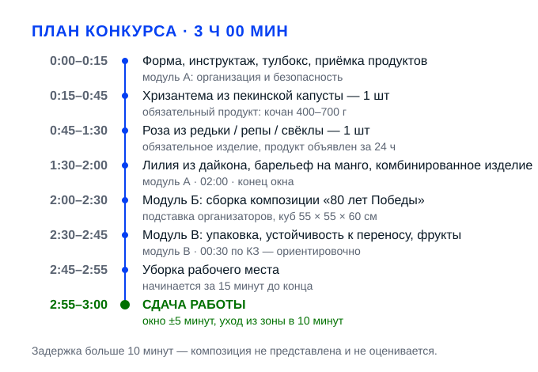
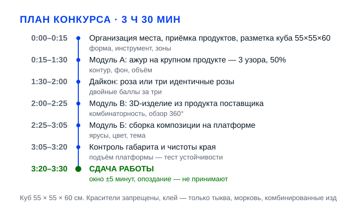
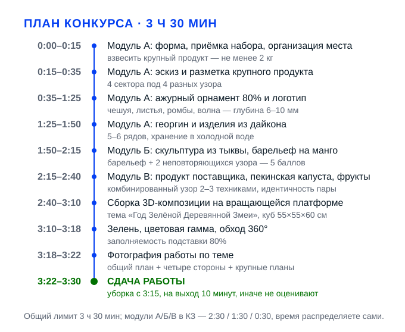

Карвинг (Р,О)
Задания ниже — официальные файлы «Абилимпикс» (источник: abilympics-russia.ru), разложенные по категориям. Решения написаны по тексту задания, регламенту и критериям оценки; в них указано, что именно проверяет эксперт.
Школьник
14–16 лет, базовый уровень заданияВыдержка из официального конкурсного задания: страницы, относящиеся к категории «Школьник» (стр. 6–11 источника).
Пошаговое решение
Задание для школьников длится 3 часа 00 минут и состоит из трёх модулей: модуль А — вырезание изделий из овощей и фруктов по заданной тематике (2 часа 00 минут), модуль Б — сборка композиции на тему «80-летия Великой Победы» (30 минут), модуль В — особенности задания: комбинированные и дополнительные изделия (30 минут). Обязательный минимум жёсткий: хризантема из пекинской капусты — 1 штука, роза из зелёной редьки, жёлтой репы или свёклы — 1 штука, причём продукт для розы организаторы оглашают только за 24 часа до старта. Композиция собирается на декоративной подставке от организаторов и обязана уложиться в «куб» 55 × 55 × 60 см по длине, ширине и высоте, а ещё выдержать перенос, не развалившись. Дополнительно можно вырезать три идентичные розы за двойные баллы, лилию из дайкона, барельеф или надпись на манго и изделие из продукта поставщика. Красители запрещены полностью, заготовки заранее делать нельзя, клей разрешён в малом количестве только для моркови. Ниже разобрано, в каком порядке всё это вырезать, как проверить каждый элемент и где чаще всего теряются баллы.

Задача 1. Войти в зону, принять продукты и разложить рабочее местоМодуль А · организация, внешний вид, безопасная работа · 0:00–0:15
Первые пятнадцать минут не входят в чистое время вырезания, но именно они определяют, сколько баллов вы донесёте до финиша. Организованное рабочее место, опрятный внешний вид и безопасная работа стоят в результатах модуля А отдельными строками, и оценивают их не по итоговой фотографии, а в течение всего конкурса. Кроме того, приёмка продуктов — единственный момент, когда недостающий или подгнивший овощ ещё можно заменить через главного эксперта, не теряя времени из модулей.
Действие 1.1. Пройти допуск: форма, инструктаж, рабочее место
Шаг 1.1.1
Надеваем полный комплект профессиональной одежды, без которого к конкурсу не допускают: поварская куртка, брюки, фартук, колпак и закрытые сабо на нескользящей подошве. Все пять элементов должны быть на вас одновременно, а не лежать в сумке на случай замечания. Волосы убираем под колпак полностью — и спереди, и на затылке, длинные пряди дополнительно закалываем. Ногти коротко подстрижены, без лака и покрытия, часы, кольца, браслеты и длинные серьги снимаем заранее, дома: в зоне соревнования на это не будет ни минуты, а украшение под перчаткой или у среза овоща — это уже нарушение санитарии.
Опрятный внешний вид — отдельная строка в результатах модуля А, и проверяют её на входе и выборочно по ходу работы. Логика не в формальности: карвинг делается руками у самого лица, и волос, упавший на срез, виден эксперту раньше, чем вы его заметите. Грязный фартук к середине конкурса тоже считается, поэтому светлая форма и аккуратность с соком свёклы важны с первой минуты: свекольный сок не отстирывается и остаётся на ткани до сдачи.
Отойдите к зеркалу или попросите соседа посмотреть со спины: волос не видно ни спереди, ни сзади, фартук завязан и не сползает, куртка застёгнута, обувь закрытая и сухая. Проверьте рукава — они не должны свисать ниже запястья, иначе будут цепляться за нож и мешать тонкому срезу.
Самая частая ошибка — надеть колпак «на макушку», оставив затылок открытым: спереди всё выглядит прилично, а сзади волосы выбиваются, и балл за внешний вид снимается сразу. Вторая — прийти в футболке и кроссовках, рассчитывая надеть куртку «потом»: время уйдёт из модуля А, а замечание уже будет записано.
Эксперт фиксирует форму до старта и затем поглядывает на неё в течение конкурса: пятна сока, сползший колпак и закатанные до локтя рукава он отмечает как нарушение, даже если изделия получились красивыми.
Шаг 1.1.2
За 15 минут до старта подходим к техническому эксперту, слушаем инструктаж по технике безопасности и расписываемся в протоколах — без подписи к работе не допускают. На этом же инструктаже уточняем три практические вещи: где стоит аптечка, как вызвать технического эксперта и разрешено ли пользоваться перчатками при работе с окрашивающими продуктами. Отдельно запоминаем правило ножа: лезвие всегда направлено от себя, нож передают рукояткой вперёд, а режут только на доске, а не на весу и не над ёмкостью с водой.
Безопасная работа — третья обязательная строка модуля А, и она оценивается строго, потому что карвинг — работа с короткими, но острыми ножами и с продуктами, которые скользят в руке. Одно движение ножом «на весу», чтобы показать соседу, как вырезать лепесток, — это не только риск пореза, но и зафиксированное нарушение, за которое снимают баллы независимо от качества изделий.
Подпись в протоколе стоит, техэксперт видел ваше лицо, вы знаете, где аптечка и как позвать помощь. Проверьте заранее, что доска не скользит: подложите под неё влажное полотенце, если стол гладкий — это две секунды, которые потом сэкономят порез.
Подписать протокол «после старта» невозможно: время уйдёт, а модуль А начнётся без вас. Вторая типичная ошибка — резать, держа продукт на весу в левой руке: круглый дайкон или свёкла проворачиваются, и нож соскальзывает по пальцам.
Технический эксперт отмечает, подошёл ли участник к инструктажу и как ведёт себя у стола: направление лезвия, положение пальцев, порядок с инструментом — всё это попадает в оценочный лист по безопасности.
Шаг 1.1.3
Занимаем рабочее место строго по номеру жеребьёвки, ставим на стол номер участника так, чтобы он был виден эксперту и не мешал композиции, и осматриваем стол целиком: устойчивость, освещение, расстояние до соседа, наличие розетки, если планируете использовать свою подсветку. Сразу проверяем, что столешница сухая: на мокром столе скользит доска, а разлившаяся вода подкрашивается свекольным соком и пачкает форму.
Рабочее место по жеребьёвке — не формальность, а условие равенства: у всех одинаковые столы и одинаковый свет, и менять место нельзя даже при явном неудобстве. Осмотр стола занимает минуту, но именно на этом этапе обнаруживается, что стол качается или что источник света оказался за спиной, — и тогда у вас есть время попросить подложку или развернуть доску, а не выяснять это на пятом лепестке хризантемы.
Номер участника на месте и читается, стол не качается, доска не скользит, свет падает спереди или чуть сбоку, а не в глаза. Если рядом стоит ведро для отходов — убедитесь, что вы дотягиваетесь до него, не вставая с места: бегать по зоне с ножом в руке нельзя.
Классическая ошибка — начать раскладывать продукты, не проверив стол, и потом полтора часа работать на качающейся поверхности: при тонком срезе это даёт рваные лепестки. Вторая — поставить номер участника за композицию, где его не видно: работа без опознавательного номера может быть не идентифицирована при оценке.
Эксперт сверяет номер на столе с протоколом жеребьёвки в первые же минуты, а дальше смотрит, не переставлял ли участник оборудование и не занял ли чужую зону. В протоколе он отмечает и то, насколько аккуратно участник обошёлся с границами стола.
Шаг 1.1.4
Распаковываем тулбокс и выкладываем инструмент на стол так, чтобы его видели эксперты: карбовочные ножи треугольного и овального сечения, тайский нож, малый нож для тонкой работы, нуазетные выемки, шпажки, кисть. Каждый нож показываем и получаем разрешение на весь дополнительный материал из тулбокса до старта — после старта согласование занимает время, которого нет. Всё, что перечислено в инфраструктурном листе (доски, ножи, посуда, оазис, шпажки), проносить в тулбоксе запрещено, поэтому такие вещи сразу убираем обратно, чтобы не получить замечание на приёмке.
Порядок с инструментом входит в критерий организованного рабочего места: эксперту важно видеть, что участник знает свой набор и не протаскивает лишнего. Запрет на дублирование инфраструктурного листа объясняется просто — организаторы гарантируют одинаковые условия всем, а «свой» нож или доска создают преимущество. Согласованный заранее инструмент избавляет и от спора в середине работы, когда эксперт просит убрать непонятный предмет со стола.
Весь инструмент разложен по порядку использования, лезвия направлены в одну сторону, ничего не лежит на краю стола. Разрешение получено на каждую позицию, спорных предметов на столе не осталось. Проверьте себя вопросом: если эксперт подойдёт через час и попросит назвать любой предмет на столе, вы ответите сразу?
Ошибка новичка — вывалить весь тулбокс на стол кучей: в ней теряется нужный нож, а лишние предметы выглядят как непроверенный инструмент. Вторая — пронести «любимый» нож, который есть в инфраструктурном листе: его изымут, а запись о нарушении останется.
Эксперты проходят вдоль столов на приёмке тулбокса и отмечают, что именно участник показал и что осталось на столе. Незаявленный инструмент, найденный позже, считается нарушением порядка.
Действие 1.2. Принять продукты и разложить зоны
Шаг 1.2.1
Берём корзину и пересчитываем всё по инфраструктурному листу, отмечая каждую позицию: пекинская капуста, зелёная редька (или жёлтая репа, или свёкла — что объявили за 24 часа), дайкон, манго, морковь, дополнительные овощи, фрукты для композиции. Кочан пекинской капусты взвешиваем и запоминаем вес: для хризантемы нужен кочан 400–700 граммов, из слишком маленького получится мелкий цветок, а из очень крупного — рыхлый, с грубыми листьями. Заодно проверяем количество: если обязательного продукта одна штука, права на ошибку нет, и лучше выяснить это сейчас.
Пересчёт по списку — прямое попадание в критерий организованного рабочего места и единственная страховка от пустого места в композиции. Расхождения, замеченные до старта, устраняют через главного эксперта; после старта замену дают только в исключительном случае и только с его согласия. Вес кочана важен ещё и потому, что от него зависит диаметр хризантемы: цветок должен читаться в композиции, а не теряться между крупными фруктами.
Все строки списка отмечены, вес кочана записан, количество каждого обязательного продукта известно. Если чего-то нет или пришло меньше — вы это уже знаете и стоите у стола главного эксперта, а не начинаете резать в надежде, что обойдётся.
Начать с вырезания, не сверив набор, — потом выясняется, что дайкон один и он нужен и на лилию, и на подставку под розу. Вторая ошибка — молча принять подгнивший кочан: его не заменят, а внутренние листья всё равно придётся выбрасывать, и хризантема получится вдвое меньше задуманной.
Наблюдает, сверялся ли участник с перечнем и насколько уверенно владеет составом корзины. Вопрос «что у вас в наборе?» на приёмке — обычная проверка организации.
Шаг 1.2.2
Проверяем каждый продукт на качество, потому что карвинг не прощает внутренних дефектов: кочан должен быть плотным, с белым срезом кочерыжки и без слизи между листьями; редька и репа — твёрдыми, с ровной поверхностью, без пустот и «ватной» середины; свёкла — плотной, с тёмным однородным срезом без белых волокнистых колец; дайкон — упругим, тяжёлым для своего размера; манго — плотным, слегка недозрелым, чтобы кожура держала барельеф. Отдельно осматриваем декоративную подставку от организаторов, оазис, шпажки и рускус: подставка должна быть целой и устойчивой, оазис — свежим, а не крошащимся.
Качество продукта определяет, получится ли тонкий лепесток: из перемороженного или пересушенного овоща срез крошится, а из перезрелого манго кожура рвётся под ножом, и барельеф превращается в пятно. Подставка — обязательный элемент композиции по конкурсному заданию, поэтому её состояние нужно проверить до старта: шаткая опора добавит риск при переносе, а устойчивость к транспортировке — прямая строка в критериях модуля Б.
Проверяйте тремя признаками: плотность на нажатие (ямка не остаётся), запах (свежий, без кислого), срез (однородный, без потемнений и пустот). Подставку покачайте рукой: она должна стоять без люфта. Оазис сожмите — он должен пружинить, а не рассыпаться.
Самая дорогая ошибка — взять для розы овощ с внутренней пустотой: снаружи он плотный, а на третьем ряду лепестков нож проваливается в полость, и цветок разваливается. Вторая — не проверить подставку: шаткая опора при переносе даёт падение композиции, а это минус баллы сразу за устойчивость и за композиционность.
Технический эксперт фиксирует состояние подставки и продуктов вместе с участником. Если дефект был до старта, о нём нужно сказать сразу — тогда его не отнесут к вашей работе.
Шаг 1.2.3
Раскладываем продукты и инвентарь по зонам, чтобы рука находила нужное не глядя: справа от доски — то, что пойдёт в работу сейчас (капуста, редька), слева — ёмкость для отходов, в центре — доска и ножи, сзади — глубокая посуда с холодной водой для готовых цветов, отдельно — шпажки, зубочистки и оазис. Заранее заготовленные декорации (ткань, зеркала, мелкие подставки) распаковываем и убираем на выставочную зону, подальше от рабочей поверхности, чтобы они не намокли и не были задеты ножом.
Зонирование — это чистое время: каждый лишний шаг в сторону от стола при 50 вырезаемых лепестках превращается в несколько минут, а модуль А ограничен двумя часами. Отдельная ёмкость с холодной водой нужна потому, что цветы из редьки, репы и дайкона на воздухе быстро подсыхают по кромке. Декорации на выставочной зоне — требование последовательности выполнения задания: они не должны мешать работе и пачкаться соком.
Рука дотягивается до всего, что нужно, без перемещения по столу: отходы не смешиваются с продуктами, вода стоит так, чтобы в неё можно было опустить цветок одним движением, декорации лежат отдельно и не мешают. Проверьте ширину рабочей зоны — на доске должно оставаться место для разложенных лепестков.
Сложить готовые цветы прямо на доску рядом с отходами: лепестки мнутся, а обрезки прилипают к срезу. Вторая ошибка — поставить воду для цветов за спиной, тогда каждый цветок несётся через весь стол и роняет капли на форму и на заготовки.
Эксперт смотрит на организацию пространства в динамике: если участник всё время ищет инструмент или роняет обрезки на пол, это видно и попадает в строку «организованное рабочее место».
Задача 2. Вырезать хризантему из пекинской капустыМодуль А · обязательное изделие из обязательного продукта · 0:15–0:45
Хризантема из пекинской капусты — обязательное изделие, и её отсутствие обнуляет целую строку результатов модуля А, поэтому она делается первой, пока руки и продукт свежие. Работа состоит из трёх фаз: подготовка кочана, послойная формовка лепестков карбовочным ножом и выдержка в холодной воде, которая раскрывает лепестки. Здесь важно не количество ярусов, а толщина лепестка и глубина надреза: именно от них зависит, будет цветок изящным или похожим на разлохмаченный кочан.
Действие 2.1. Подготовить кочан и инструмент
Шаг 2.1.1
Берём кочан весом 400–700 граммов, кладём на доску и отрезаем верхнюю часть так, чтобы от основания осталось 10–14 сантиметров. Режем одним уверенным движением длинного ножа, а не пилим: пилящий срез рвёт волокна, и верхний ярус лепестков потом лохматится. Отрезанную верхушку не выбрасываем сразу — из плотных внутренних листьев может выйти дополнительный элемент для композиции. Основание ставим срезом вниз и смотрим, насколько ровно оно стоит: цветок должен держаться на кочерыжке, а не заваливаться.
Высота 10–14 сантиметров — это рабочая зона для ножа: если оставить больше, лепестки получатся длинными и грубыми, если меньше — не хватит глубины, и цветок выйдет плоским. Отсутствие хризантемы из пекинской капусты в готовой работе — прямое невыполнение обязательного условия модуля А, поэтому кочан нужно обработать так, чтобы изделие просматривалось как цветок, а не как обрезанный овощ.
Срез ровный, без рваных волокон, высота основания в пределах 10–14 сантиметров. Поставьте заготовку на стол: она стоит сама, не заваливается, кочерыжка не выступает за габарит. Приложите линейку или просто сравните с шириной ладони — это и есть ориентир контроля.
Ошибка — отрезать верхушку «по памяти» и оставить 20 сантиметров: лепестки выходят длинными, торчат в стороны, центр не читается. Вторая — резать короткими движениями и размочалить основание: тогда наружный ярус рвётся при первом же надрезе.
Эксперт смотрит на геометрию: высота цветка относительно диаметра и ровность среза видны сразу при сравнении с работами соседей. Отдельно он проверяет, не раздавлена ли кочерыжка ножом и стоит ли заготовка ровно.
Шаг 2.1.2
Снимаем верхние крупные листья, если они вялые, повреждённые или слишком тёмные, оставляя 4–5 плотных наружных листьев как основу первого яруса. Листья, которые крепко держатся за кочерыжку и не отходят, не отрываем силой — делаем два небольших насечки у основания и снимаем. Разводим заготовку над раковиной и стряхиваем воду из пазух: внутри кочана между листьями остаётся влага, и при надрезе она мешает ножу идти ровно.
Наружные листья — это будущие лепестки первого яруса, и от их состояния зависит вся геометрия цветка: вялый лист не раскроется в воде, а порванный даст некрасивую кромку, которую уже не исправить. Насечки вместо отрыва нужны потому, что при отрыве тянется волокно по всей длине листа и на срезе остаётся рваная дорожка, которая хорошо видна на белом фоне.
Наружный ярус ровный, без подсохших и порванных кромок, листья держатся на основании плотно. Вода из пазух удалена: наклоните заготовку над раковиной и встряхните — если капли не текут, можно резать. Осмотрите кочерыжку: на ней не должно быть тёмных точек и слизи.
Частая ошибка — оставить все листья, включая подгнившие и жёлтые: они темнеют в воде и портят вид всего цветка. Вторая — отрывать лист силой и вытянуть волокно до самой кочерыжки: после этого ярус не держится и лепесток сваливается вниз.
Эксперт осматривает заготовку на соответствие продукту и на аккуратность подготовки: рваные волокна у основания он замечает при первом же развороте работы. Если капуста объявлена обязательным продуктом, он проверяет и то, что кочан не заменён другим.
Шаг 2.1.3
Выбираем карбовочный нож треугольного или овального сечения — треугольный даёт более острый «зуб» лепестка, овальный — мягкую округлую кромку; для хризантемы из капусты удобнее узкий треугольник. Проверяем заточку на обрезке: нож должен входить в лист под собственным весом, без нажима. Держим нож как карандаш — большой и указательный пальцы у основания клинка, остальные охватывают рукоятку, — так контроль глубины точнее, чем при хвате «в кулак».
От заточки и хвата зависит толщина лепестка, а конкурсное задание прямо требует, чтобы лепестки были достаточно тонкими: только тогда хризантема выглядит изящно и раскрывается в воде. Тупой нож не режет, а давит: лист сминается, кромка становится волнистой, и цветок теряет форму. Хват «как карандаш» позволяет вести надрез на заданную глубину и не прорезать лист насквозь у основания.
Нож входит в лист без нажима и оставляет чистую кромку без вмятин. Проверьте на отходном листе: срез должен быть гладким и блестящим, а не матовым и раздавленным. Если нож «плывёт» в сторону — проверьте, не забился ли он волокном.
Работать тупым ножом «пока режет» — самая незаметная ошибка: внешне лепестки есть, но кромка рваная, и в холодной воде они не раскроются красиво. Вторая — держать нож в кулаке: амплитуда движений становится слишком большой, и вместо надреза получается разрез до кочерыжки.
На безопасность и на качество среза эксперт смотрит одновременно: положение пальцев левой руки, которой вы придерживаете кочан, — отдельный пункт его наблюдений.
Действие 2.2. Сформировать лепестки по ярусам
Шаг 2.2.1
Начинаем первый ярус с наружных листьев: ставим нож у основания листа и ведём надрез сверху вниз, к кочерыжке, оставляя лепесток тонким сверху и чуть более толстым к основанию. Первый срез делаем потоньше, а по мере приближения ножа к кочерыжке углубляемся. За 1–1,5 сантиметра до кочерыжки надрез заканчиваем — именно там лепестки соединяются между собой и держат цветок. Режем по кругу, равномерно, поворачивая кочан левой рукой, а не переставляя нож.
Тонкий верхний край и утолщение к основанию — это и есть форма живого лепестка; если резать одинаково по всей длине, лепестки будут выглядеть как ломтики. Остановка за 1–1,5 сантиметра до кочерыжки — техническое условие целостности: лепестки не отваливаются, а раскрываются веером. Равномерность по кругу влияет на симметрию, которую эксперт оценивает в первую очередь, когда берёт работу в руки.
Лепестки первого яруса одинаковой ширины, кромка чистая, ни один не отвалился при лёгком наклоне кочана. Проверьте пальцем: лепесток должен отгибаться, но не отделяться. Если провалился в пустоту — надрез ушёл глубже, чем нужно. Осмотрите кочерыжку: на ней не должно быть тёмных точек.
Прорезать лист до кочерыжки: лепесток отваливается, и ярус рассыпается прямо в руках. Вторая ошибка — резать все лепестки одинаковой толщины по всей длине: цветок получается грубым, «лопухастым», и в воде лепестки не загибаются.
Эксперт проверяет целостность ярусов, приподнимая цветок: отвалившийся лепесток на столе — заметная потеря баллов за качество исполнения. Он же считает лепестки в первом ряду: их должно быть не меньше четырёх.
Шаг 2.2.2
Переходим ко второму и последующим листьям тем же способом, но с каждой парой ярусов плавно уменьшаем длину лепестка — примерно на сантиметр за ярус. Кочан поворачиваем равномерно, следя, чтобы лепестки следующего яруса вставали в промежутки предыдущего, а не поверх него: так цветок получается объёмным и не «слипается» в один слой. Отрезанные крупные куски листьев, которые уже не держатся, сразу убираем со стола, иначе они мешают видеть линию надреза.
Постепенное уменьшение лепестков к центру — единственный способ получить читаемую середину: если все ярусы одной длины, цветок выглядит как розетка, а не как хризантема. Смещение ярусов в шахматном порядке даёт тень между лепестками, и изделие выглядит объёмным даже на плоской фотографии — а фотографируют работы на оценку всегда, причём сверху.
Каждый следующий ярус короче предыдущего и виден в промежутках между лепестками нижнего. Посмотрите на заготовку сверху: должна читаться спираль или звезда, а не сплошной белый круг. Середина пока не тронута — она остаётся плотной.
Резать все ярусы одинаково длинно — самый частый результат у новичков: цветок получается плоским и похож на разлохмаченный кочан. Вторая ошибка — ставить лепестки строго поверх предыдущих, тогда они слипаются и в воде не раскрываются.
Эксперт оценивает именно рисунок ярусов и объём: работа, снятая сверху, должна показывать середину цветка, а не белое пятно. Он поворачивает изделие на 180 градусов и смотрит, повторяется ли рисунок.
Шаг 2.2.3
Заканчиваем центр: последние два-три яруса режем коротко, по 1,5–2 сантиметра, тонкими лепестками, почти не углубляясь, чтобы не прорезать кочерыжку насквозь. Нож ведём короткими движениями от себя, поворачивая заготовку, и оставляем в центре плотный бутончик — он держит всю конструкцию. Если внутри кочана попадается мокрая или подгнившая середина, аккуратно вырезаем её маленькой выемкой и закрываем срез двумя короткими лепестками.
Центр — самая заметная часть цветка и одновременно самая уязвимая: если прорезать кочерыжку, изделие распадётся при первой же попытке поставить его в композицию. Плотный бутончик в середине нужен и технологически, и композиционно: он даёт точку, куда потом вставляется шпажка при монтаже на подставку, и цветок не проворачивается вокруг опоры.
Середина плотная, лепестки короткие и тонкие, кочерыжка целая — проверяется нажатием пальцем: центр не проминается. Поднимите цветок за основание и слегка встряхните: ни один лепесток не должен отделиться.
Прорезать центр насквозь — цветок распадается на отдельные листья, и хризантему приходится делать заново из оставшегося продукта, которого обычно уже нет. Вторая ошибка — оставить в середине крупные грубые листья: цветок выглядит недоделанным, центр читается как «пень».
Эксперт разворачивает работу к свету и смотрит центр: именно там видно, доведено изделие до конца или брошено на середине. Провалившийся центр он отмечает как потерю технологии, а не как особенность формы.
Действие 2.3. Выдержать в воде и подготовить к монтажу
Шаг 2.3.1
Опускаем готовую хризантему в холодную воду полностью, так, чтобы вода покрывала цветок, и выдерживаем около часа — за это время лепестки набирают влагу и красиво изгибаются. Воду берём холодную, но не ледяную, и не добавляем ни лимонную кислоту, ни соль: любые добавки меняют цвет и размягчают волокна. Если ёмкость одна на несколько изделий, ставим её так, чтобы цветы не сминались под собственным весом.
Выдержка в воде — обязательная часть технологии, описанной в конкурсном задании: без неё лепестки остаются прямыми и жёсткими, и цветок не раскрывается. Час нужен для того, чтобы клетки восстановили тургор; заодно вода вымывает сок из свежих срезов, и кромка не темнеет. Красители запрещены — вода должна быть чистой, иначе цвет изделия перестанет соответствовать продукту.
Через час лепестки отогнулись от центра и держат форму, кромка светлая, без потемнений. Проверьте один лепесток на изгиб: он должен пружинить, а не ломаться. Если лепестки остались прямыми — вода была тёплой или выдержка оказалась слишком короткой.
Оставить цветок на столе «досыхать» и вернуться к нему через час — кромка подсыхает, лепестки становятся вялыми, и раскрытия уже не будет. Вторая ошибка — держать цветок в воде слишком долго, больше двух часов: капуста размягчается и начинает отдавать запах, что для композиции с фруктами недопустимо.
Эксперт оценивает хризантему в собранной композиции, но заглядывает и в ёмкость с водой, если работы ещё не собраны: наличие воды в рабочей зоне — признак понимания технологии.
Шаг 2.3.2
Перед монтажом стряхиваем воду и обсушиваем основание бумажным полотенцем, промокая, а не вытирая: вытирание сминает лепестки. Проверяем, что кочерыжка чистая и на ней нет остатков верхних листьев, которые начнут гнить в композиции раньше остальных элементов. Если хризантема идёт в композицию как доминанта, сразу примеряем её по высоте: цветок должен быть виден с трёх четвертей, а не спрятан за фруктами.
Вода на срезе и на кочерыжке — источник слизи, которая через час даёт неприятный запах и пятна на декоративной подставке. Примерка по высоте заранее экономит переделку: по правилам композиция должна уложиться в куб 55 × 55 × 60 сантиметров, и крупный цветок на шпажке легко выводит работу за верхнюю границу, за что снимают баллы за соответствие размерам.
Основание сухое, лепестки чистые, цветок стоит в руке без поддержки и не разваливается. При примерке на подставке верх цветка не выходит за 60 сантиметров по высоте — проверьте рулеткой или шпажкой известной длины.
Монтировать цветок на шпажку, не обсушив основание: вода стекает по шпажке на подставку и оставляет мокрое пятно, а ткань декора намокает и темнеет. Вторая — втыкать шпажку в центр с силой: кочерыжка трескается, и цветок разваливается уже в композиции.
Эксперт смотрит на чистоту монтажа: подтёки и мокрые пятна на декоративной подставке он отмечает как небрежность. Он же проверяет, не закрыт ли цветок фруктами и видно ли его с трёх четвертей.
Задача 3. Вырезать розу из редьки, репы или свёклы и её копииМодуль А · обязательное изделие, три идентичные розы — двойные баллы · 0:45–1:30
Роза — второе обязательное изделие, и продукт для неё организаторы называют только за 24 часа до соревнования: это может быть зелёная редька, жёлтая репа или свёкла. Техника во всех трёх случаях одна, но плотность и окраска разные, поэтому дома нужно тренировать все три продукта. Работа идёт тайским ножом от основания вверх: четыре метки, полукруглый лепесток, подрезка снизу, следующий ряд взахлёст и в шахматном порядке, к центру лепестки короче. Три розы, выполненные по всем правилам и похожие друг на друга, дают двойные баллы — это самый выгодный по времени способ поднять результат.
Действие 3.1. Подготовить заготовку и разметку
Шаг 3.1.1
Берём объявленный продукт — зелёную редьку, жёлтую репу или свёклу — и отрезаем верхнюю и нижнюю часть, чтобы получился устойчивый цилиндр высотой 8–10 сантиметров. Режем длинным ножом на доске, придерживая продукт левой рукой «лодочкой», чтобы пальцы были уведены от линии реза. Свёклу и редьку перед этим моем и обсушиваем: на мокрой поверхности нож скользит, а капли воды мешают видеть линию надреза.
Роза режется от основания овоща, и именно ровный цилиндр задаёт симметрию: если низ скошен, первый ряд лепестков встанет с перекосом, и цветок будет крениться на бок всю работу. Плотный цилиндр нужен и технологически — лепесток вырезается полукругом с утолщением к основанию, и ему требуется материал именно в нижней части. Ровная площадка снизу пригодится при монтаже: цветок должен стоять на шпажке или на оазисе без подпорок.
Заготовка стоит на столе устойчиво, верхний и нижний срез параллельны, высота 8–10 сантиметров. Проверьте ногтем плотность: на зелёной редьке и жёлтой репе след почти не остаётся, свёкла чуть мягче — для неё берём заготовку на сантиметр выше, чтобы компенсировать сминание.
Ошибка — оставить скошенный низ: роза заваливается, и её приходится подпирать шпажкой, что видно в композиции. Вторая — взять для розы «ватную» свёклу с белыми волокнистыми кольцами: слои расходятся, и лепесток отрывается вместе с волокном при первом же подрезе.
Эксперт оценивает геометрию изделия со всех сторон: перекошенное основание видно сразу, когда работу поворачивают на подставке. Он также проверяет, ровно ли срезаны верх и низ и не осталось ли на заготовке кожуры.
Шаг 3.1.2
Делим заготовку на четыре равные части, проводя ножом четыре неглубокие линии сверху вниз — это разметка первого ряда. Линии должны быть еле заметны: это ориентир, а не пропил. Удобно сначала поставить четыре точки по диаметру, а потом соединить их лёгким движением ножа. Свёклу размечаем особенно аккуратно: на тёмном фоне линии почти не видны, и здесь помогает привычка вести нож по счёту «раз-два-три-четыре» с равным поворотом заготовки.
Четыре метки — это каркас первого ряда, по которому лепестки встают равномерно по кругу. Без разметки первый лепесток обычно получается шире остальных, и весь цветок перекашивается: последующие ряды наследуют перекос, а исправить его уже нельзя, не срезав ряд целиком. Разметка занимает меньше минуты и экономит пятнадцать минут переделки.
Расстояние между метками одинаковое на глаз и на ощупь, линии вертикальные, не спиральные. Поверните заготовку на 90 градусов четыре раза: каждый раз метка должна оказываться на одном и том же месте относительно края стола.
Размечать «на глаз» без поворота на равные углы — первый лепесток выходит на треть окружности, и в первом ряду помещается три лепестка вместо четырёх, а роза теряет симметрию. Вторая ошибка — прорезать линии слишком глубоко: на срезе остаются борозды, которые видны на готовом цветке.
Эксперт смотрит на равномерность раскрытия первого ряда: именно по нему видно, была ли разметка. Если четыре лепестка встали через неравные промежутки, нарушение симметрии он отмечает отдельной строкой.
Шаг 3.1.3
Срезаем верхнюю часть заготовки под лёгким конусом — получается площадка, с которой начнётся формирование бутона. Угол конуса около 30 градусов: слишком плоская площадка не даст объёма, слишком острая — не хватит материала под лепестки следующих рядов. Тайский нож держим под углом к оси заготовки, режем движением от себя, а левой рукой поворачиваем продукт навстречу ножу.
Конус — это будущая «середина» розы, и от его высоты зависит, сколько рядов поместится до бутона. При высоте заготовки 8–10 сантиметров конус оставляет место на четыре-пять рядов, что и требуется: конкурсное задание требует, чтобы к центру лепестки становились короче, а не обрывались. Кроме того, аккуратный конус задаёт ось, по которой потом удобно контролировать, не ушёл ли цветок в сторону.
Площадка ровная, вершина конуса совпадает с осью заготовки, при вращении в руке цветок не «кивает». Посмотрите на заготовку сбоку: линия от вершины к основанию должна быть вертикальной. Если вершина смещена от оси, конус срезаем заново — это минута работы.
Срезать конус слишком высоко — остаётся мало места, и последний ряд приходится делать грубым, «пеньком». Срезать слишком низко — первые лепестки получаются длинными, и цветок выглядит как капустный лист, а не роза.
Форму площадки эксперт видит на итоговом изделии: рыхлая или перекошенная вершина сразу выдаёт спешку. Конус он оценивает вместе с бутоном — по нему понятно, рассчитан ли цветок на четыре-пять рядов.
Действие 3.2. Вырезать лепестки от первого ряда к бутону
Шаг 3.2.1
Ставим тайский нож у первой метки и ведём полукруглый надрез от середины линии до следующей метки: лепесток должен быть тонким сверху и с утолщением к основанию, а сам надрез идёт в центр заготовки. Подрезаем лепесток снизу — движение тоже полукруглое, чтобы лепесток отделился от массива и мог отогнуться. Держим нож под углом примерно 45 градусов к оси и не давим: тонкий верхний край получается только скользящим движением.
Чем тоньше лепесток сверху, тем интереснее выглядит резьба и тем легче он отгибается в воде. Утолщение к основанию — это «ножка» лепестка, за счёт которой он держится на цветке: если сделать одинаково тонко по всей длине, лепесток провисает и обламывается. Надрез в центр нужен для того, чтобы все лепестки сходились к одной оси, и цветок читался как единый объём, а не как наклеенные пластины.
Лепесток отгибается от основания, держится крепко, верхний край просвечивает на свету у редьки и репы. Проверьте пальцем: край должен пружинить, а не разваливаться. Если лепесток не отходит — подрез снизу сделан слишком мелко.
Резать лепесток одинаковой толщины по всей высоте: он провисает и обвисает вниз, и первый ряд выглядит как тряпки. Вторая ошибка — вести надрез не в центр, а параллельно оси: лепесток остаётся на поверхности и не раскрывается, а цветок похож на бочонок с прорезями.
Эксперт смотрит на толщину верхнего края — это главный признак класса работы: тонкий край говорит о технике, толстый виден сразу. Изделие он берёт в руки и проверяет лепесток на отгиб.
Шаг 3.2.2
Вырезаем остальные лепестки первого ряда по кругу, каждый следующий начиная из-под предыдущего, взахлёст: левый край нового лепестка уходит под правый край уже готового. Так первый ряд закрывается полностью, без щелей между лепестками. После первого ряда подрезаем его по кругу, держа нож под углом, и снимаем лишний материал так, чтобы получилась площадка в виде конуса под второй ряд.
Взахлёст — это то, что отличает розу от «звёздочки»: лепестки перекрывают друг друга, как в настоящем цветке, и между ними не видно сердцевины. Подрезка первого ряда с образованием конуса нужна, чтобы второй ряд встал выше и с небольшим наклоном вверх — именно так формируется объём. Если не подрезать, второй ряд приходится вырезать прямо из первого, и он получается плоским.
Первый ряд замкнут, щелей нет, лепестки отогнуты наружу равномерно. Площадка под второй ряд имеет форму конуса и не «съедает» ножки лепестков: проверьте, что после подрезки ни один лепесток не держится на одном волокне.
Начать второй лепесток не из-под предыдущего, а рядом — остаётся вертикальная щель, и в ней видно сердцевину. Вторая ошибка — срезать площадку слишком глубоко и подрезать ножки: лепестки первого ряда падают на стол уже во время работы.
Эксперт проверяет первый ряд на просвет и на ощупь: щели между лепестками — типичный признак недоработки. Он также смотрит, не срезаны ли ножки лепестков при подготовке площадки под второй ряд.
Шаг 3.2.3
Второй ряд режем по тому же принципу, что и первый, но в шахматном порядке: каждый лепесток встаёт над стыком двух лепестков нижнего ряда. Площадка под третий ряд должна получиться цилиндрической — лепестки третьего ряда поднимаются вверх и режутся также взахлёст и в шахматном порядке. Четвёртый ряд делаем короче третьего и так далее: чем ближе к центру, тем меньше лепестки. Заканчиваем бутоном — плотным, с короткими лепестками, почти без отгиба.
Шахматный порядок и подъём лепестков вверх — то, что даёт розе высоту: каждый ряд приподнимается над предыдущим, и цветок становится объёмным, а не плоским «цветком на блюде». Сокращение лепестков к центру повторяет природную геометрию: в бутоне лепестки короткие и плотно сомкнуты, и именно это делает изделие узнаваемым. Плотный бутон в центре нужен ещё и для монтажа — в него входит шпажка.
Ряды читаются как ступени, каждый следующий выше предыдущего, лепестки уменьшаются равномерно. Посмотрите на цветок сбоку: линия от основания к бутону должна быть плавной, без провалов. Разверните на 180 градусов — рисунок повторяется без «лысых» участков.
Ставить все ряды лепестков в одну линию, без подъёма: получается плоская розетка, которую эксперты читают как незаконченную работу. Вторая ошибка — сделать бутон слишком рано, на третьем ряду: цветок остаётся маленьким, и его не видно в композиции рядом с крупными фруктами.
Эксперт оценивает объём и читаемость бутона: работа с плоским верхом и «пеньком» вместо бутона теряет баллы за качество исполнения. Он разворачивает розу на 180 градусов: рисунок рядов должен повторяться.
Действие 3.3. Повторить розу трижды и сохранить изделия
Шаг 3.3.1
Три идентичные розы дают двойные баллы, поэтому копии делаем сразу после первой, пока рука помнит последовательность: три заготовки нарезаем заранее из одного продукта, калибруя их по высоте и диаметру линейкой или штангенциркулем. Заготовки должны быть одинаковыми по высоте с точностью до 3–5 миллиметров, иначе копии разойдутся по размеру уже на первом ряду. Размечаем все три одинаково и вырезаем по счёту лепестков, фиксируя для себя число: например, четыре лепестка в первом ряду, четыре во втором, три в третьем.
Идентичность — это не «похоже», а совпадение по высоте, диаметру, числу лепестков в каждом ряду и по глубине раскрытия. Двойные баллы дают именно за три выполненные по всем правилам розы, поэтому экономить на калибровке бессмысленно: две похожие розы и одна другая оцениваются как одно изделие, и время на копии потрачено зря. Заранее нарезанные заготовки решают главную проблему — материал одной высоты, из которого одинаково выходят все три цветка.
Все три заготовки одинаковы по высоте и диаметру, число лепестков в ряду совпадает, раскрытие одинаковое. Поставьте их рядом на доске и посмотрите сверху: рисунок должен читаться как повтор одного и того же цветка.
Резать копии «по памяти» без калибровки: одна роза выходит на два ряда выше, и тройка перестаёт быть идентичной. Вторая ошибка — делать копии в самом конце, когда до сдачи остаётся десять минут: недоделанная третья роза выглядит хуже, чем две аккуратные.
Эксперт выставляет три розы рядом и сравнивает: разница в высоте больше сантиметра видна невооружённым глазом и снимает право на двойные баллы. Он же считает лепестки в первом ряду у каждой розы — число должно совпадать.
Шаг 3.3.2
Каждую готовую розу сразу опускаем в холодную воду срезом вниз, полностью погружая цветок: редька, репа и свёкла на воздухе быстро теряют упругость, и лепестки начинают подсыхать по кромке уже через 20–30 минут. Воду меняем, если она окрасилась от свёклы, — иначе светлые лепестки соседних изделий подкрасятся, а красить работы запрещено. Ёмкость ставим в тень, подальше от источника тепла и от соседнего стола, чтобы никто не задел её локтем.
Хранение в холодной воде — прямое требование технологии из конкурсного задания: без него к моменту сборки композиции цветы выглядят вялыми. Свёкольный сок — отдельная проблема: он окрашивает всё, с чем соприкасается, и работа с розовыми разводами на светлых лепестках читается как применение красителя, которое запрещено полностью. Замена воды занимает секунды, а исправлять подкраску потом нечем.
Лепестки упругие, кромка свежая, вода прозрачная или слегка окрашенная. Проверьте одну розу перед сборкой: лепесток должен отгибаться и возвращаться в прежнее положение. Если кромка потемнела — цветок простоял без воды.
Оставить розы на доске, пока собирается композиция: через полчаса они подвянут, и раскрытие потеряется. Вторая ошибка — положить свёклу рядом со светлыми изделиями из дайкона: сок впитается в срез, и «покраска» будет выглядеть как нарушение правил.
Эксперт заглядывает в ёмкости с водой при обходе: наличие воды и порядок в ней показывает, понимает ли участник, что изделия из корнеплодов не хранятся на воздухе.
Шаг 3.3.3
Перед сборкой композиции пересчитываем розы и проверяем комплект: обязательная одна роза плюс две копии, все три чистые, без сколов и трещин на основании. Отбраковываем изделие с дефектом сразу и решаем, чем его заменить: лучше поставить в композицию одну безупречную розу и две копии чуть меньшего размера, чем три, у одной из которых отломан лепесток. Отбракованную розу не выбрасываем, а пускаем в дело иначе — например, лепестками в оформление или в нижний ярус композиции.
Обязательное условие модуля А — роза из объявленного продукта в единственном экземпляре, поэтому сдать работу без розы нельзя, а вот копии — это дополнительные баллы. Отбраковка до сборки дешевле, чем обнаружение дефекта после монтажа: на подставке цветок уже не развернуть, и любая переделка съедает время из модуля Б. Разумное использование «второго сорта» — признак профессионального подхода, который эксперты отмечают отдельно.
Три розы на столе, все целые и чистые, основания ровные. Проверьте каждую на просвет и на ощупь по кругу: скол на основании виден только под углом. Если роз меньше трёх — вы уже знаете, на что меняете композицию.
Обнаружить сломанный лепесток уже после установки цветка на подставку: снять и починить его в собранной композиции почти невозможно. Вторая ошибка — выставить все три розы в композиции подряд: они начинают конкурировать между собой, и работа теряет композиционность.
Эксперт сравнивает количество и качество роз с заявленным заданием: наличие обязательного изделия и трёх идентичных копий фиксируется в оценочном листе отдельными строками.
Задача 4. Вырезать дополнительные изделия модулей А и ВМодули А и В · лилия из дайкона, барельеф на манго, комбинированное изделие · 1:30–2:00
Дополнительные изделия — не обязательные, но именно они отделяют полный комплект от минимального: лилия из дайкона, барельеф или надпись на манго, комбинированное изделие из продукта поставщика и простые вырезанные фигуры из дополнительных овощей. Модуль В требует, чтобы хотя бы одно изделие было комбинированным, то есть соединяло несколько техник или несколько продуктов в одной работе, а узор не повторял другие изделия. Бюджет времени — около 30 минут, и его нужно тратить на элементы, которые видно в композиции, а не на мелкую «стружку» в углу подставки.
Действие 4.1. Вырезать лилию из дайкона
Шаг 4.1.1
От дайкона отрезаем цилиндр высотой 7–8 сантиметров, снимаем кожуру тонким слоем и выравниваем торец. Дайкон берём самой плотной части, ближе к середине корнеплода: у верхушки он водянистый и лепестки рвутся, у кончика слишком тонкий и не даёт нужной длины. Заготовку ставим вертикально и намечаем шесть равноудалённых точек по окружности — по числу лепестков лилии.
Плотность дайкона определяет, удержится ли лепесток в вертикальном положении: из водянистой части лепестки обвисают, и лилия выглядит увядшей. Шесть лепестков по кругу — самая узнаваемая и самая устойчивая форма: она читается с любой стороны, а значит, подходит и для кругового обзора, который требуется в композиции. Разметка по окружности экономит материал: каждый лепесток получает одинаковую ширину основания.
Заготовка плотная, кожура снята без задиров, торец ровный, шесть меток расположены равномерно. Проверьте ногтем: на заготовке не должно оставаться глубокой вмятины. Если дайкон мягкий, лучше взять другой корнеплод из набора.
Снять кожуру толстым слоем и потерять весь объём: лепестки выходят короткими, лилия получается «пеньком». Вторая ошибка — взять водянистую верхушку: лепестки провисают уже через десять минут и не держат форму в композиции.
Эксперт смотрит на форму лепестка и его жёсткость: обвисшая лилия читается как брак технологии, а не как задумка. Толщину снятой кожуры он тоже проверяет — слишком тонкая срезка говорит о спешке.
Шаг 4.1.2
Формируем лепестки: ножом с овальным или треугольным сечением ведём надрез по метке сверху вниз, оставляя у основания массив, а к кончику сводя лепесток на нет. Затем подрезаем лепесток снизу полукруглым движением и слегка отгибаем наружу — получается «лодочка». Все шесть лепестков должны быть одной длины и одинаково отогнуты, иначе цветок будет выглядеть помятым. Внутрь вставляем несколько тонких тычинок из моркови или зелёной части дайкона.
Лодочка с утонением к кончику — это форма лепестка лилии, и именно она даёт характерный силуэт. Равномерность отгиба важна потому, что лилия ставится в композицию как акцент и рассматривается по кругу: один отогнутый лепесток сразу ломает симметрию. Тычинки из контрастного по цвету продукта добавляют изделию узнаваемость и одновременно показывают комбинаторность — сочетание двух продуктов в одном изделии, которое требует модуль В.
Шесть лепестков одинаковой длины, отгиб ровный, тычинки держатся и не вываливаются. Разверните цветок на 120 градусов трижды: силуэт должен оставаться одинаковым. Проверьте, что лепестки не надломлены у основания.
Сделать три лепестка длиннее остальных: цветок кренится набок и плохо стоит на шпажке. Вторая ошибка — отгибать лепестки слишком сильно: у основания появляется белая полоса надлома, которая темнеет в воде.
Эксперт проверяет симметрию и чистоту среза: у лилии видно каждый лепесток, поэтому небрежность здесь заметнее, чем у розы. Тычинки из другого продукта он отмечает как проявление комбинаторности.
Шаг 4.1.3
Готовую лилию ставим в холодную воду и держим до монтажа, а если она идёт в композицию сразу — накалываем на шпажку и вставляем в оазис так, чтобы основание было скрыто зеленью. Внутрь цветка можно положить маленький шарик из моркови или кусочек красного перца — он даст цветовой акцент и закроет место входа шпажки. Если вода в ёмкости помутнела, меняем её сразу: мутная вода ускоряет размягчение среза.
Дайкон быстро теряет вид без воды, поэтому хранение — часть технологии, а не «на всякий случай». Закрытое основание важно для оценки композиции: торчащая шпажка или белое пятно среза в центре цветка портят впечатление. Цветовой акцент внутри лилии работает на критерий композиционности, где смотрят на распределение цветовых пятен и их поддержку друг другом.
Лепестки свежие, шпажка не видна, основание закрыто. Поднимите композицию на уровень глаз: лилия должна читаться как цветок, а не как белый конус. Если из оазиса течёт вода — цветок посажен слишком глубоко. Если вода в ёмкости помутнела, меняем её сразу.
Вставить шпажку в оазис, не пропитав его водой: дайкон вытянет влагу из цветка и завянет за час. Вторая ошибка — оставить лилию на столе без воды до самого финала: к сдаче она будет выглядеть несвежей.
Эксперт оценивает свежесть срезов на всех изделиях: подсохшие кромки у дайкона видны сразу и снижают оценку за качество. Он же проверяет, закрыто ли основание цветка и не торчит ли шпажка.
Действие 4.2. Вырезать барельеф или надпись на манго
Шаг 4.2.1
Манго моем и обсушиваем, кладём на доску и размечаем рисунок: для темы «80-летия Великой Победы» это может быть звезда, цифра «80», георгиевская лента или силуэт памятника. Разметку наносим тонкой линией по кожуре — мягким карандашом по трафарету или просто ножом, едва касаясь, потому что кожура манго не прощает глубоких царапин. Держим манго так, чтобы рисунок был обращён к свету: работать «против света» на блестящей кожуре неудобно.
Барельеф в этом задании — дополнительное изделие на выбор, и он выгоден тем, что даёт узнаваемую символику темы и одновременно демонстрирует владение мелкой техникой. Разметка на кожуре — единственный способ удержать пропорции: без неё звезда выходит перекошенной, а цифра «80» расползается по ширине плода. Манго выбран организаторами именно потому, что его плотная кожура держит тонкий контур и не темнеет на срезе так быстро, как яблоко.
Разметка читается, пропорции сохранены, линии тонкие и не прорезают мякоть. Проверьте симметрию звезды или цифры, посмотрев на плод с расстояния вытянутой руки: на близком расстоянии искажения не видны.
Наносить разметку шариковой ручкой или маркером: следы чернил на кожуре видны в готовой работе и читаются как нарушение. Вторая ошибка — прорезать разметку насквозь: мякоть выступает наружу, и барельеф «плачет» соком.
Эксперт смотрит на читаемость символа: если звезду или цифру не узнают без объяснений, изделие не выполняет своей задачи. Он отмечает и пропорции: растянутая по ширине плода цифра выдаёт работу без разметки.
Шаг 4.2.2
Вырезаем контур тонким ножом, держа его почти вертикально, и снимаем фон на глубину 1–2 миллиметра: сначала проходим по контуру, потом срезаем кожуру «площадками» от контура к краю плода. Работаем от центра рисунка к периферии, чтобы не смять уже сделанное. Светлая мякоть на фоне тёмной кожуры даёт контраст, поэтому фон снимаем полностью, без пропусков и «островков».
Глубина 1–2 миллиметра — оптимум: меньше не даёт контраста, больше начинает выделяться сок и рисунок темнеет. Снятие фона от контура к краю сохраняет линию ровной: если резать наоборот, нож упирается в контур и рвёт его. Контраст кожуры и мякоти — единственный разрешённый способ получить рисунок, поскольку любые красители на конкурсе запрещены полностью.
Фон снят ровно, глубина одинаковая по всей площади, контур чистый, без заусенцев. Проведите пальцем по границе: она должна быть ощутимой, но не острой. Посмотрите под углом к свету — не должно быть светлых полос от неполного снятия кожуры. Влажное полотенце снимаем аккуратно, чтобы не оставить ворса на мякоти.
Снимать фон «пятнами», оставляя островки кожуры: рисунок читается как грязь. Вторая ошибка — давить ножом глубоко: мякоть манго выделяет сок, он темнеет на воздухе, и барельеф к моменту оценки выглядит потемневшим.
Эксперт оценивает чистоту фона и глубину: небрежно снятый фон виден даже на фотографии работы. Он проводит пальцем по границе контура — ступеньки и заусенцы замечает сразу.
Шаг 4.2.3
Готовый барельеф сбрызгиваем холодной водой и накрываем влажным полотенцем до момента установки в композицию, но не больше чем на 20–30 минут: манго на воздухе быстро окисляется. Устанавливаем изделие на видное место — как правило, в переднем плане композиции, лицом к зрителю, с небольшим наклоном назад, чтобы свет ложился на плоскость рисунка. Крепим на шпажку или на подложку из оазиса, не протыкая рисунок.
Манго темнеет от кислорода, и влажное полотенце — простейший способ сохранить светлый фон до сдачи. Наклон назад нужен потому, что плоскость, поставленная вертикально, бликует от верхнего света, и рисунок «слепнет» на фотографии. Крепление вне зоны рисунка обязательно: прокол в центре звезды или цифры уничтожит всю работу, на которую ушло двадцать минут.
Фон светлый, без потемнений, рисунок читается с расстояния двух метров. Полотенце снято, подтёков нет. Проверьте, что шпажка не проходит через изображение и не видна с лицевой стороны. Полотенце снимаем аккуратно, чтобы ворс не остался на мякоти.
Оставить барельеф открытым на час до сборки: поверхность потемнеет, и контраст с кожурой пропадёт. Вторая ошибка — крепить изделие проколом в центре: в рисунке остаётся дырка, и вся тонкая работа обесценивается.
Эксперт обращает внимание на свежесть среза и на то, вписано ли изделие в композицию: барельеф, поставленный «спиной» к зрителю, не оценивается как элемент оформления.
Действие 4.3. Собрать комбинированное изделие и простые фигуры
Шаг 4.3.1
Берём продукт поставщика и придумываем изделие, которое соединяет две техники: например, корзиночку из свёклы или репы с лепестками из моркови и зеленью из огурца, либо «гвоздику» из свёклы с чашечкой из дайкона. Клей используем только там, где конкурсное задание это разрешает, — в малом количестве и преимущественно для моркови: капля на кончик зубочистки, не более. Узор и форма не должны повторять уже вырезанные розы, хризантему и лилию.
Комбинаторность — сочетание нескольких продуктов в одном изделии — отдельная строка модуля В, и именно она отличает работу, где элементы просто лежат рядом, от работы, где они собраны в единый предмет. Запрет на повторяющийся узор нужен, чтобы участник показал диапазон техник, а не тиражировал один приём. Ограничение по клею — санитарные нормы: швы заметны и утяжеляют изделие, поэтому клей допустим только как необходимость.
Изделие держится без подпорок, шов не виден, клеевых потёков нет. Проверьте, что узор отличается от остальных изделий: положите рядом розу и хризантему — новый элемент не должен повторять их рисунок. Покачайте изделие: оно не должно разваливаться при лёгком движении.
Склеить всё подряд «чтобы держалось»: клеевые швы белеют и видны на тёмных продуктах, а избыток клея читается как нарушение. Вторая ошибка — повторить узор розы на другом продукте: за неповторяемость узора снимают баллы по модулю В.
Эксперт осматривает комбинированное изделие на предмет швов и клея: следы клея на поверхности продукта — частая причина снижения оценки. Он проверяет и то, что узор не повторяет розу или хризантему.
Шаг 4.3.2
Вырезаем простые фигуры из дополнительных овощей: из моркови — кольца, звёзды, тонкие слайсы и «листья», из огурца — веера и кружки с зубчатым краем, из редиса — «шишечки». Работаем нуазетными выемками и тайским ножом, толщина слайса 2–3 миллиметра, чтобы фигура изгибалась и держала форму. Каждую фигуру сразу отправляем в холодную воду: тонкие слайсы моркови на воздухе заворачиваются и подсыхают.
Простые фигуры — самый экономичный по времени способ заполнить пространство композиции и поддержать цветовую гамму: они занимают минуты, а визуально связывают крупные изделия между собой. Толщина 2–3 миллиметра — рабочий диапазон для моркови: тоньше — ломается при изгибе, толще — не гнётся и выглядит грубо. Модуль В отдельно отмечает простые вырезанные изделия на выбор участника из дополнительных овощей.
Фигуры одинаковой толщины, кромки чистые, цвет яркий и однородный. Проверьте изгиб: слайс моркови должен гнуться дугой и не ломаться. Посчитайте заготовки — их должно хватить на все места, где планируется заполнение.
Нарезать фигуры толщиной в сантиметр: они не гнутся, торчат из композиции и выглядят как обрезки. Вторая ошибка — оставить их на столе без воды: через полчаса кромка подсохнет и побелеет, что особенно заметно на моркови.
Эксперт смотрит на качество мелких элементов: именно по ним видно, тратил ли участник время на детали или собирал работу из трёх крупных изделий. Толщину слайсов он проверяет на изгиб.
Шаг 4.3.3
Проверяем весь дополнительный комплект целиком перед сборкой композиции: лилия, барельеф, комбинированное изделие, фигуры — всё выложено на чистую доску, посчитано и распределено по будущим местам на подставке. Смотрим на цветовую гамму: если все изделия получились белыми и оранжевыми, не хватает контрастного пятна — добавляем свёклу или тёмный дайкон. Всё, что не вписывается по цвету или размеру, откладываем в сторону и не тащим в композицию «для количества».
Раскладка перед сборкой — это последняя возможность увидеть композицию целиком до того, как элементы будут закреплены. Критерий модуля Б требует структурированности по цветовой гамме и расположению предметов, а не просто наличия всех изделий: пять белых цветов подряд читаются как одно пятно. Лишний элемент в композиции хуже, чем его отсутствие, потому что он разрушает композиционность и отвлекает от обязательных изделий.
Все элементы посчитаны, распределены по местам, цветовые пятна чередуются. Разложите их на подставке без крепления и отойдите на два шага: композиция должна читаться как единое целое уже на этом этапе. Если какой-то элемент «спорит» с остальными — уберите его.
Свалить всё в композицию, потому что «жалко выбрасывать»: работа становится перегруженной, и эксперту трудно выделить главное. Вторая ошибка — оставить дополнительные изделия на столе: они не попадут в оценку, хотя время на них потрачено.
Эксперт оценивает не количество элементов, а их уместность: перегруженная композиция теряет баллы за композиционность и структурированность. Неиспользованные изделия на столе он тоже фиксирует.
Задача 5. Собрать композицию, проверить перенос и сдать работуМодули Б и В · тема, подставка, куб 55 × 55 × 60, упаковка, сдача · 2:00–3:00
Композиция — то, что оценивают в первую очередь, и здесь работает не количество изделий, а порядок: тема «80-летия Великой Победы», обязательная декоративная подставка от организаторов, габарит «куб» 55 × 55 × 60 сантиметров, читаемый передний план и устойчивость к переносу. Модуль Б занимает 30 минут, модуль В — ещё 30, поэтому уборка начинается за 15 минут до конца, а не после последнего штриха. В этом блоке баллы набираются и теряются быстрее всего: одна незакреплённая деталь или выход за границы куба обнуляет сразу несколько строк.
Действие 5.1. Определить идею и разметить куб
Шаг 5.1.1
Прежде чем что-то ставить на подставку, формулируем идею одной фразой: например, «гвоздики у вечного огня» или «звезда и георгиевская лента». Из этой фразы сразу выводится роль каждого изделия: хризантема и розы — цветы памяти, барельеф на манго со звездой или цифрой «80» — смысловой центр, лилия — акцент, фрукты — фон и цвет. Распределяем элементы по трём планам: крупная доминанта сзади и выше, средний план из цветов и барельефа, передний план из фруктов и простых фигур. Если какое-то изделие не встаёт ни в один план — в композицию его не берём.
Композиция должна соответствовать заданной теме — это первая строка в результатах модуля Б, и проверяется она без пояснений: эксперт должен узнать тему сам. Композиция должна быть индивидуальной и применимой к подарочному сегменту: выглядеть как готовый подарок, а не как учебная раскладка овощей. Три плана нужны, чтобы работа читалась объёмно: без дальнего и ближнего плана она выглядит плоской даже при идеальных изделиях.
Идея формулируется одной фразой, и каждое изделие имеет объяснимую роль. Проверьте себя: покажите работу соседу и спросите, что он видит. Если ответ совпадает с темой без подсказки — идея работает. Если нет, менять нужно не изделия, а их расстановку.
Собрать «всё, что вырезал», без идеи: работа превращается в выставку изделий, и эксперт фиксирует несоответствие теме. Вторая ошибка — строить композицию вокруг одного крупного цветка, забыв про символику: тема читается как «просто букет».
Эксперт оценивает соответствие теме и индивидуальность замысла в первые секунды осмотра, ещё до того, как начнёт разбирать детали. Он спрашивает участника, что изображено, — ответ должен совпадать с тем, что видно.
Шаг 5.1.2
Ставим декоративную подставку от организаторов на стол и размечаем границы куба: 55 сантиметров по длине, 55 по ширине и 60 по высоте. Проще всего поставить рядом две шпажки с отметками 55 и 60 сантиметров или приложить рулетку и запомнить положение края — дальше работа идёт «по памяти руки». Отмечаем центр подставки: именно от него строится вся композиция, и именно в центре ставится смысловая доминанта.
Габарит «куб» — жёсткое требование задания, и работа, вышедшая за границы хотя бы по одной стороне, теряет баллы за соответствие размерам, даже если она красивее соседних. Разметка центра нужна потому, что композиция рассматривается с трёх четвертей и сзади: смещённый центр сразу даёт перекос, который видно на фотографии. Замеры делаем до сборки: после установки элементов габарит правится только перестановкой крупных цветов.
Границы отмечены, центр найден, высота самого высокого элемента не превышает 60 сантиметров от стола. Проверьте диагональ: если композиция шире 55 сантиметров, она не пройдёт в зону оценки по правилам. Измеряйте от подставки, а не от столешницы.
Собирать «на глазок» и надеяться, что уложилось: на проверке рулеткой выход за границы на 3–5 сантиметров встречается постоянно. Вторая ошибка — строить композицию от края подставки: она съезжает на одну сторону и теряет равновесие при переносе.
Эксперт при оценке прикладывает рулетку или шаблон к работе: габарит проверяется измеримо, и здесь не бывает «почти уложился». Высоту он отсчитывает от плоскости стола, а не от подставки.
Шаг 5.1.3
Готовим основание: пропитываем оазис водой, если он используется, закрепляем его на подставке так, чтобы он не двигался, и раскладываем декорации — ткань, зеркало, мелкие подставки. Ткань натягиваем без складок и закрепляем булавками или двусторонним скотчем снизу, чтобы края не свисали. Рускус промываем и обсушиваем, обрезаем концы под углом: зелень в композиции должна стоять в воде или в оазисе, иначе повянет раньше сдачи.
Обязательное использование декоративной подставки от организаторов — отдельная строка модуля Б, и замена её на свою не допускается. Оазис и ткань — это фундамент устойчивости: незакреплённое основание даёт сдвиг при переносе, а композиция должна выдержать перемещение, не разрушившись. Зелень в воде или оазисе нужна для свежести: обрезанный рускус без влаги теряет тургор за полтора часа, а именно столько остаётся до сдачи.
Оазис не двигается при нажатии, ткань натянута без складок, края закреплены снизу, зелень стоит в воде. Покачайте подставку: ничего не должно звенеть или смещаться. Проверьте, что декорации не выходят за границы куба.
Приклеить ткань только по углам: середина провисает и собирает обрезки. Вторая ошибка — поставить оазис на сухую подставку без фиксации: при переносе он съезжает, и вся композиция наклоняется в одну сторону.
Эксперт смотрит на использование декоративных элементов для визуального дополнения: аккуратно оформленное основание поднимает оценку, небрежное — снижает её независимо от качества цветов.
Действие 5.2. Выстроить композицию по планам
Шаг 5.2.1
Начинаем с доминанты: хризантему из пекинской капусты ставим в центр или в точку «золотого сечения» — примерно на треть ширины от края, — на высоту, при которой она читается первой. Розы ставим рядом, но ниже и с небольшим смещением: две одинаковые по высоте розы рядом начинают конкурировать. Крупные цветы накалываем на шпажки, втыкая их в оазис под углом, и проверяем, что шпажка не выходит с другой стороны цветка.
Доминанта задаёт порядок осмотра: эксперт, как и любой зритель, сначала видит самый крупный и высокий элемент, а потом переходит к остальным. Если доминанты нет, работа читается как набор равнозначных деталей, и оценка за композиционность снижается. Разная высота обязательных цветов нужна потому, что два одинаковых цветка рядом создают визуальную «стену», и оба теряются.
Доминанта видна с трёх метров, розы стоят ниже и не перекрывают её, шпажки не торчат. Отойдите на два шага и прищурьтесь: первое, что видно, — это и должен быть главный цветок. Проверьте устойчивость каждого цветка лёгким толчком пальцем.
Поставить все крупные цветы на одну высоту: получается «частокол», в котором нет главного. Вторая ошибка — втыкать шпажку до конца: она проходит насквозь и выходит из бутона, что видно при осмотре сверху.
Эксперт оценивает композиционность и структурированность по расположению предметов: наличие читаемой доминанты — первый признак грамотной работы. Он обходит работу с трёх сторон и смотрит, не перекрывают ли цветы друг друга.
Шаг 5.2.2
Выставляем средний план: лилию из дайкона, барельеф на манго и комбинированное изделие. Барельеф ставим лицом к зрителю и чуть ниже уровня глаз, с наклоном назад на 10–15 градусов, чтобы свет не бликовал на плоскости. Лилию — сбоку от доминанты, на полторы-две головы ниже, чтобы она поддерживала, а не спорила. Комбинированное изделие ставим в передний план так, чтобы была видна его конструкция: именно оно показывает соединение техник.
Средний план — это то, что делает композицию историей, а не букетом: барельеф несёт символику темы, лилия даёт второй цветовой акцент, комбинированное изделие демонстрирует технику модуля В. Наклон барельефа назад — техническая необходимость: вертикальная плоскость ловит верхний свет и «слепнет» на фотографии, по которой тоже оценивают работу. Расположение лилии ниже доминанты сохраняет иерархию, о которой говорит критерий композиционности.
Все элементы среднего плана видны с трёх четвертей, барельеф читается без блика, лилия не перекрыта крупными цветами. Пройдите вокруг стола: с каждой точки должен быть виден хотя бы один символический элемент.
Спрятать барельеф за цветами: он перестаёт работать как смысловой центр, и время на него потрачено зря. Вторая ошибка — поставить лилию вровень с хризантемой: два белых цветка на одной высоте сливаются в одно пятно.
Эксперт обходит работу по кругу и отмечает, читается ли символика с каждой стороны: композиция оценивается не только с фронта. Барельеф он осматривает под углом к свету — плоскость не должна бликовать.
Шаг 5.2.3
Заполняем пространство: фрукты укладываем в нижний ярус так, чтобы они образовывали цветовые пятна и не закрывали изделия, простые фигуры из моркови и огурца распределяем по переднему плану, рускус ставим между элементами для связки. Соблюдаем принцип чередования: тёмное рядом со светлым, тёплое рядом с холодным, крупное рядом с мелким. Пустоты закрываем зеленью, а не мхом или тканью, если они не предусмотрены замыслом.
Критерий модуля Б требует структурированности по цветовой гамме и расположению предметов, а также композиционности — то есть работа должна выглядеть цельно. Чередование цветовых пятен решает эту задачу: глаз не спотыкается о группу одинаковых элементов. Обязательное условие задания — использовать все предоставленные основные овощи и фрукты, поэтому каждый продукт из набора должен найти место в композиции, а не остаться на столе.
Все продукты из набора использованы, пустот не видно, цветовые пятна чередуются. Отойдите и посмотрите на работу как на фотографию: она должна читаться целиком, без «дыр» между элементами. Проверьте, что фигуры не падают при лёгком касании.
Собрать фрукты в одну кучу с одной стороны: композиция получает тяжёлый угол и визуально переворачивается. Вторая ошибка — оставить часть продуктов неиспользованными: за это снимают баллы по строке использования основных овощей и фруктов.
Эксперт сверяет состав композиции с инфраструктурным листом: неиспользованный продукт виден сразу, потому что он остаётся на столе рядом с работой. Он же смотрит, не закрыты ли пустоты тканью вместо зелени.
Действие 5.3. Проверить перенос и упаковать
Шаг 5.3.1
Проверяем устойчивость так, как её проверит эксперт: берём композицию двумя руками за подставку, приподнимаем на два-три сантиметра и ставим обратно, затем переносим на полметра и обратно. Все высокие элементы должны покачиваться вместе с работой, а не отдельно от неё. Шатающиеся цветы дополнительно фиксируем шпажкой или каплей клея в основании, если продукт это позволяет. После переноса повторно проверяем габарит рулеткой.
Устойчивость к транспортировке — отдельная строка модуля Б: композиция должна выдержать перемещение, и на оценку её тоже несут, а не катают на столе. Проверка «приподнять и поставить» выявляет слабые места до того, как их обнаружит эксперт: незакреплённый цветок на шпажке в оазисе часто держится только за счёт трения и выпадает при первом же толчке. Повторный замер нужен потому, что при сборке композиция «растёт» в стороны.
После переноса ни один элемент не сместился, габарит остался в пределах 55 × 55 × 60 сантиметров, подставка стоит ровно. Пройдите вокруг работы: не должно быть свисающих за край фигур и лепестков, которые держатся на одном волокне.
Нести композицию за элементы, а не за подставку: шпажка выходит из оазиса, и цветок остаётся в руке. Вторая ошибка — не проверить габарит после сборки: работа, которая «поместилась» на черновике, после добавления фруктов выходит за границы куба.
Эксперт проверяет устойчивость, приподнимая работу за подставку: осыпавшиеся при этом детали фиксируются как дефект. Замер габарита он делает при участнике и записывает результат.
Шаг 5.3.2
Упаковываем композицию как подарок: оборачиваем подставку снизу прозрачной плёнкой или крафтовой бумагой, поднимая края на 3–5 сантиметров, и закрепляем скотчем с внутренней стороны, чтобы его не было видно. Сверху работу не закрываем: упаковка не должна скрывать ни одного изделия. Если предусмотрена переноска, готовим две точки опоры и проверяем, что плёнка не касается лепестков.
Упаковка композиции — прямая строка в результатах модуля Б наряду с устойчивостью к транспортировке: работа подаётся как подарок, и упаковка показывает, что участник думает о том, как изделие доедет до адресата. Нижняя обвязка удобна тем, что фиксирует основание, не мешая осмотру. Открытый верх обязателен: эксперту нужно видеть изделия целиком, а закрытая работа теряет баллы за композиционность.
Упаковка держится, скотч не виден с лицевой стороны, ни одно изделие не закрыто. Поднимите работу: плёнка не должна тянуть подставку и сминать лепестки. Проверьте, что края бумаги не выходят за габарит куба.
Замотать композицию целиком в плёнку «для сохранности»: работа запаривается, а эксперту приходится разворачивать её самому. Вторая ошибка — оставить упаковку незакреплённой: она сползает при переносе и тянет за собой мелкие элементы.
Эксперт оценивает упаковку визуально и проверяет, можно ли работу перенести, не разбирая её. Открытый верх обязателен: закрытую плёнкой работу он попросит освободить, и осмотр затянется.
Действие 5.4. Убрать место и сдать работу
Шаг 5.4.1
За 15 минут до окончания времени начинаем убирать рабочее место: инвентарь откладываем в сторону, ножи убираем в тулбокс лезвиями вниз, обрезки и кожуру собираем в отходную ёмкость, воду из ёмкостей выливаем, стол протираем насухо, пол под столом проверяем на капли и пятна сока. Мокрые полотенца меняем на чистые. Работать при этом прекращаем: всё, что не доделано, доделывается до этой минуты, а не после.
Правило «за 15 минут до завершения начать убирать рабочее место» записано в последовательности выполнения задания, и оно же защищает баллы за организованное рабочее место и безопасную работу. Уборка в последние минуты опасна: спешка с ножом в руке — основная причина порезов на конкурсах, а порез означает остановку работы и потерю времени уже вне графика. Кроме того, чистое место входит в оценку, и его состояние фиксируется в момент сдачи.
Инвентарь убран, обрезков на столе нет, стол сухой, пол чистый, тулбокс закрыт. Пройдите по своему месту глазами эксперта: на столе должны остаться только композиция, номер участника и то, что предусмотрено заданием.
Продолжать вырезать «пока есть время» и начать уборку за три минуты до конца: в спешке инвентарь остаётся на столе, обрезки падают на пол, а форма пачкается соком. Вторая ошибка — вылить воду из ёмкостей на композицию или на подставку.
Технический эксперт принимает место по факту: чистота стола, отсутствие обрезков и состояние инвентаря он отмечает в протоколе. Мокрый пол под столом он фиксирует отдельно как нарушение безопасности.
Шаг 5.4.2
За 5 минут до конца вызываем технического эксперта и показываем работу: композиция стоит на подставке, номер участника на месте и читается, габарит в пределах куба, упаковка не закрывает изделия. Коротко называем, что вырезано и какие обязательные элементы использованы — хризантема из пекинской капусты, роза из объявленного продукта, композиция на тему «80-летия Великой Победы» на подставке организаторов.
Вызов эксперта заранее нужен потому, что задержка больше 10 минут от корректного времени означает, что композиция считается не представленной и не оценивается. Пять минут — это запас на то, чтобы эксперт дошёл до стола, а вы успели поправить замечание. Короткий и точный перечень обязательных элементов помогает эксперту ничего не пропустить при осмотре и показывает, что участник понимает задание.
Эксперт подошёл, работа осмотрена, обязательные элементы названы и найдены на месте. Проверьте сами по списку: хризантема — есть, роза — есть, подставка организаторов — есть, тема читается, номер участника на столе.
Ждать, пока эксперт обойдёт всех, и не звать его: время уходит, а работа может остаться неоценённой. Вторая ошибка — начать переделывать композицию в последние минуты: сдвинутые элементы и снятая упаковка выглядят хуже, чем было.
Эксперт фиксирует время предъявления работы и наличие обязательных элементов: и то, и другое влияет на итоговую оценку. Он же проверяет, что номер участника стоит на столе и читается.
Шаг 5.4.3
Сдаём рабочее место техническому эксперту и покидаем зону соревнования в течение 10 минут после завершения времени: забираем тулбокс, личные вещи, аккуратно складываем форму. На столе остаются только фруктово-овощная композиция по заданию и номер участника — всё остальное уносим с собой. Если что-то сломалось или испортилось, говорим об этом сразу, до ухода из зоны.
Уход в течение 10 минут — требование задания: при задержке больше 10 минут от корректного времени композиция считается не представленной и не оценивается, даже если она идеальна. Оставленные на столе ножи, полотенца и упаковка снижают оценку за организованное рабочее место и мешают следующим участникам. Честный доклад о поломке — часть оценки коммуникации и профессионального поведения.
На столе остались только композиция и номер участника, тулбокс собран, зона покинута в отведённое время. Проверьте стол ещё раз с расстояния: если видите что-то, чего не должно быть, — это заберёте с собой, а не оставите «на секунду».
Уйти сразу после предъявления, оставив на столе обрезки и инструмент: место примут с замечаниями, и это отразится в протоколе. Вторая ошибка — задержаться у стола, разговаривая с болельщиками: время ухода фиксируется.
Технический эксперт принимает место и фиксирует время ухода: опоздание за пределы 10 минут оформляется отдельной записью и снимает работу с оценки. Он же проверяет, что личные вещи и инструмент вынесены.
Студент
учащиеся колледжей и техникумовВыдержка из официального конкурсного задания: страницы, относящиеся к категории «Студент» (стр. 6–7, 11–13 источника).
Пошаговое решение
Конкурсное задание для студентов — объёмная композиция из сырых овощей и фруктов на тему «Год защитника Отечества», которую вырезают и собирают в зоне соревнований на глазах у жюри и зрителей за 3 часа 30 минут. Заготовки заранее и красители запрещены, клей допускается в малом количестве только для тыквы, моркови и комбинированных изделий, остальное держится на шпажках, зубочистках и оазисе от организаторов. Работа состоит из трёх модулей: Модуль А — ажурный орнамент на крупном продукте не меньше килограмма, с заполнением 50% и не менее чем тремя разными узорами, плюс розы из дайкона; Модуль Б — сборка объёмной композиции в кубе 55 × 55 × 60 см с проверкой на устойчивость при перемещении; Модуль В — 3D-изделие из продукта поставщика на вращающейся основе с обзором 360°. Опрятный внешний вид и безопасная работа оцениваются с первой минуты, а весь набор продуктов должен быть задействован.

Задача 1. Организовать рабочее место и подготовить инструментМодуль А · до старта и в первые минуты
Рабочее место карверса — это не фон, а часть изделия: тупой нож рвёт мякоть, поехавшая доска уводит лезвие, а сухая доска отбирает воду у дайкона быстрее, чем вы успеете дойти до третьего ряда лепестков. Строки «Организованное рабочее место», «Опрятный внешний вид» и «Безопасная работа» стоят в Модуле А первыми и оцениваются не в конце, а всё время, пока вы режете. Поэтому тридцать-сорок минут до старта и первые десять минут конкурса уходят не на творчество, а на подготовку: форму, инструмент, продукты и разметку границ куба.
Действие 1.1. Войти в зону и подготовить себя
Шаг 1.1.1
Переодеваемся полностью и до старта: поварская куртка застёгнута на все пуговицы, брюки навыпуск, фартук повязан так, чтобы тесёмка шла выше талии, колпак или косынка закрывают волосы целиком, обувь — сабо или закрытые туфли на нескользящей подошве с закрытой пяткой. Рукава подворачиваем до локтя, часы, кольца, браслеты и длинные серьги снимаем и убираем в сумку, ногти коротко острижены, без лака и без покрытия.
«Опрятный внешний вид» и «Безопасная работа» стоят в Модуле А отдельными строками результата, и проверяют их не в конце, а с первого взгляда, ещё до того как вы взяли нож. Свободный рукав на карбовочном ноже — это не про эстетику: он цепляется за рукоять и тянет лезвие в сторону, а во влажной руке тайский нож идёт по продукту насквозь, куда его потянули. Кольцо на пальце меняет хват — лезвие уходит в палец, а не в мякоть.
Пройтись глазами по трём точкам: волосы не выбиваются ни спереди, ни на затылке; фартук завязан и не сползает при наклоне; обувь закрытая и сухая. Попросите наставника или волонтёра посмотреть со спины — сам участник затылок не видит, а эксперт видит.
Колпак «на макушку», открытый затылок и фартук наспех — типовая картина на старте: балл за внешний вид снят, а дальше волосы падают на рабочую доску, и время уходит на то, чтобы убрать их мокрыми руками. Вторая ошибка — прийти в открытой обуви с расчётом «я же стою за столом»: пол в зоне мокрый от обрезков и сока уже к середине первого модуля.
Комплект и опрятность эксперт фиксирует в первые минуты, до начала реза, и возвращается к этому взгляду по ходу работы: пятна сока и следы окисления на куртке к середине модуля тоже считаются.
Шаг 1.1.2
Моем руки с мылом до запястий, вытираем одноразовым полотенцем и осматриваем ладони и подушечки пальцев: порез, заусенец или свежая мозоль на рабочей руке — прямая дорога к травме, потому что нож в карвинге идёт с усилием и на весу. Мелкие повреждения закрываем водонепроницаемым пластырем телесного цвета и работаем в плотной перчатке без свободных кончиков.
Сырые овощи и фрукты дают сок, рука скользит по гладкой кожуре дыни и арбуза, и мокрый тайский нож ведёт себя непредсказуемо. Пластырь нужен не для отчётности: открытая ранка в соке — это и вопрос санитарии, и потеря чувствительности, а чувствительность в карвинге и есть точность: толщину лепестка вы держите именно подушечкой пальца.
Руки сухие, полотенце в мусоре, а не на столе; пластырь держится и не виден из-под перчатки; перчатка не сползает при сжатии кулака и не собирается складками у кончиков. Руки после мытья вытираем насухо: мокрая ладонь по кожуре дыни скользит так же, как по льду.
Работать с порезом без пластыря «пока не мешает»: через двадцать минут палец размягчается от сока, и нож идёт в рану. Вторая ошибка — свободная перчатка: она собирается в складки на кончиках, и вы перестаёте чувствовать толщину среза.
Гигиена рук и работа с повреждениями — часть строки «Безопасная работа»; эксперт смотрит руки и на входе, и в середине модуля, когда участник меняет инструмент.
Действие 1.2. Принять и разложить продукты
Шаг 1.2.1
Получаем набор и сверяем его построчно с инфраструктурным листом: крупный продукт — арбуз, тыква, дыня или папайя, дайкон, тыква и морковь для Модуля В, манго, рускус, оазис, шпажки и зубочистки, декоративная подставка от организаторов. Крупный продукт сразу взвешиваем на весах зоны и ставим на подставку, чтобы видеть его габарит рядом с кубом 55 × 55 × 60 см. Отмечаем карандашом в списке то, что уже проверено.
Крупный продукт озвучивают не раньше чем за восемь дней до старта, и от него зависит вся композиция: ажурный орнамент требует плотной корки и упругой мякоти, а перезрелый плод расслаивается под ножом. Вес не меньше килограмма — это условие задания, а не пожелание: на мелком плоде орнамент из трёх разных узоров с заполнением 50% просто не размещается.
Все строки списка отмечены; вес крупного продукта записан; продукт упругий на нажатие, кожура без вмятин, плодоножка свежая. Отсутствие позиции видно сразу — ещё до старта, когда её ещё можно получить у организаторов.
Взять продукт «какой дали» и обнаружить на середине реза, что мякоть рыхлая и корка рвётся: узор осыпается, а заменить продукт после старта нельзя. Вторая ошибка — не взвесить и не заметить, что продукт легче килограмма: тогда формально не выполняется само условие модуля.
Приёмка и понимание набора входят в «Организованное рабочее место»; эксперт смотрит, сверялся ли участник с листом и как он обращается с крупным продуктом на столе.
Шаг 1.2.2
Моем продукты под проточной водой и обсушиваем полотенцем: арбуз и дыню моем с мылом и щёткой, потому что нож при орнаменте проходит через корку и тянет грязь в мякоть; дайкон чистим от земли и обрезаем хвостик, тыкву и морковь промываем целиком. Дальше раскладываем по зонам: справа от доски — крупный продукт на подставке, слева — дайкон и мелкие овощи, отдельный лоток — обрезки, отдельная миска — холодная вода для дайкона.
Порядок в зонах экономит не меньше десяти минут из полутора часов Модуля А: когда дайкон под рукой, а обрезки не лежат под левой рукой, вы не отвлекаетесь на поиск и не тянетесь через нож. Кроме того, организованность оценивают по рабочему процессу, а не по финальной картинке: свалка на столе читается как потеря контроля над работой.
На столе три-четыре чистые зоны, обрезки не смешаны с продуктом, сухое полотенце лежит отдельно от влажного, миска с водой стоит так, чтобы до неё не тянуться через нож и доску. Если продукт лежит не на своей зоне, переложите его до первого реза, а не в процессе.
Складывать всё в одну кучу: кожура дайкона летит на доску с орнаментом, сок арбуза растекается под ладонью, и нож начинает скользить по мокрому. Вторая ошибка — поставить миску с водой за спиной: за ней придётся разворачиваться с ножом в руке.
Дисциплина зон — самый наглядный признак опытного карверса; эксперт часто проходит по зоне в середине модуля и смотрит, где лежат обрезки и инструмент.
Действие 1.3. Разложить инструмент и проверить заточку
Шаг 1.3.1
Раскладываем инструмент в порядке работы и проверяем каждый нож на помидоре или морковке: тайский нож — на резьбе лепестка, карбовочный V-образный — на тонкой канавке, U-образный — на жёлобе, нуазетка и парижская ложка — на шарике мякоти, короткий офисный нож — на снятии кожуры. Исправный нож входит в продукт от собственного веса, без нажима и без хруста.
Тупой нож в карвинге опаснее острого: чтобы прорезать корку арбуза, участник давит, лезвие срывается и уходит в палец. Кроме того, на тупом инструменте срез получается рваным, а «высокохудожественное выполнение всех деталей» — это в первую очередь чистый, ровный срез без бахромы, который видно на фото и при осмотре вблизи.
Каждый нож оставляет ровную канавку без белой бахромы по краю; лезвие не гуляет в рукояти; на рукояти не остаётся сока после протирания. Проверьте нож на том продукте, для которого он предназначен, а не на бумаге.
Работать тем, что дали, не проверив заточку: на арбузной корке тупой тайский нож не режет, а ломает мякоть, и первый же лепесток розы выходит рваным. Вторая ошибка — править нож на весу, без опоры, и потерять угол заточки.
Безопасная работа и владение инструментом — снова строка Модуля А; эксперт смотрит, как участник держит нож, куда направлено лезвие и как нож кладут на стол между переходами.
Шаг 1.3.2
Ставим доску на влажную ткань или силиконовую подложку, чтобы она не поехала, рядом кладём сухое и влажное полотенце, ставим миску с холодной водой и обрезанную пластиковую бутылку под готовые лепестки. Ножи укладываем рукоятью к себе, лезвием от края стола, каждый на своё место, а не поперёк доски и не рядом с миской. Протираем каждое лезвие насухо сразу после проверки: вода на клинке даёт ржавые разводы и тянет мякоть при резе.
Полтора часа Модуля А — это сотни движений ножом, и поехавшая доска гарантирует срыв лезвия именно на ажуре, где режут с усилием. Холодная вода нужна дайкону: он быстро сохнет и темнеет на воздухе, а хранение изделий в холодной воде — прямая рекомендация из описания работы с дайконом в конкурсном задании.
Доска не сдвигается при нажатии ладонью; вода в миске холодная и чистая; ни один нож не лежит лезвием в сторону прохода и не свисает с края стола; полотенца не касаются лепестков на доске. Проверьте ещё и то, что доска не касается края стола: свесившаяся доска опрокидывается от нажима.
Резать на сухой доске без подложки: она ездит, и вместо канавки получается скол. Вторая ошибка — держать дайкон в тёплой воде «чтобы не сох»: он размягчается, и лепесток не держит форму при подъёме. Третья ошибка — ставить миску так, что её край нависает над доской: опрокинутая вода заливает разметку.
Организация места и обращение с инструментом оцениваются по ходу работы; эксперт отдельно отмечает, кладут ли нож на место после каждого перехода или он лежит на доске, пока режут другим.
Шаг 1.3.3
Ставим рядом с доской ведро или плотный пакет для обрезков и складываем туда всё сразу: корку арбуза, кожуру дайкона, обрезки тыквы. Обрезки не сгребаем ладонью по столу — их снимают тыльной стороной ножа или коротким движением на лопатку, чтобы не вести руку вслепую под собственным лезвием. Пакет крепим на бортик стола или ставим на пол так, чтобы он не мешал шагу и не опрокидывался при повороте корпуса.
Обрезки на столе — это скользкая поверхность и потерянные секунды: на ажурном орнаменте их образуется особенно много, и если сгребать их рукой, легко задеть уже готовые элементы. Чистый стол при этом входит в оценку рабочего места и в строку «Безопасная работа».
Стол перед доской свободен, обрезки уходят в пакет, а не на пол; пакет не переполнен и не мешает локтю; пол под ногами сухой. Проверьте это один раз перед началом реза и потом после каждого законченного элемента.
Смахивать обрезки на пол «потом соберу»: пол мокрый, это уже нарушение безопасности, а к концу модуля вокруг стола образуется каша из корок, в которой стоит участник. Вторая ошибка — сгребать обрезки ладонью, не глядя под неё.
Чистота рабочего места в процессе, а не только в конце, — часть оценки организации; эксперт замечает, когда участник работает в грязи и никак не реагирует.
Действие 1.4. Подготовить платформу и разметить куб
Шаг 1.4.1
Ставим на стол платформу от организаторов, на неё — вращающуюся основу для 3D-изделия, рядом, не снимая, оставляем декоративную подставку. Оазис вымачиваем в воде до полного насыщения (он тяжелеет и перестаёт всплывать), слегка отжимаем и закрепляем на платформе так, чтобы при повороте на 360° он не смещался. Сразу отмеряем куб: 55 см по длине, 55 по ширине, 60 по высоте — и отмечаем границы малярным скотчем прямо на столе.
Габарит «куб 55 × 55 × 60» проверяют линейкой или шаблоном, и композиция, вышедшая за границы, теряет балл за размеры независимо от красоты. Разметка на столе нужна ещё и потому, что на глаз вертикаль 60 см легко переоценить: центральная доминанта тянется вверх, и вылезает за предел именно она, а не боковые элементы.
Оазис не всплывает и не крошится от нажатия, платформа стоит ровно и не качается, границы куба размечены и видны из-за доски. Поверните основу рукой: ни оазис, ни подставка не сдвинулись ни на сантиметр.
Закрепить оазис на сухой основе: он набирает воду из продуктов и начинает «плыть», а вместе с ним кренится вся композиция. Вторая ошибка — начать сборку, не отметив куб, и обнаружить перебор по высоте за десять минут до сдачи, когда разбирать уже нельзя.
Соблюдение размеров — отдельная строка Модуля Б; эксперт приносит линейку к сдаче, но нарушение видно и раньше, если композиция строится без ориентира на столе.
Шаг 1.4.2
Прикидываем силуэт будущей композиции: что стоит в центре на вращающейся основе, что идёт по периметру, какая высота у доминанты (обычно 35–40 см, чтобы до верхней границы осталось 5–10 см запаса). Сразу определяем место ажурного крупного продукта — он самый тяжёлый, и его положение задаёт геометрию всей работы, а розы из дайкона и мелкие изделия добирают объём по краям.
Модуль Б идёт полтора часа, и в нём сборка, доработка и перенос платформы; без плана участник начинает переставлять готовые элементы и рвёт уже вырезанное. Критерий «композиционность и структурированность по расположению предметов» — это про то, что место каждого элемента решено заранее, а не найдено перебором.
На схеме видны ярусы: центр, средний уровень, низ; понятно, где проходит вертикаль доминанты и сколько сантиметров остаётся до 60. Число крупных элементов совпадает с числом продуктов в наборе — ни один продукт не остаётся лежать на столе.
Начинать сборку без схемы: через полчаса композиция оказывается плоской, её приходится разбирать, а разобранный оазис уже не держит шпажки. Вторая ошибка — поставить доминанту на край, где её не видно при обходе с трёх сторон.
Тайм-менеджмент и композиционность входят в критерии Модуля Б; эксперт по действиям видит, есть ли у участника план или он импровизирует на глазах жюри.
Задача 2. Модуль А: ажурный орнамент на крупном продуктеМодуль А · 1 ч 30 мин
Главный результат Модуля А для студентов — один крупный продукт весом не меньше килограмма с ажурным орнаментом, заполнение которого составляет около половины площади, а узоров на нём не меньше трёх разных. Это самая тяжёлая часть работы: на арбузе, тыкве, дыне или папайе ошибка не исправляется, мякоть не нарастает, а полтора часа надо уложить и разметку, и контур, и снятие фона, и объёмные элементы. Логика модуля простая: сначала разметка и три узора разной геометрии, потом контур, потом снятие фона ровным слоем, и только в конце — приподнятые детали, которые дают обзор с четырёх сторон.
Действие 2.1. Разметить продукт и выбрать три узора
Шаг 2.1.1
Берём крупный продукт и выбираем три узора, которые лягут на его поверхность: например, широкий шеврон или зигзаг по поясу, ромбовая сетка с шагом около 2 см в соседнем секторе и цветочная розетка со звездой на макушке. Узоры подбираем разной геометрии — прямые, сетчатые и радиальные, потому что одинаковые рисунки рядом читаются как один и тот же элемент.
В задании студентам сказано прямо: ажурный орнамент с заполнением 50% и не менее трёх разных элементов на продукте. Эксперт считает именно разные элементы, а не количество вырезов: двадцать одинаковых ромбов — это один узор, и требование формально не выполнено. Разная геометрия к тому же работает на тему «Год защитника Отечества»: шеврон и звезда читаются как военная символика без дополнительных деталей и без красителей, которые запрещены.
Назовите три узора вслух и покажите пальцем, где каждый начнётся и где закончится. Если границы двух узоров пересекаются бессистемно, перерисуйте разметку до первого реза — на продукте переделывать будет нечем.
Начать с одного узора и «добавить потом, если останется время»: на второй узор уже не хватает места, и продукт уходит в зачёт с одним элементом. Вторая ошибка — выбрать три похожие сетки, которые эксперт посчитает одним узором, и потерять сразу весь блок ажурности.
Число разных элементов — формальное требование Модуля А, и эксперт считает их у сданной работы, а не по вашим объяснениям; заодно он смотрит, связаны ли узоры между собой.
Шаг 2.1.2
Размечаем поверхность на пояса и секторы: проводим линию по экватору, делим её на четыре части и в каждой намечаем границы своего узора, оставляя перемычки шириной 2–3 см. Заполнение считаем по сетке 5 × 5 см: из каждых четырёх клеток две остаются целыми, две прорезаются — это и есть примерно половина площади. Разметку ведём тонкой зубочисткой или кончиком ножа, без нажима, чтобы след не пошёл в мякоть.
Пятьдесят процентов — не «примерно половина», а измеримая величина: при двадцати процентах орнамент выглядит редким, при восьмидесяти продукт теряет прочность и разваливается при переносе. Перемычки нужны по той же причине: ажурная корка держит форму только за счёт целых полос, и чем тоньше перемычка, тем выше риск, что композиция распадётся уже на платформе.
Разметка видна по всей поверхности, перемычки одинаковой ширины, при взгляде издалека рисунок уже читается как орнамент. Проверьте заполнение по клеткам: целых и прорезанных примерно поровну, перекос не больше одной клетки на сектор.
Размечать «на глаз по кругу» и получить перекос: на стороне, где узор начался первым, заполнение уходит к семидесяти процентам, и там же появляется трещина. Вторая ошибка — резать по разметке с нажимом, оставляя глубокие борозды, которые потом не убрать ничем.
Заполнение 50% проверяют визуально и линейкой по перемычкам; эксперт смотрит работу на расстоянии вытянутой руки — так видно и ажурность, и перекос. Отдельно он отмечает, одинаковы ли перемычки: по ним видно, резал участник по разметке или на глаз.
Шаг 2.1.3
Определяем рабочую глубину под свой продукт: у арбуза и дыни стенка 2–3 см, у тыквы 3–5 см, у папайи 1,5–2 см. Нож ведём так, чтобы не пробивать продукт насквозь в нижней части: сквозные вырезы допустимы только там, где под ними остаётся целая перемычка. Если продукт полый — тыква после удаления семян, — глубину уменьшаем примерно на сантиметр. Перед первым сквозным участком проверьте глубину ножа на ненужном обрезке этого же продукта.
Сквозная дырка на видном месте — это брак: через неё видно оазис и шпажки, и «высокохудожественное выполнение деталей» уже не спасает. Кроме того, сквозной рез резко снижает прочность, а композиция должна выдержать перемещение на одной платформе, а не развалиться при первом повороте основы.
Поверните продукт: ни в одном месте нож не вышел наружу, кроме заранее запланированных сквозных участков. Нажмите ладонью на боковину — стенка пружинит и не проминается под пальцем. Если после нажатия остаётся вмятина, стенка в этом месте слишком тонкая и её надо оставить целой.
Резать на одной глубине по всей круглой форме: на «полюсах» нож выходит наружу, и это обнаруживается только при осмотре со стороны. Вторая ошибка — вычистить тыкву до тонкой стенки и потом удивляться, что орнамент ломается при переносе.
Качество реза и прочность изделия эксперт видит при осмотре и при повороте платформы; сквозные пробоины он отмечает отдельно и почти всегда находит их сам.
Действие 2.2. Вырезать контур и снять фон
Шаг 2.2.1
Начинаем с контура: карбовочным V-образным ножом проходим по линиям разметки на глубину 1,5–2 см, держа нож под углом около 45° к поверхности и ведя его от себя, а продукт поворачивая левой рукой. Один проход — одна канавка, без «допиливания»: иначе края крошатся и контур выходит рваным. На поворотах нож не вынимаем, а чуть приподнимаем пятку и доворачиваем продукт.
Контур задаёт весь орнамент: если канавка кривая или разной глубины, дальше уже ничего не спасёт, потому что фон снимают именно по ней. V-нож к тому же создаёт светотень — тёмная линия по краю элемента читается как объём даже на плоском участке, а объём и обзор 360° входят в требования к работе.
Канавка одной ширины и глубины по всей длине, стенки чистые, без белой бахромы, на стыках линии сходятся в угол, а не расходятся «расщёпом». Проведите пальцем вдоль канавки — заусенцев быть не должно.
Прорезать контур в несколько заходов по чуть-чуть: края осыпаются, и элемент теряет форму, а на арбузной корке он просто выкрашивается. Вторая ошибка — вести нож к себе: при срыве лезвие идёт в сторону руки, а не в пустоту.
Техника реза и чистота контура — первое, что смотрит эксперт: он видит угол наклона ножа и то, поворачивают ли продукт или выкручивают кисть. Он также смотрит, не срезаны ли уже готовые элементы при переходе к следующему участку.
Шаг 2.2.2
Снимаем фон между элементами U-образным ножом или нуазеткой: вводим нож на глубину 3–5 мм и срезаем мякоть ровным слоем, оставляя перемычки шириной не меньше 1–1,5 см. Работаем от центра элемента к краю, а не наоборот, чтобы не отломить готовую деталь. Мякоть срезаем порциями по 5–10 мм и сразу убираем в пакет, а не на стол. Нож держим почти параллельно поверхности: так снимается ровный слой, а не вырывается кусок мякоти.
Снятый фон и есть та половина площади, которая даёт заполнение 50%: если снять меньше, орнамент останется намёком, если больше — перемычки не выдержат переноса. Слой 3–5 мм оптимален ещё и потому, что открывает более светлую мякоть под коркой: за счёт контраста узор виден даже на тёмном арбузе, без красителей, которые на конкурсе запрещены.
Дно фона ровное, одной глубины, перемычки целые, узор читается как рельеф. Посмотрите на продукт сбоку: снятые участки светлее корки, но не проваливаются глубоко в мякоть. Проведите по дну фона ногтем: он должен идти ровно, без ступенек и сколов по краю.
Снимать фон глубокими вырезами «чтобы наверняка было видно»: перемычки истончаются, и через двадцать минут изделие распадается на части. Вторая ошибка — идти от края к центру и отламывать нуазеткой готовые лепестки.
Соотношение вырезанного и целого — это и есть проверка 50%; эксперт смотрит рельеф на свет и оценивает, не «утоплен» ли фон в мякоть. Ему также видно, ровно ли снят слой: ступеньки читаются как тени и выдают спешку.
Шаг 2.2.3
В соседнем секторе режем ромбовую сетку: параллельные линии под 45° через 2 см, затем перпендикулярные им с тем же шагом; на пересечениях нож не вынимаем, а проходим крест-накрест одним движением. Глубина 4–6 мм — это декоративный узор, а не сквозной. На границе с первым узором сетка не обрывается: последний ромб подрезаем по контуру, чтобы стык выглядел задуманным переходом.
Сетка — самый экономичный по времени узор: она даёт плотное заполнение и при этом почти не ослабляет стенку. Она же связывает два других элемента визуально: шеврон и розетка без промежуточной сетки выглядят как два отдельных изделия на одном продукте, а с ней — как единый ажурный орнамент, что и требуется по формулировке задания.
Шаг ромбов одинаковый по всему сектору — промерьте линейкой в двух-трёх местах; линии ровные, на пересечениях нет сколов. Стык с шевроном выглядит как переход узора, а не как место, где закончилось терпение.
Резать сетку «на глаз» и получить разный шаг: на повороте продукта ромбы сжимаются, и заполнение съезжает в одну сторону. Вторая ошибка — резать сетку на всю глубину стенки, превращая продукт в решето, которое не держит форму.
Ритм и равномерность видны сразу; эксперт сравнивает шаг сетки в разных частях продукта и смотрит, держится ли общий рисунок. Он смотрит и на пересечения: скол на крестовине виден даже с расстояния шага.
Действие 2.3. Добавить третий узор и объём
Шаг 2.3.1
На макушке или в центре выделенного сектора вырезаем розетку: нуазеткой или тайским ножом делаем 8–10 лепестков по кругу, каждый толщиной 2–3 мм, с надрезом от центра к краю. Лепестки поднимаем, подрезая их снизу полукруглым движением, и укладываем внахлёст, как в розе. В центр ставим звезду из моркови: пять лучей по бумажному шаблону, толщина луча 4–5 мм.
Розетка и звезда дают третий, радиальный тип узора: формально это закрывает требование «не менее трёх разных элементов», а тематически работает на «Год защитника Отечества». Морковная звезда к тому же даёт цветовой акцент — красное на светлой мякоти читается издалека, а других красителей задание не допускает.
Лепестки розетки одинаковой длины и толщины, центр звезды не провален, лучи симметричны. Отойдите на два метра: звезда должна читаться как звезда, а не как цветное пятно. Проверьте, что лепестки розетки не заслоняют друг друга полностью: между ними должен читаться просвет.
Вырезать лепестки толстыми и короткими — вместо розетки получится бугор, и третий узор не засчитают. Вторая ошибка — крепить звезду на клей: клей разрешён только в малых количествах для тыквы и моркови, и его потёки выглядят как грязные пятна на ажуре.
Комбинирование техник — прямое требование задания: эксперт смотрит, показаны ли в одном продукте разные приёмы — резьба по контуру, снятие фона и объёмный лепесток.
Шаг 2.3.2
Подрезаем элементы снизу так, чтобы они приподнимались над поверхностью на 5–10 мм: лепестки, лучи и края шеврона отводим от плоскости, оставляя соединёнными с телом продукта только у основания. Толщина приподнятой части 3–5 мм — она должна держать форму и пропускать свет по краю. После этого обходим изделие по кругу и проверяем, нет ли элементов, которые смотрят только в одну сторону.
Требование «3D изделие, обзор 360°» относится к работе целиком, и крупный продукт в ней главный объект: плоский орнамент при взгляде сзади превращается в пустую корку. Приподнятые детали дают тень, а тень и есть объём — именно за счёт неё композиция выглядит сделанной, а не наклеенной на корку.
При повороте продукта на 360° с любой стороны виден рисунок, а не гладкая корка; приподнятые элементы не болтаются и не отламываются при лёгком нажатии; тень от них читается на фото при боковом свете.
Поднять лепестки слишком высоко: они подсыхают за час, загибаются вниз и на сдаче выглядят увядшими. Вторая ошибка — сделать орнамент только с лицевой стороны, оставив «спину» пустой, и потерять обзор 360°.
Обзор 360° проверяют, обходя работу вокруг; эксперт отмечает, есть ли у изделия «изнанка» и держат ли форму приподнятые детали. Он проверяет и крепление: приподнятый лепесток не должен отходить от продукта больше чем наполовину.
Шаг 2.3.3
Проходим по всем срезам коротким плоским ножом, снимая бахрому и заусенцы: движение лёгкое, почти без нажима, лезвие идёт вдоль среза, а не поперёк. Затем проверяем симметрию по четырём секторам: расстояние от экватора до узора, ширину перемычек, высоту лепестков — линейкой, а не на глаз. Всё, что резано на глаз, доводим до одинакового размера. Работаем при боковом свете: при верхнем свете ступеньки и перекосы не видны.
Бахрома на срезе высыхает первой и выглядит как грязь на изделии, хотя технически это та же мякоть. Симметрия делает орнамент орнаментом: даже один сектор, вырезанный на сантиметр шире, читается как ошибка, и оценка за высокохудожественное выполнение снижается.
Проведите пальцем по срезам — они гладкие, без «шерсти». Промерьте четыре сектора линейкой: расхождение не больше 3–5 мм. Изделие выглядит одинаково при взгляде с четырёх сторон. Проверьте изделие на фото с телефона: на снимке перекос виден резче, чем глазами.
Подчищать срезы «на скорость» и срезать лишнее с перемычки: изделие теряет прочность именно в самом нагруженном месте. Вторая ошибка — доводить симметрию после того, как продукт уже установлен на платформу, стоя над композицией с ножом.
Аккуратность деталей — финальный критерий в оценке изделия; эксперт осматривает срезы вблизи, часто с фонариком, и там видно разницу между работой на скорость и работой на качество.
Действие 2.4. Сохранить изделие до сборки
Шаг 2.4.1
Готовый ажурный продукт не оставляем на сухом столе: накрываем влажным полотенцем и держим в прохладном месте не дольше 20–30 минут, а если работа идёт дольше, периодически сбрызгиваем холодной водой из пульверизатора. В воду целиком не погружаем: арбуз и дыня набирают воду и размягчаются, а тыква раскисает по срезу. Дайкон, наоборот, спокойно лежит в миске с холодной водой.
Срез без влаги сохнет за пятнадцать-двадцать минут, и подсохшая бахрома уже не восстанавливается. При этом переувлажнение опаснее сухости: размягчённая мякоть не держит форму, элементы провисают, и композиция к сдаче выглядит помятой. Разные продукты требуют разного режима — это как раз то, что отличает студенческую категорию от школьной.
Через двадцать минут проверьте край среза: он влажный на ощупь, но не блестит от воды. Полотенце влажное, а не мокрое, и не касается приподнятых лепестков — иначе они слипнутся и заломятся. Если полотенце высохло за двадцать минут, значит, продукт уже тянет влагу из него.
Оставить изделие открытым на столе на час, пока собирается композиция: к сдаче края потемнеют и подсохнут, и вся работа по орнаменту обесценится. Вторая ошибка — держать арбуз в воде «чтобы был свежий», после чего он течёт на платформе.
Свежесть срезов — часть оценки внешнего вида изделия; эксперт трогает края и смотрит на цвет мякоти, а по нему сразу видно, сколько изделие пролежало.
Шаг 2.4.2
Перед сборкой делаем контрольный проход: считаем узоры (их должно быть не меньше трёх разных), оцениваем заполнение по сетке, обходим изделие по кругу и смотрим на него с двух метров. Здесь же решаем, нужен ли ещё один декоративный элемент, и если нужен — вырезаем его из моркови или тыквы отдельно, а не доклеиваем на готовое. Отдельно проверьте крайние элементы: именно они чаще всего выходят за границы куба.
Это последняя точка, где ещё можно исправить без риска: после установки на платформу любая дорезка требует снимать изделие и разрушать крепление. Формальные требования — три узора и 50% заполнения — проверяются у сданной работы, и лучше увидеть недобор самому, чем услышать о нём от эксперта.
Три разных узора названы и показаны, заполнение близко к половине площади, изделие читается с двух метров и с четырёх сторон. Все продукты набора уже задействованы или запланированы в композицию. Проверьте также, что ни один элемент не висит на одной шпажке без опоры.
Считать, что «и так видно», и не проверять заполнение: на сдаче выясняется, что вырезано около трети, и продукт не соответствует заданию. Вторая ошибка — дорезать узор уже после установки на платформу.
Самоконтроль перед сборкой — признак зрелой работы; эксперт видит, делает ли участник контрольный обход или сразу хватается за шпажки. Он также смотрит, все ли продукты набора задействованы: незадействованный продукт — потерянный балл.
Задача 3. Дайкон: роза и три идентичные розыМодуль А · рекомендуемые изделия
Розы из дайкона — вторая часть Модуля А. По заданию участник может вырезать одну розу или три идентичные розы и получить двойные баллы при оценивании, но только если изделия выполнены по всем правилам. Техника в конкурсном описании расписана подробно: столбик диаметром около 4 см, разметка на четыре части, лепесток полукругом с надрезом в центр, укладка внахлёст, второй ряд на площадке-конусе, третий на цилиндре, потом бутон. Три одинаковые розы дороже одной не потому, что их больше, а потому, что одинаковость требует ритма и счёта, а не удачи.
Действие 3.1. Подготовить заготовку и разметку
Шаг 3.1.1
Берём дайкон и отрезаем ровный столбик длиной 7–8 см и диаметром около 4 см, как указано в описании работы с дайконом: торец срезаем одним движением, под прямым углом, чтобы розе было на чём стоять. Кожуру полностью не снимаем — она держит лепестки и не даёт им разваливаться; зачищаем только грубые места и срезаем хвостик. Из изогнутого корнеплода выбираем самый прямой участок.
Роза режется рядами от основания вверх, и вся её геометрия завязана на прямой торец: на косом срезе лепестки выходят разной высоты, и цветок получается перекошенным. Диаметр около 4 см — не случайная цифра: на меньшем столбике не размещаются четыре лепестка в ряду, и розу приходится делать редкой, а это сразу видно рядом с полноценной.
Столбик стоит на торце и не качается, диаметр одинаковый по всей высоте, кожура целая, без трещин. Поставьте столбик на стол и посмотрите сверху: окружность должна быть ровной, а не овалом. Проверьте и торец на просвет: он должен быть плоским, без скоса от неровного движения.
Взять изогнутый корнеплод и резать по его собственной кривизне: с одной стороны лепестки выходят толще, и цветок разваливается в руках. Вторая ошибка — снять кожуру целиком, после чего лепестки теряют опору и обвисают уже на втором ряду.
Подготовка заготовки — момент, где видно, работал ли участник с дайконом раньше; эксперт смотрит ровность торца и одинаковость диаметра по высоте. Он отмечает и то, как участник держит корнеплод: за боковину, а не за рабочую часть.
Шаг 3.1.2
Делим торец на четыре равные части: ставим ножом четыре метки крест-накрест, затем от каждой метки проводим линию вниз по боковой поверхности на 2–2,5 см — это границы первых четырёх лепестков. Линии ведём кончиком ножа, без нажима, поворачивая столбик левой рукой, а не разворачивая кисть с ножом. Метки ставим на торце, а не на боку: с торца видно, делят ли они окружность на равные части.
Разметка на четыре части — прямая методика из конкурсного описания, и она нужна, чтобы лепестки первого ряда были одинаковыми: первый ряд задаёт размер и ритм всему цветку. Дальше все ряды идут внахлёст и в шахматном порядке, а шахматный порядок возможен только от точной разметки — иначе верхние лепестки встают над нижними и цветок становится плоским.
Четыре метки делят окружность на равные части: проверьте, совпадают ли противоположные метки по диаметру. Линии на боку одинаковой длины и идут параллельно оси столбика. Проверьте разметку повторно после первого лепестка: под весом ножа метки иногда смазываются.
Делить на глаз и получить три или пять лепестков с разными промежутками: первый ряд выходит кривым, и последующими рядами это уже не исправить. Вторая ошибка — давить ножом и оставлять глубокие борозды, которые видны на готовом лепестке.
Симметрию первого ряда эксперт проверяет поворотом розы: он смотрит на просвет и сравнивает лепестки между собой. Он же смотрит, не осталось ли на торце следов от разметки ножом: их видно на готовой розе.
Действие 3.2. Вырезать первый ряд лепестков
Шаг 3.2.1
Тайским ножом от середины линии до следующей метки прорезаем полукруг: лезвие вводим наклонно, сверху тонко, к основанию с утолщением, и ведём надрез в центр столбика, а не вдоль поверхности. Затем подрезаем лепесток снизу полукруглым надрезом у самого основания и снимаем его с заготовки, оставляя соединённым только у нижней кромки. Нож держим под углом к оси, а не плашмя: именно угол задаёт форму лепестка.
Форма лепестка — тонкий сверху, утолщённый к основанию — не украшение: тонкая кромка красиво загибается, а утолщение держит вес и не даёт лепестку обвиснуть к середине работы. Надрез, идущий в центр, освобождает лепесток от массива, и он читается как отдельный элемент, а не как царапина на столбике.
Лепесток отходит от заготовки и держится у основания, кромка тонкая и просвечивает на свету, поверхность среза гладкая. Если лепесток не отходит — надрез не дошёл до центра. Проверьте на просвет всю поверхность лепестка: тёмные пятна — это непрорезанная мякоть.
Резать лепесток плоским ножом, без утолщения к основанию: он отламывается при первом подъёме. Вторая ошибка — не доводить надрез до центра и пытаться отогнуть лепесток силой, разрывая мякоть по волокну.
Техника тайского ножа и толщина кромки — главное в оценке розы; эксперт смотрит лепесток на свет и проверяет, держится ли он за счёт основания. Он обращает внимание и на ширину надреза: слишком широкий надрез съедает соседний лепесток.
Шаг 3.2.2
Следующие три лепестка первого ряда режем по кругу тем же способом: каждый начинается из-под предыдущего, с нахлёстом 3–5 мм, и подрезается снизу по полукругу. Нож держим под одним углом, столбик поворачиваем на 90° после каждого лепестка, чтобы рука не меняла положение. К концу ряда на заготовке остаётся ровная площадка под второй ряд. Нахлёст проверяем пальцем: следующий лепесток должен чуть перекрывать предыдущий по всей длине.
Нахлёст превращает четыре отдельные пластины в венчик: без него между лепестками остаются щели, и роза выглядит разобранной. Одинаковый угол ножа обеспечивает одинаковую толщину: при разном угле каждый следующий лепесток выходит толще предыдущего, и ряд идёт «лестницей».
Все четыре лепестка одинаковы по высоте и толщине, нахлёст равномерный, щелей между ними нет, верхний край ряда ровный по окружности. Проверьте, что ни один лепесток не отходит от заготовки целиком: он должен держаться у основания.
Резать лепестки без нахлёста, стык в стык: между ними появляются просветы, и цветок разваливается при переносе в композицию. Вторая ошибка — менять угол ножа на каждом лепестке, из-за чего ряд выходит клином.
Ритм и нахлёст видны при повороте розы; эксперт проверяет, держится ли ряд как единое целое и нет ли провалов между лепестками. Он также смотрит на равномерность нахлёста: разный шаг читается как небрежность.
Шаг 3.2.3
Подрезаем первый ряд по кругу, держа нож под углом около 30° к оси столбика, и снимаем мякоть так, чтобы получилась площадка в виде конуса: сверху уже, снизу шире, высотой 5–7 мм. Второй ряд режется уже на этой площадке, в шахматном порядке, то есть лепестки встанут над стыками первого ряда. Площадку проверяем на просвет сверху: она должна быть круглой и одинаковой высоты по всему кругу.
Площадка-конус — методика из задания: без неё второму ряду не на что опереться, а клеить лепестки нельзя. Шахматный порядок нужен, чтобы верхние лепестки перекрывали стыки нижних: так цветок получает плотность и объём, а не просветы, через которые видно середину.
Площадка ровная, коническая, без ступенек; при взгляде сверху она меньше первого ряда и отцентрована. Нож не оставил глубоких рисок на лепестках первого ряда. Проверьте, что площадка не срезала лепестки первого ряда: их верхняя кромка должна остаться целой.
Срезать площадку слишком глубоко: первый ряд истончается и обвисает, и розу уже не спасти. Вторая ошибка — сделать площадку цилиндрической, после чего второй ряд встаёт прямо над первым и цветок становится плоским, как шестерёнка.
Последовательность рядов — техническая основа розы; эксперт оценивает, есть ли у цветка конус и правильно ли распределены ярусы. Он проверяет и глубину подрезки: слишком глубокая площадка выдаёт спешку в первом ряду.
Действие 3.3. Второй, третий ряды и бутон
Шаг 3.3.1
Второй ряд режем по площадке-конусу в шахматном порядке: 5–6 лепестков, каждый короче первого на 3–4 мм, с таким же нахлёстом. Затем подрезаем заготовку под третий ряд ровной цилиндрической площадкой и на ней режем третий ряд — лепестки подняты вверх, ещё короче, тоже в шахматном порядке. С каждым рядом лепестки уменьшаются примерно на 10–15%. Каждый ряд проверяем сразу, пока заготовка в руке: исправлять на весу проще, чем на столе.
Именно уменьшение лепестков к центру создаёт ощущение бутона: если все ряды одинаковой высоты, получается не роза, а шестерёнка. Цилиндрическая площадка под третий ряд нужна потому, что лепестки там стоят почти вертикально и должны опираться на ровную стенку, а не на склон.
Три ряда читаются как три яруса, лепестки в шахматном порядке, стыки нижнего ряда перекрыты, диаметр цветка уменьшается кверху. При взгляде сверху видна спираль, а не концентрические кольца. Проверьте, что лепестки второго и третьего рядов не выходят за диаметр первого.
Резать все ряды на одной высоте: цветок получается плоским, и высокохудожественное выполнение не засчитывается. Вторая ошибка — экономить лепестки на третьем ряду, оставляя просвет в центр цветка. Третья ошибка — подрезать площадку слишком глубоко и обнажить середину заготовки.
Ярусность и уменьшение лепестков отличают розу от нарезки; эксперт смотрит сверху и сбоку, ищет спираль и оценивает плотность бутона. Он смотрит и на количество лепестков в ряду: их должно быть больше, чем в предыдущем.
Шаг 3.3.2
Четвёртый ряд делаем короче третьего и мельче: 3–4 лепестка, подрезанных почти у самого центра, и завершаем бутон небольшим конусом мякоти, который остаётся сердцевиной. Чем ближе к центру, тем меньше лепестки — последние могут быть 5–7 мм. Завершаем коротким круговым подрезом, снимая верхушку до высоты бутона. Последние лепестки удобнее резать кончиком ножа, а не всей кромкой: так не задевается соседний ярус.
Последний ряд — самая частая точка брака: центр либо проваливается дыркой, либо остаётся плоской пробкой. Небольшой конус мякоти в центре даёт естественную сердцевину и заодно держит форму, когда роза слегка подсохнет на воздухе. Кроме того, центр держит вес верхних лепестков, и без него они провисают при переносе.
В центре плотный конус без сквозного отверстия, последние лепестки не выпирают над бутоном, при взгляде сверху роза закручена по спирали. Сожмите цветок двумя пальцами — он пружинит, а не сминается. Проверьте ещё и высоту бутона: он должен быть ниже третьего ряда, а не наравне с ним.
Провалить центр до основания: в розе появляется дырка, и она годится только в закрытую часть композиции, то есть перестаёт быть самостоятельным изделием. Вторая ошибка — оставить верхушку высокой и плоской, отчего бутон выглядит срезанным.
Сердцевина — то, что видно сверху в композиции; эксперт обходит работу и смотрит именно в центр цветка. Он смотрит на плотность рядов: в бутоне не должно быть видно просвета до основания.
Действие 3.4. Сделать три идентичные розы и сохранить их
Шаг 3.4.1
Повторяем розу ещё дважды, каждый раз от новой заготовки того же диаметра: сначала режем все первые ряды у трёх заготовок, потом все вторые, потом все третьи — так руки держат один ритм, и цветки выходят одинаковыми. Считаем лепестки в каждом ряду и промеряем диаметр линейкой: расхождение по диаметру не больше 2–3 мм. Ставим три розы рядом и сравниваем.
Три идентичные розы — прописанный в задании вариант, который даёт двойные баллы при оценивании, но только если изделия выполнены по всем правилам. Идентичность и есть главный критерий: три разные розы рядом читаются как брак, даже если каждая по отдельности хороша.
Все три розы одинаковой высоты, диаметра и с одинаковым числом лепестков в каждом ряду; стоят рядом и смотрятся как серия. Оттенок среза у всех одинаковый — значит, лежали в одинаковых условиях. Проверьте и наклон: поставьте все три на ровную доску, они не должны качаться.
Дорезать вторую и третью розу «по памяти» после первых двух, когда первая уже подсохла: цветки выходят разными. Вторая ошибка — срезать заготовки разного диаметра, из-за чего идентичность недостижима в принципе, сколько ни старайся.
Идентичность проверяют постановкой в ряд: эксперт ставит три розы рядом и смотрит на разницу силуэтов и на одинаковость лепестков. Он смотрит и на число рядов: у всех трёх роз оно должно совпадать, иначе серия распадается.
Шаг 3.4.2
Опускаем розы в холодную воду срезами вниз, полностью погружая лепестки: дайкон держится в воде спокойно и не темнеет. Держим 15–20 минут, а перед установкой в композицию обсушиваем на полотенце 1–2 минуты и стряхиваем капли из пазух лепестков, чтобы шпажка не скользила в мокрой мякоти. Воду меняем, если она помутнела. Розы кладём лепестками вверх и не прижимаем друг к другу: смятый лепесток потом не расправить.
Дайкон быстро окисляется на воздухе и темнеет по срезу, а в воде сохраняет белизну — это прямо указано в методике: изделие храним в холодной воде. Мокрая мякоть при этом плохо держит шпажку и клей, поэтому обсушивать надо обязательно, иначе роза проворачивается на шпажке при первом же повороте платформы.
Лепестки белые, без серых и жёлтых краёв, срез не потемнел; после обсушивания вода не собирается в пазухах между лепестками. Роза на шпажке держится и не проворачивается под собственным весом. Проверьте и основание: оно должно быть ровным, без скола от ножа, иначе роза стоит косо.
Оставить розы на воздухе на полчаса: края темнеют, и белая роза в композиции выглядит грязной. Вторая ошибка — ставить в композицию мокрую розу, из-за чего она сползает по шпажке уже при сборке. Третья ошибка — держать розы в воде слишком долго: мякоть набухает и лепестки теряют упругость.
Свежесть и белизна дайкона — визуальный критерий; эксперт смотрит на цвет среза и на то, не потемнели ли края лепестков к моменту сдачи. Он проверяет и упругость лепестков: размягчённая роза выдаёт, что пролежала в воде лишнее.
Задача 4. Модуль Б: собрать объёмную композицию на тему «Год защитника Отечества»Модуль Б · 1 ч 30 мин
Композиция — то, что оценивают первым взглядом, и то, где теряются баллы, набранные резанием. В Модуле Б проверяют соответствие теме «Год защитника Отечества», соблюдение размеров куба 55 × 55 × 60 см, использование декоративных элементов, устойчивость к перемещению на одной платформе и композиционность по цветовым гаммам и расположению предметов. Полтора часа уходят на каркас, установку крупных элементов, заполнение и контрольный обход. Ключевое правило: всё, что вырастает вверх, рано или поздно выходит за 60 см, поэтому доминанта ставится первой и с запасом.
Действие 4.1. Спланировать композицию и цвет
Шаг 4.1.1
Рисуем схему на листе или выкладываем силуэт шпажками на столе: в центре — вращающаяся основа с 3D-изделием, сбоку — крупный ажурный продукт, вокруг — розы из дайкона и мелкие изделия, внизу — рускус и декоративная подставка. Определяем три яруса: низ 0–15 см, середина 15–40, верх 40–60, и доминанту ставим так, чтобы её верхушка оставалась в 5–10 см от границы 60.
Размеры куба проверяют на сдаче, и ошибка по высоте самая частая: элементы наращиваются вверх, и работа выходит за предел. Ярусы нужны и для обзора 360°: композиция, собранная в одном уровне, при взгляде сверху выглядит плоской, а требование объёмности выполняется только при распределении масс по высоте.
В схеме видно, где проходят вертикали и какие элементы держат высоту; от верхней точки доминанты до 60 см остаётся запас; все продукты набора нашли место, ни один не лежит в стороне. Проверьте схему на глаз с уровня зрителя: работа должна читаться сверху вниз, а не наоборот.
Начинать сборку сразу с крупного продукта и подстраивать остальное: композиция уползает в высоту, и её приходится разбирать, теряя двадцать минут. Вторая ошибка — планировать плоскую полянку без ярусов, которая не даёт обзора и не отвечает требованию объёмной композиции.
Композиционность и структурированность — отдельная строка Модуля Б; эксперт смотрит, читается ли работа как выстроенная, а не как набор изделий на подставке.
Шаг 4.1.2
Раскладываем продукты по цвету: красный — арбуз и морковь, белый — дайкон, оранжевый — тыква, зелёный — рускус и корка арбуза, жёлтый — манго. Строим схему на три основных цвета плюс один акцент: например, белый и зелёный как основа, красный как акцент, оранжевый поддерживает. Акцент ставим в одну точку — на звезду или на группу роз, а не разбрасываем по всей площади.
Структурированность по цветовым гаммам — критерий, по которому работа либо читается с трёх метров, либо рассыпается на пятна. Красители запрещены, поэтому вся палитра — только натуральные цвета продуктов, и ошибка в распределении уже не исправляется подкраской: остаётся только переставлять.
Сфотографируйте раскладку и посмотрите на экране, уменьшив снимок: должно читаться два-три цветовых пятна, а не радуга. Акцент один и находится в смысловом центре, рядом с темой. Проверьте, что акцент не повторяется дважды: два красных пятна спорят друг с другом.
Использовать все цвета набора равномерно, чтобы «всё было задействовано»: получается пёстрая мешанина, и акцент теряется. Вторая ошибка — ставить красное на красное, отчего детали сливаются и работа выглядит недоделанной.
Цветовую гармонию эксперт оценивает целостно: он отходит от работы и смотрит, есть ли у неё цветовой центр и держится ли палитра без красителей. Он смотрит и на количество оттенков: больше четырёх цветов работа почти никогда не держит.
Действие 4.2. Собрать каркас композиции
Шаг 4.2.1
Укладываем вымоченный оазис в кашпо или на платформу слоем 4–6 см, прижимаем по краям и обрезаем вровень с бортом. Рускус вставляем по периметру под углом к центру, черешки на глубину 3–4 см, чтобы держались без клея. Зелень образует нижний ярус и закрывает оазис полностью по всему кругу. Оазис не должен выступать над бортом: открытая губка сохнет и темнеет за час.
Оазис — единственная основа, которую дают организаторы, и он держит шпажки: без него тяжёлые изделия крепить не к чему, а клей для этой задачи не годится. Рускус закрывает техническую часть, которая при обзоре 360° сразу выдаёт, что под цветами губка, и одновременно даёт зелёный цвет, которого не хватает в наборе овощей и фруктов.
Оазис не виден ни с одной из четырёх сторон, зелень держится при наклоне и не выпадает, если подуть, черешки не торчат наружу сквозь борт. Платформа при этом остаётся сухой. Проверьте ладонью: ни в одном месте оазис не должен прощупываться под зеленью.
Пришпиливать зелень поверх оазиса шпажками: при первом повороте основы шпажки выходят наружу и колют руки, а на сдаче видно металл в зелени. Вторая ошибка — оставить открытые куски оазиса, которые через час темнеют и выглядят как грязь на работе.
Техническая аккуратность основы отличает собранную работу от красиво накиданной; эксперт обходит платформу и смотрит на просветы между элементами. Он смотрит и на плотность зелени: редкий рускус не скрывает основу и выдаёт конструкцию.
Шаг 4.2.2
Крепим ажурный крупный продукт на две-три шпажки, вбитые под небольшим углом друг к другу: сначала намечаем точки, потом вводим шпажки в оазис на 4–5 см и только затем насаживаем продукт, придерживая его снизу ладонью. Проверяем, что орнамент смотрит в парадную сторону, но виден и при обходе: самый выразительный сектор разворачиваем на 30–45° от оси обзора.
Крупный продукт — самый тяжёлый элемент, и одна шпажка его не удержит: при перемещении платформы он провернётся и раздавит соседние детали. Угол не 90° к основе нужен, чтобы работа не выглядела наколотой на палку, а ажур читался под углом и давал тень — именно тень создаёт объём.
Продукт не качается при нажатии и не вращается вокруг шпажки, шпажка не выходит наружу сквозь орнамент, при повороте основы продукт остаётся на месте и не задевает розы. Проверьте крепление и на вес: продукт не должен проседать в оазис при нажатии сверху.
Насадить продукт на одну шпажку по центру: он проворачивается, и композиция разваливается при первом переносе. Вторая ошибка — вбивать шпажку в уже установленный продукт, продавливая орнамент изнутри и ломая лепестки.
Устойчивость к перемещению — прямая строка Модуля Б; эксперт покачивает платформу и смотрит, не торчат ли шпажки и держится ли тяжёлый элемент. Он проверяет и то, не раскачивается ли продукт при повороте основы: люфт читается как брак.
Шаг 4.2.3
Ставим вращающуюся основу в центр композиции, проверяем, что она вращается свободно и не задевает зелень, и только потом крепим на неё 3D-изделие. Высоту подиума подбираем так, чтобы изделие оказалось в среднем ярусе, на уровне глаз зрителя, а верхушка не заходила в верхние 10 см куба. Ось вращения должна проходить через центр тяжести изделия. Подиум ставим на оазис, а не на платформу: так основа держится и не скользит по гладкому.
Требование «3D изделие, обзор 360°» выполняется только тогда, когда изделие можно повернуть или обойти: на подиуме оно просматривается со всех сторон, и это отдельный критерий оценки. Если ось смещена, при повороте изделие кренится и цепляет соседние элементы, и работа выглядит недоделанной.
Поверните основу полный круг: изделие идёт ровно, ничего не задевает, с любой стороны виден объём, а не плоская стенка. Подиум стоит на оазисе плотно и не проседает под весом. Проверьте и зазор до соседних элементов: он должен быть не меньше сантиметра.
Поставить подиум так, что при повороте он срезает лепестки соседней розы, и обнаружить это на сдаче. Вторая ошибка — сместить изделие от оси, из-за чего вращение выглядит как падение, а обзор 360° формально не выполняется.
Обзор 360° проверяют вращением: эксперт делает полный оборот основы и отмечает, есть ли у изделия все четыре стороны. Он смотрит и на то, не заслоняет ли 3D-изделие крупный ажурный продукт: два центра спорят.
Действие 4.3. Заполнить композицию и проверить габарит
Шаг 4.3.1
Заполняем средний и нижний ярусы: три розы из дайкона ставим группой, но не в линию — одна чуть выше, две ниже, с шагом 3–5 см; изделия из тыквы и моркови распределяем по периметру, чтобы уравновесить крупный продукт с противоположной стороны. Манго используем для контрастного пятна и для деталей, которые читаются вблизи. Все элементы на шпажках входят в оазис на 3–4 см.
Композиция должна быть уравновешена: тяжёлый ажурный продукт с одной стороны требует визуальной поддержки с другой, иначе работа кажется завалившейся набок. Группировка роз по три работает и на идентичность: рядом стоящие одинаковые цветы усиливают впечатление, а разнесённые по разным углам — наоборот, подчёркивают разницу.
Пройдите вокруг платформы: с каждой стороны есть что-то на уровне глаз и нет пустых провалов. Проверьте, что ни один элемент не держит конструкцию в одиночку — если убрать его, композиция не должна развалиться.
Расставить мелкие изделия равномерно по всей площади: работа становится плоской и без центра, а объёмность не читается. Вторая ошибка — поставить розы в линию, отчего они выглядят частоколом, а не букетом.
Расположение предметов — часть критерия композиционности; эксперт смотрит на равновесие масс и на то, поддержаны ли крупные элементы мелкими. Он отмечает и высоту мелких элементов: они не должны спорить с доминантой по размеру.
Шаг 4.3.2
Проверяем габарит: линейкой или шпажкой-шаблоном меряем высоту от стола до верхней точки и две горизонтали по крайним выступающим элементам. Всё, что выходит за 60 см по высоте или 55 по сторонам, аккуратно подрезаем или переставляем ниже. Затем берём платформу за края, приподнимаем на 2–3 см и ставим обратно — это имитация перемещения к столу сдачи.
Размеры проверяют на сдаче, и работа, вышедшая за куб, теряет балл независимо от качества реза. Тест на подъём — самая честная проверка устойчивости: именно так платформу понесут, и если что-то держится только на равновесии, вы узнаете об этом сейчас, а не при переносе.
Высота не больше 60 см, стороны не больше 55 см; после подъёма и возврата ни один элемент не сдвинулся и не наклонился, зелень не вывалилась, оазис не поехал по платформе. Проверьте и подставку: она не должна отходить от платформы при подъёме.
Определять высоту на глаз и на всякий случай наращивать композицию вверх: на сдаче эксперт приносит линейку, и работа снимается с зачёта по размеру. Вторая ошибка — нести платформу, не проверив крепления, и потерять половину работы по дороге.
Соблюдение размеров и устойчивость — две отдельные строки Модуля Б; эксперт меряет габарит и проверяет, держится ли работа при перемещении. Он смотрит и на то, не выходит ли работа за куб по диагонали: это тоже считается нарушением.
Действие 4.4. Подчистить тему и проверить обзор
Шаг 4.4.1
Добавляем тематические элементы, которые читаются сразу: звезду из моркови, щит из тыквы, ажурную полосу-баннер из корки арбуза. Декорации, принесённые с собой, используем в малом количестве и только согласованные с экспертами. Тема «Год защитника Отечества» должна читаться без подписи, поэтому один крупный символ сильнее пяти мелких. Символ делаем из продукта, который в наборе уже есть, а не из принесённой декорации.
Первая строка критериев Модуля Б — соответствие заданной теме, и её оценивают раньше техники: если символ не читается, работа уходит в разряд «красиво, но не по теме». При этом этику подачи нарушать нельзя: вызывающие или недостойные ассоциации прямо запрещены условиями конкурса.
Покажите работу человеку, который не знает задания: если он называет тему по одной детали, символ работает. Крупный символ один и находится в композиционном центре, а не сбоку. Проверьте символ и на расстоянии трёх метров: с этой дистанции его должно быть видно целиком.
Собрать натюрморт из овощей без темы и рассчитывать, что эксперт догадается: критерий соответствия теме не засчитывается, а это одна из основных строк Модуля Б. Вторая ошибка — перегрузить работу мелкими символами, между которыми теряется главный.
Соответствие теме эксперт определяет первым взглядом; дальше он смотрит, насколько тема поддержана деталями, а не только заявлена. Он проверяет и этику подачи: символ не должен вызывать двусмысленных ассоциаций.
Шаг 4.4.2
Обходим платформу по кругу и с каждой стороны отвечаем на три вопроса: видно ли орнамент, есть ли светлое пятно, нет ли торчащих шпажек и следов клея. Убираем шпажки, выходящие наружу, подрезаем торчащие черешки рускуса, протираем край платформы и подставки от сока. Последним делом выравниваем высоту роз и проверяем, что все продукты набора задействованы.
Требование обзора 360° означает, что изнанка оценивается наравне с фасадом: зритель и эксперт обходят платформу, и одна пустая сторона обнуляет впечатление от всей работы. Следы клея и торчащие шпажки — самые дешёвые потери баллов: они видны вблизи и не требуют никакого мастерства, чтобы их убрать.
С четырёх сторон: орнамент виден, шпажек не видно, край чистый. Все основные продукты набора в работе. Композиция занимает куб целиком, но не выходит за 55 × 55 × 60 см. Проверьте и то, не видно ли под зелёным края оазиса при взгляде снизу.
Оставить работу лицом к зрителям, а тыл техническим: при обходе обнаруживается голая губка и шпажки, и работа теряет балл за обзор. Вторая ошибка — оставить капли сока на платформе, которые к сдаче превращаются в тёмные пятна.
Финальный обход платформы делает и эксперт: он отмечает чистоту края, отсутствие шпажек и то, использованы ли все продукты из набора. Он также отмечает, есть ли на работе следы сока и клея: это самые заметные мелочи.
Задача 5. Модуль В: 3D-изделие из продукта поставщика на вращающемся подиумеМодуль В · изделие комбинированное, обзор 360°
Модуль В проверяет то, что не проверяется крупным ажуром и розой: умение сделать объёмное изделие из того продукта, который дал партнёр, соединить в нём несколько продуктов и поставить на вращающуюся основу так, чтобы работа читалась со всех четырёх сторон. Комбинированность, то есть сочетание разных продуктов в одном изделии, — прямое требование модуля. Здесь же решается вопрос времени: Модуль В выполняется после регламентированных изделий, а весь конкурс для студентов идёт 3 часа 30 минут, поэтому на 3D остаётся ровно столько, сколько вы себе оставили по плану.
Действие 5.1. Выбрать изделие под продукт и нарисовать объём
Шаг 5.1.1
Получаем продукт от поставщика — тыкву, дыню, папайю или крупный корнеплод — и оцениваем его под изделие: плотность мякоти на нажатие, толщину стенки, однородность цвета, наличие вмятин. Смотрим, на что продукт годится: тонкостенная дыня под ажур, толстая тыква под скульптуру с рельефом, папайя под мелкую пластику. Выбираем изделие под продукт, а не наоборот.
Модуль В — это изделие 3D из предоставленного партнёром продукта, и его оценивают по комбинированности и по обзору 360°: если выбрать форму, которая физически не встаёт из этого продукта, вся работа уйдёт в брак. Плотность мякоти определяет минимальную толщину деталей — на рыхлой дыне тонкий лепесток просто осыпается при подрезке.
Продукт упругий, без пустот и трещин, стенка не меньше 2 см там, где планируется рельеф. На эскизе изделие вписывается в габарит продукта с запасом 1–2 см. Проверьте продукт и на просвет у стенки: тёмные пятна внутри выдают пустоты.
Выбрать сложную скульптуру с тонкими элементами и получить продукт с рыхлой мякотью: детали отваливаются уже при вырезании, и на сдачу идёт половина задуманного. Вторая ошибка — начать резать, не проверив толщину стенки в самом тонком месте.
Выбор изделия под продукт — это оценка профессионального мышления; эксперт смотрит, что участник сделал из того, что дали, а не из того, что хотел. Он отмечает и то, насколько выбранная форма оправдана продуктом, а не взята из готовой схемы.
Шаг 5.1.2
Рисуем изделие в трёх проекциях: спереди, сбоку и сверху, и отмечаем, что будет видно с каждой из четырёх сторон при повороте на 360°. Определяем высоту, которая встанет на подиум и останется в пределах куба, и точку соединения с основой — она должна быть шире всего остального. Намечаем, какие части будут сквозными, чтобы при обзоре читался силуэт, а не сплошная масса.
Обзор 360° — обязательное условие модуля, и он не получается сам собой: изделие, придуманное в одной проекции, с боку оказывается плоской стенкой. Три проекции заставляют заранее распределить объём, а широкая база решает вопрос устойчивости на вращающейся основе, где любая асимметрия сразу даёт крен.
На эскизе с четырёх сторон видно разные, но связанные части изделия; база шире верхней части; высота вместе с подиумом вписывается в 60 см с запасом 5–10 см. Проверьте, что у изделия нет стороны, которую нечем показать при обороте на 90°.
Придумать изделие в лоб и получить работу, у которой сзади пусто: обзор 360° формально не выполняется. Вторая ошибка — узкая база, из-за которой изделие падает при первом повороте основы прямо на глазах жюри.
Продуманность объёма эксперт видит по готовой работе: он обходит изделие и проверяет, есть ли у него все стороны, а не только парадная. Он проверяет и то, держится ли задуманный объём после вырезания, а не остался на бумаге.
Действие 5.2. Вырезать объёмное изделие
Шаг 5.2.1
Начинаем с силуэта: коротким широким ножом снимаем корку и формируем общую массу — сначала крупными срезами по 5–10 мм, поворачивая продукт, а не нож. Держим изделие так, чтобы всегда видеть, с какой стороны идёт срез, и не срезать лишнего на стыке двух плоскостей. Крупную форму доводим до состояния, когда силуэт читается с двух метров, и только потом переходим к деталям.
Крупные срезы в начале дают запас на исправление: если сразу начать с деталей, ошибка в силуэте обходится дорого, потому что деталь уже вырезана и её не вернуть. Снимая по 5–10 мм, участник контролирует симметрию, а один глубокий срез на тыкве не восстанавливается — мякоть не нарастает.
Силуэт с двух метров читается, симметрия по вертикальной оси соблюдена, срезы ровные, без ступенек. Толщина стенки в самом тонком месте не меньше 1,5 см. Проверьте силуэт, повернув изделие: он не должен меняться от угла зрения.
Сразу резать детали на необработанной форме: при подгонке силуэта детали срезаются вместе с мясом. Вторая ошибка — снимать корку глубокими отвалами, оставляя рваные края, которые потом видны как грязь на поверхности.
Работа с крупной формой — базовая техника модуля; эксперт смотрит на посадку силуэта и на то, остались ли запилы от неуверенных движений. Он смотрит и на то, снята ли корка до мякоти ровно или остались тёмные проплешины.
Шаг 5.2.2
Соединяем в одном изделии два-три продукта: основу из тыквы, вставки из моркови и тонкие элементы из дайкона или корки арбуза. Крепим на шпажки и зубочистки, а клей используем в малом количестве только там, где он разрешён, — на тыкве и моркови, нанося его зубочисткой, а не из тюбика. Стыки прячем в рельеф: вставка входит в паз, а не прилипает снаружи.
Комбинаторность — прямое требование модуля: в одном изделии должны сочетаться несколько продуктов, которые гармонируют и образуют единое целое. Клей разрешён только в малых количествах и только для тыквы, моркови и комбинированных изделий, поэтому основную нагрузку несут пазы и шпажки, а клей держит лишь мелкие детали.
Вставки держатся без клея, если потянуть за них пальцами; следов клея на поверхности нет; цвет вставок контрастирует с основой. Стыки находятся в углублениях рельефа, а не на виду. Проверьте и то, что вставки не мешают вращению: при обороте они не должны цеплять соседей.
Приклеить вставку снаружи «чтобы держалось»: клей выступает по краю, собирает грязь и выдаёт работу как склейку. Вторая ошибка — использовать клей на арбузе или дыне, где он не держит мокрую мякоть и запрещён условиями.
Комбинированность оценивают по наличию разных продуктов в одном изделии; эксперт проверяет, гармонируют ли они и не выглядит ли соединение накладным. Он смотрит и на цвет соединения: вставка должна читаться как часть изделия.
Шаг 5.2.3
Проходим детализацию от крупного к мелкому: сначала рельеф 5–8 мм, потом прожилки и канавки 2–3 мм, потом самые тонкие сквозные элементы. Каждый следующий слой режем на меньшую глубину, чем предыдущий, чтобы не пробить стенку. Сквозные участки делаем только там, где есть перемычка, и проверяем изделие на просвет после каждого десятка резов. Тонкие прорези ведём на весу, не прижимая изделие к доске: мякоть под ладонью сминается.
Тонкие элементы дают впечатление высокой техники, но именно они первыми ломаются: последовательность от крупного к мелкому оставляет возможность исправить ошибку на каждом этапе. Просвет — единственный надёжный способ увидеть, что стенка стала слишком тонкой, не разрушая изделие ради проверки.
Рельеф читается при боковом свете, тонкие элементы держат форму, на просвет нигде нет дыр, кроме запланированных. Толщина тонких деталей 2–4 мм и одинакова по всей длине. Проверьте и вес изделия: после ажура оно должно держаться на основе без подпорок.
Начать с тонкого ажура и потом обнаружить, что основа не готова: дорабатывать приходится по уже вырезанному. Вторая ошибка — пробить стенку насквозь в невидном месте и замазать клеем: под лампой пятно видно сразу.
Техника и чистота деталей — основной вес в оценке изделия 3D; эксперт смотрит на просвет и проверяет, держатся ли тонкие элементы без клея. Он проверяет и то, нет ли заломов на тонких элементах: залом не расправляется.
Действие 5.3. Поставить на подиум и встроить в композицию
Шаг 5.3.1
Крепим готовое изделие на вращающуюся основу: сначала вкручиваем в базу две-три шпажки и обрезаем их вровень, затем прижимаем изделие к основе так, чтобы ось вращения проходила через центр тяжести. Проверяем оборот на 360°: изделие не должно цеплять соседние элементы и не должно наклоняться. Высоту регулируем подложкой из оазиса, а не наклоном шпажек.
Вращающаяся основа — обязательный элемент модуля, и обзор 360° засчитывается только тогда, когда изделие можно повернуть, не задевая композицию. Смещённый центр тяжести даёт крен, который при осмотре читается как падение, даже если формально изделие держится.
Полный оборот проходит свободно, изделие возвращается в исходное положение без наклона, при покачивании платформы не съезжает. Шпажки не видны снаружи ни с одной стороны. Проверьте и высоту верхней точки после установки: она не должна выйти за 60 см.
Поставить изделие на основу без фиксации и рассчитывать на вес: при первом повороте оно провернётся или упадёт. Вторая ошибка — наклонять изделие шпажками, отчего ось уходит и обзор ломается. Третья ошибка — крепить изделие на одну шпажку и надеяться на клей.
Вращение и обзор проверяют на месте: эксперт крутит основу рукой и смотрит, держится ли изделие и не задевает ли соседей. Он проверяет и то, видна ли ось вращения: люфт заметен по смещению силуэта.
Шаг 5.3.2
Встраиваем 3D-изделие в композицию так, чтобы оно не выглядело поставленным сверху: добавляем вокруг него зелень и мелкие элементы на 2–3 см ниже уровня основы, ставим одну-две детали навстречу, чтобы связать его с остальной работой. Затем финальная проверка времени: за 20 минут до конца модуля прекращаем резать и переходим к сборке и уборке. Сдаём работу на платформе, не разбирая её.
Модуль В оценивается вместе с композицией, а не отдельно: изделие, воткнутое в центр без связи с остальным, читается как чужеродный объект. Двадцатиминутный запас нужен из-за финальных операций — уборки, выравнивания и переноса, а опоздание к сдаче означает, что работу не принимают.
Изделие связано с композицией визуально — общие цветовые пятна и общая высота; платформа устойчива, бокс убран, до сдачи не меньше 20 минут. Работа стоит в кубе и не выходит за 55 × 55 × 60 см. Проверьте и то, что зелень вокруг изделия не заминается при его повороте.
Резать до последней минуты и сдавать неубранный бокс с обрезками на столе: помимо потери баллов за организацию есть риск не успеть вынести работу. Вторая ошибка — разбирать композицию перед сдачей «чтобы донести».
Финальная проверка идёт по всем модулям сразу; эксперт смотрит целостность работы и время сдачи, зафиксированное в протоколе. Он смотрит и на то, убраны ли обрезки и инструмент к моменту сдачи работы.
Специалист
работающие профессионалыВыдержка из официального конкурсного задания: страницы, относящиеся к категории «Специалист» (стр. 6–9, 13–26 источника).
Пошаговое решение
На категории «Специалисты» за 3 часа 30 минут нужно вырезать из сырых овощей и фруктов объёмную 3D-композицию на тему «Год Зелёной Деревянной Змеи» и собрать её на вращающейся платформе. Ядро задания — ажурный орнамент на крупном продукте весом не менее 2 кг (арбуз, папайя, дыня или тыква — что объявит организатор) с заполнением 80 процентов поверхности и не менее чем четырьмя разными элементами. Вокруг него выстраивается остальное: георгин из дайкона, скульптура из тыквы, барельеф с надписью на манго, комбинированное изделие из продукта поставщика в двух экземплярах, хризантемы из пекинской капусты, фрукты с раскрытым гранатом и простые изделия из дополнительных овощей. Всё это должно уместиться в куб 55 на 55 на 60 сантиметров и читаться при обходе на 360 градусов. Время распределяется самостоятельно, поэтому план строится от общего лимита в 3 часа 30 минут, а не от суммы модулей.

Задача 1. Развернуть рабочее место и вырезать ажурный орнамент на крупном продуктеМодуль А · 31 балл из 100
Модуль А — самый дорогой по времени и по сложности: на крупном продукте весом не менее двух килограммов нужно вырезать объёмный ажурный орнамент с заполнением 80 процентов поверхности и не менее чем четырьмя разными элементами, а рядом сделать георгин из дайкона. Работа идёт на глазах у экспертов, продукт стоит на вращающейся платформе и должен читаться по кругу, поэтому сначала вы организуете место и размечаете поверхность, и только потом берёте нож. Порядок здесь важнее скорости: переделывать ажурный арбуз нельзя, корка не восстанавливается.
Действие 1.1. Войти в зону и развернуть рабочее место
Шаг 1.1.1
Надеваем полный комплект поварской формы: куртку на все пуговицы, брюки, фартук, колпак и сабо на нескользящей подошве. Волосы убираем под колпак целиком, вместе с затылком, часы, кольца, браслеты и длинные серьги снимаем ещё до входа в зону, ногти коротко подстрижены и без покрытия. Рукава подворачиваем выше локтя: в карвинге ведущая рука идёт по самой поверхности продукта, и спущенный рукав цепляется за доску и сбивает уже вырезанные лепестки.
За форму дают 3 балла и ещё 2 балла за соблюдение санитарных требований, причём обе строки эксперт проверяет не один раз, а на всём протяжении конкурса. В карвинге это не формальность: вы работаете лицом к открытому продукту, над композицией, которую увидят жюри, поэтому упавший волос или отпечаток пальца на мякоти читается как грубая небрежность. Кроме того, по КЗ участвовать разрешено только в профессиональной одежде.
Проверьте себя по трём признакам: волос не видно ни спереди, ни сзади, куртка застёгнута и не топорщится, обувь закрытая и сухая. Попросите соседа или волонтёра посмотреть на вас со спины — именно там чаще всего остаётся открытый затылок. Руки должны быть вымыты и вытерты насухо: мокрая ладонь скользит по гладкой корке.
Частая ошибка — надеть колпак на макушку, оставив волосы сзади, или прийти в футболке с расчётом надеть куртку потом: время на переодевание вычитается из модуля А, а балл за внешний вид уже потерян. Вторая ошибка — оставить обручальное кольцо: под ним остаются загрязнения, и эксперт снимает балл за санитарию.
Эксперт осматривает участника до старта, а затем отмечает, остаётся ли форма чистой по ходу работы: сок арбуза и следы дайкона на груди к середине конкурса тоже считаются.
Шаг 1.1.2
Получаем корзину с продуктами и сверяем её с перечнем: арбуз или иной крупный продукт (папайя, дыня, тыква — что объявил организатор), дайкон, тыква, манго, пекинская капуста, морковь, свёкла, зелёная редька, репа, кольраби, фрукты и зелень рускус. Крупный продукт обязательно взвешиваем на весах тут же, у стола: по КЗ его масса должна быть не менее 2 кг, и это условие модуля А.
Приёмка — единственный момент, когда недостающее ещё можно заменить: после команды «старт» замена идёт только через главного эксперта и только при уважительной причине. Вес крупного продукта проверяют отдельно, потому что от него зависит вся геометрия орнамента: на арбузе в 2 кг поверхность для четырёх узоров заметно меньше, чем на арбузе в 6 кг, и эскиз нужно строить под фактический размер.
Все позиции списка отмечены, вес крупного продукта записан, повреждённые экземпляры отложены в сторону. Проверьте целостность корки: трещины и вмятины на арбузе не позволят резать тонкий ажур — нож пойдёт по трещине и развалит сегмент.
Начать резать, не взвесив продукт, — потом выясняется, что он легче нормы, а времени на замену уже нет: модуль А придётся строить на неполноценном основании. Вторая ошибка — молча согласиться с треснувшим арбузом: трещина разойдётся при первом же глубоком прорезе.
Эксперт наблюдает приёмку и фиксирует, работал ли участник по перечню: планирование технологического процесса — отдельная строка на 2 балла. Отдельно фиксируется, снимает ли участник украшения до старта: спорить об этом на площадке бессмысленно.
Шаг 1.1.3
Организуем стол по зонам: слева — целые продукты, в центре — доска и вращающаяся платформа, справа — ёмкости с холодной водой для готовых изделий и контейнеры для обрезков. Полотенца кладём в два слоя под продукт, чтобы корка не скользила по нержавейке, мусорное ведро ставим так, чтобы не тянуться через рабочую зону. Ножи раскладываем в том порядке, в котором будем работать: тайский нож, овальный, V-образный, нуазетка, стамеска.
Организованное рабочее место — 2 балла в модуле А и ещё 1 балл за подготовку места к сборке в модуле Б. Практическая сторона важнее баллов: в карвинге вы меняете инструмент десятки раз за модуль, и каждый лишний поворот корпуса за нужным ножом съедает секунды, которых к концу трёх с половиной часов критически не хватает.
Проверьте три вещи: до центра стола вы дотягиваетесь не вставая, ёмкость с водой стоит в пределах вытянутой руки, обрезки не попадают на чистую зону. Платформа должна стоять устойчиво и вращаться без люфта — проверьте рукой до начала работы.
Свалить весь инвентарь в один поднос — через полчаса вы будете искать овальный нож вслепую, а мокрые обрезки под ним размягчат продукты. Вторая ошибка — поставить воду далеко: георгин и дайконовые изделия должны уходить в холодную воду сразу, иначе кромка лепестков подсохнет и станет заметной на фото.
Эксперт проходит по зонам в первые минуты и смотрит, есть ли разделение на чистую и рабочую зоны, а также куда участник складывает отходы. Если ёмкость с водой стоит на полу, а не на столе, это тоже отмечается как неудобная организация зоны.
Шаг 1.1.4
Берём нож за рукоять тремя пальцами, большой палец на обухе, и держим его так, чтобы лезвие шло от вас, а не к вам. Вторую руку ставим «кошачьей лапой»: пальцы подогнуты, ногти прижаты к продукту, режем по костяшкам, а не по подушечкам. Нож передаём рукоятью вперёд, на стол кладём лезвием от себя, с собой не носим в кармане фартука. Перед первым движением убедитесь, что рукоять сухая: мокрая ладонь срывается на лезвие.
Техника безопасности — 2 балла в модуле А, но цена ошибки здесь выше любых баллов: карвинговые ножи короткие и очень острые, а работа идёт на весу, у самой поверхности арбуза, мокрого от сока. Один порез — это остановка, обработка руки и потеря 20–30 минут из модуля, которые уже не вернуть.
Проверьте хват перед первым движением: лезвие не выходит за габарит вашей кисти, пальцы второй руки не попадают в линию реза, доска не скользит. Если продукт катается — подложите сложенное полотенце, а не придерживайте его ладонью сверху.
Самая частая ошибка — резать «на себя» и держать продукт на весу в другой руке: при срыве нож идёт в ладонь. Вторая — оставить нож на краю стола лезвием к себе: при случайном движении он падает и режет ногу.
Эксперт смотрит на хват и на положение второй руки в течение всего модуля, а не только на старте: нарушения фиксируются по факту и снижают балл за безопасность.
Действие 1.2. Оценить продукт и разметить поверхность
Шаг 1.2.1
Кладём крупный продукт на полотенце и оцениваем его как заготовку: диаметр, высота, толщина корки, рисунок, кривизна. Арбуз с ровной коркой и заметным полосатым рисунком даёт возможность обыграть полосы в узоре, дыня с сеткой — использовать сетку как границу сегментов, тыква с рёбрами — как готовые вертикальные оси. Сразу проверяем, какой стороной продукт устойчив: срез делаем только по «попе».
Использование основного обязательного продукта в композиции — отдельная строка на 2 балла, и оценивается не факт наличия, а качество: глубина, пропорции, отсутствие дефектов. Всё это зависит от правильной оценки заготовки: если поверхность бугристая, а вы разметили ровную сетку 2 на 2 см, узор получится перекошенным и его не спасёт никакая техника.
Осмотрите продукт по кругу и отметьте про себя зоны с тонкой коркой и зоны, где корка толстая. Проверьте, не гуляет ли продукт под ладонью: если качается — срежьте 3–4 мм с основания и снова поставьте. Лучше потерять четыре миллиметра высоты, чем весь орнамент.
Размечать симметричную сетку на кривобоком продукте: с одной стороны рисунок выходит на 5 см, с другой — на 2 см, и композиция при обзоре 360 градусов выглядит перекошенной. Вторая ошибка — не срезать основание и работать с качающегося арбуза: нож уходит в сторону на каждом движении.
Эксперт обходит платформу и смотрит продукт со всех четырёх сторон: перекос виден сразу, даже если участник смотрел только на свою сторону стола. Особенно внимательно смотрят на зону, обращённую к зрителю: часто именно там остаётся необработанная корка.
Шаг 1.2.2
Прежде чем брать нож, рисуем эскиз на листе: окружность продукта в плане и развёртку поверхности, на которой распределяем четыре разных элемента так, чтобы они не повторялись и не сбивались в кучу. Один элемент делаем крупным и главным — по теме «Год Зелёной Деревянной Змеи» это чаще всего чешуя змеи, вокруг неё распределяем листья, ромбы и волну. Эскиз занимает 5–7 минут и экономит полчаса переделок.
Требование КЗ по модулю А — ажурный орнамент 3D с 80-процентным заполнением и не менее четырьмя разными элементами, и оценивается это в 3 балла отдельной строкой. Планирование технологического процесса тоже входит в критерии: эксперт видит, идёт ли работа по продуманной схеме или участник импровизирует, начиная каждый следующий узор с чистого места.
На эскизе должно быть видно: четыре разных мотива, их границы и пропорции, места для логотипа или барельефа. Проверьте себя простым вопросом: если закрыть любой сегмент ладонью, оставшиеся три продолжают читаться как единый орнамент? Если нет — перераспределите мотивы, пока они на бумаге.
Начинать резать без эскиза, «по ходу придумаю»: к третьему узору мотивы начинают повторяться, а заполнение уходит в одну сторону — 80 процентов не набирается. Вторая ошибка — выбрать четыре мотива одинакового масштаба: орнамент выглядит рябью, главного элемента нет.
Эксперт подходит к столу в первые 15 минут и смотрит, есть ли у участника эскиз и разметка: это самый быстрый способ отличить осмысленную работу от механического вырезания.
Шаг 1.2.3
Переносим эскиз на продукт: осевую линию проводим тонким маркером или кончиком ножа, поверхность делим на четыре сектора зубочистками, вколотыми на 1 см по границам. Границу 80 процентов заполнения намечаем условно: незаполненными остаются только нижняя полоса у основания и узкие перемычки между мотивами. Маркер используем пищевой, обычный смывается с корки и пачкает руки.
Заполнение 80 процентов — измеримый критерий, по которому эксперт оценивает ажурность: если орнамент занимает половину поверхности, строка «обязательное использование ажурного продукта крупного размера с 80% заполнением» на 3 балла не закрывается. Разметка нужна ещё и потому, что перемычки должны остаться достаточной толщины: слишком тонкие ломаются при переносе композиции.
Проверьте разметку на глаз с расстояния двух шагов и на фото с телефона: границы секторов должны быть видны и не съезжать к одному полюсу. Перемычки между мотивами оставляйте не тоньше 1 см — при обзоре по кругу они держат форму и не дают сегментам развалиться.
Размечать маркером, который течёт от сока: линии расплываются, и вы режете по памяти. Вторая ошибка — оставить перемычки 3–4 мм: к моменту сборки они ломаются, и часть узора приходится снимать целиком.
Эксперт смотрит на разметку и на то, остаются ли у участника соединительные элементы — в КЗ это отдельная строка про идентичность орнамента и визуализацию.
Действие 1.3. Вырезать четыре узора и логотип на крупном продукте
Шаг 1.3.1
Первый и главный мотив — чешуя змеи: работаем тайским ножом, ставим лезвие под углом примерно 30 градусов к поверхности и снимаем овальные пластины так, чтобы каждая следующая заходила под предыдущую. Шаг между надрезами 1,5–2 см, глубина 6–8 мм, движение идёт от себя коротким уверенным проходом. Снимаем пластину за пластиной рядами, как рыбью чешую, начиная от макушки продукта и опускаясь к основанию.
Чешуя — самый узнаваемый элемент темы «Зелёная Деревянная Змея» и одновременно самый выгодный по заполнению: один проход даёт сразу десятки повторяющихся элементов, и площадь закрывается быстро. Отдельно оценивается сложность и чистота прореза: чешуя не терпит рваных краёв, корка арбуза скалывается, если давить на нож, а не вести его.
Посмотрите на участок сбоку, на уровне глаз: каждая пластина должна стоять под собственным углом, образуя рельеф, а не лежать плоско. Края ровные, без белых сколов, между рядами видна тёмная линия тени — это и есть объём, который читается на платформе с двух метров.
Давить на нож и резать в один проход на глубину 2 см: корка скалывается, и вместо чешуи получаются рваные ямы, которые уже не исправить. Вторая ошибка — делать шаг 4–5 см: чешуя читается как редкие царапины, заполнение не набирается.
Эксперт смотрит рельеф на просвет и с расстояния: чешуя должна быть объёмной и повторяемой, а не набором отдельных надрезов. Для проверки эксперты просят показать участок с обратной стороны продукта, где рельеф обычно слабее.
Шаг 1.3.2
Второй мотив — листья или перья: работаем овальным ножом, вырезая вытянутые лепестки длиной 5–7 см с заострённым кончиком. Нож ставим вертикально, заглубляем на 8–10 мм и подрезаем основание лепестка, чтобы он отделился от массива и слегка отогнулся наружу. Лепестки распределяем между чешуйчатыми полями как акцент: по 3–5 штук в каждой свободной зоне.
Второй мотив нужен по требованию «не менее четырёх разных элементов» и работает на обзор 360 градусов: с дальней стороны платформы чешуя видна как фактура, а крупные лепестки дают силуэт. Овальный нож оставляет гладкую кромку, поэтому именно им делают элементы, которые потом фотографируют крупным планом.
Основание лепестка должно быть подрезано, а сам он — чуть отогнут: проверьте пальцем, лепесток пружинит, но не отламывается. Глубина прореза одинаковая по всей длине, кромка гладкая, без белой бахромы.
Вырезать лепесток, не подрезая основание: он остаётся в массиве, и объёма нет. Вторая ошибка — заглубить нож на 2 см: лепесток проваливается внутрь и при вращении платформы виден как дыра. При этом переделать участок уже нельзя: на его месте останется провал.
Эксперт проверяет глубину прореза пальцем в перчатке и смотрит, не осталось ли лепестков, висящих на тонкой перемычке. Если лепесток держится на перемычке в 2 мм, его отмечают как нарушение глубины прореза.
Шаг 1.3.3
Третий мотив — ромбы или сетка: V-образным ножом прорезаем наклонные линии под 45 градусов с шагом 3 см в одну сторону, затем под 45 градусов в другую, получая ромбическую решётку. На пересечениях линии не доводим до конца, оставляя перемычку 5 мм. Внутри каждого второго ромба снимаем фаску, чтобы получилось чередование плоских и углублённых ячеек.
Сетка закрывает площадь быстро и при этом создаёт эффект «деревянной» фактуры: тема года — деревянная змея, и ромбическая решётка читается как кора. По критериям это третий из четырёх элементов, а чередование плоских и углублённых ячеек добавляет объём, который виден на фото и при обходе платформы.
Проверьте сетку на просвет: линии должны быть одинаковой глубины, перемычки целые, ни одна ячейка не выпадает. Посмотрите на участок под углом 45 градусов — ромбы должны читаться как ромбы, а не как беспорядочные насечки.
Вести линии насквозь, без перемычек: сетка распадается на отдельные куски, и при переносе композиции они вываливаются. Вторая ошибка — резать V-образным ножом на всю глубину лезвия: стенки ромбов выходят рваными.
Эксперт оценивает чистоту линий и сохранность перемычек, а также то, насколько третий мотив отличается от первых двух по технике. Отдельно смотрят, не превратилась ли сетка в сплошные царапины без рисунка.
Шаг 1.3.4
Четвёртый мотив — волна или спираль, и вместе с ней барельеф: спираль выводим кончиком ножа от центра свободной зоны, шаг витка 1,5 см, снимая фаску по внутренней стороне линии. Рядом, на самом видном секторе, вырезаем логотип или краткую надпись по теме года: буквы высотой 2–2,5 см, глубина 4–5 мм, фон под буквами выбираем плоской стамеской на 3 мм. Барельеф делаем на крупном изделии, а манго оставляем для отдельного изделия.
Вырезание логотипа или барельефа на крупном изделии — отдельная строка на 3 балла, а четвёртый мотив закрывает требование КЗ по количеству элементов. Спираль и волна дают движение: композиция про змею должна читаться как поток, а не как набор статичных пятен. Надпись при этом работает как подпись автора — её видно на фото работы.
Буквы читаются с двух метров, фон под ними ровный, спираль не пересекает надпись и не заходит на чешую. Проверьте контраст: на зелёной корке светлый срез читается хорошо, но если фон выбран на полосе, буквы теряются — перенесите надпись на светлую часть.
Резать буквы «на глаз», без разметки: получится набор зазубрин вместо надписи, и 3 балла за барельеф уйдут. Вторая ошибка — заглубить фон до мякоти: сок потечёт по корке и зальёт соседние узоры. Промокнуть сок не получится: он уже впитался в корку.
Эксперт читает надпись с расстояния и проверяет глубину фона: если барельеф виден только вблизи, балл снижается. Надпись, которую нельзя прочитать с метра, считается нечитаемой и балла не приносит.
Шаг 1.3.5
Проходим по поверхности и оцениваем заполнение: прикидываем на глаз, сколько процентов площади занято узором, и добираем пустые зоны мелкой чешуёй или насечкой. Убираем обрезки, промокаем срез полотенцем, проверяем, что продукт устойчиво стоит на платформе и вращается вместе с ней. Если продукт тяжёлый и качается, подрезаем основание до плоской площадки и ставим на нескользящую подложку.
Заполнение 80 процентов и устойчивость продукта на вращающейся платформе — две отдельные строки: 3 балла за ажурность и 4 балла за то, что продукт стоит на платформе устойчиво. Это самая дорогая строка модуля А, и потерять её легко: достаточно не проверить баланс, и при первом повороте платформы тяжёлый арбуз наклонится.
Покрутите платформу рукой на полный оборот: продукт не должен смещаться, узор должен читаться со всех четырёх сторон. Оцените заполнение по фото сверху и сбоку — на фото пустые зоны видны лучше, чем глазом. Если пустот больше пятой части, доберите узор.
Оставить продукт на платформе без проверки баланса: при вращении он накреняется, и вся композиция выше него едет в сторону. Вторая ошибка — считать заполнение «на глаз» и остановиться на 60 процентах, когда время ещё есть.
Эксперт вращает платформу сам и смотрит, держится ли продукт и заполнена ли поверхность со всех сторон, включая обращённую от участника. Проверку делают дважды: сразу после вырезания и повторно перед сдачей работы.
Действие 1.4. Вырезать георгин и изделия из дайкона
Шаг 1.4.1
Берём дайкон и отрезаем верхнюю и нижнюю части, оставляя ровный цилиндр длиной 10–12 см. Торцуем его в заготовку: слегка плоская округлая площадка диаметром 5–6 см, высота 4–5 см. Работаем на доске, продукт держим «кошачьей лапой», срез делаем одним движением, без пиления: дайкон плотный, и рваный срез сразу видно на лепестках. Если дайкон искривлён, цилиндр выводят из самой толстой части, а остальное пускают на мелкие элементы.
Георгин — обязательное рекомендованное изделие модуля А, отдельная строка на 3 балла, и именно он чаще всего страдает от спешки: неверно выбранный диаметр заготовки приводит к тому, что лепестки получаются либо слишком толстыми, либо ломаются при отгибе. Плотная мякоть дайкона держит форму лучше редьки, поэтому на нём удобно показать чистоту техники.
Заготовка должна стоять на доске ровно, диаметр проверить линейкой — 5–6 см, высота 4–5 см. Срез гладкий, без сколов, мякоть белая и влажная. Если дайкон дряблый, отложите его в холодную воду на 10 минут: он наберёт упругость и будет резаться чище.
Взять слишком тонкий дайкон и получить заготовку диаметром 3 см: лепестков помещается мало, георгин выглядит как ромашка и теряет баллы за сложность. Вторая ошибка — пилить ножом: кромка заготовки выходит ворсистой.
Эксперт смотрит на пропорции и на геометрию заготовки: ровный цилиндр и правильная площадка — условие для шахматного порядка лепестков. Заготовки меньше 4 см в высоту отмечают как несоответствие рекомендованному размеру.
Шаг 1.4.2
Вырезаем первый ряд: овальным ножом делаем 5–9 лепестков по окружности, углубляя нож к сердцевине, но не доходя до неё 5–7 мм. Лепесток получается овальным, с утолщением у основания и тонкой кромкой. Движение одно: нож входит вертикально, затем поворачивается на 5–10 градусов и выходит, подрезая лепесток снизу. Нож держим вертикально, локоть прижат к корпусу: так лепестки получаются одинаковыми по всей окружности.
Первый ряд задаёт ритм всей розетке: количество лепестков в нём определяет, сколько рядов вы успеете сделать за отведённое время. Оценивается глубина прореза и чистота — в КЗ прямо сказано, что лепестки должны быть тонкими с утолщением к центру, а у георгина ещё и раскрытыми. Недорезанный до сердцевины лепесток не отгибается и выглядит как надрез.
Проверьте первый ряд на просвет: все лепестки одинаковой ширины, основания подрезаны, кромка тонкая и не рвётся. Отогните один лепесток пальцем — он должен пружинить и возвращаться на место, а не отваливаться.
Заглубить нож до самой сердцевины: лепесток отваливается, и ряд приходится начинать заново на меньшем диаметре. Вторая ошибка — сделать 12–14 лепестков в первом ряду: они получаются узкими, и второй ряд уже некуда ставить.
Эксперт смотрит первый ряд вблизи: именно по нему видно, владеет ли участник овальным ножом и держит ли одинаковую глубину. Обращает внимание и на то, не срезана ли площадка под второй ряд слишком глубоко.
Шаг 1.4.3
Подрезаем лишнюю мякоть под лепестками первого ряда, формируя ровную площадку для второго, и вырезаем второй ряд в шахматном порядке — каждый лепесток между двумя лепестками предыдущего ряда. Дальше чередуем ножи разного размера: третий ряд чуть меньшим, четвёртый ещё меньшим, и так до 5–6 уровней. С каждым рядом лепестки наклоняем сильнее внутрь. Порядок движений не меняем: подрез, поворот ножа, выход.
Шахматный порядок и постепенное уменьшение размера ножа — это и есть техника георгина: только так лепестки перекрывают друг друга и середина остаётся закрытой. В КЗ отдельно оговаривается, что рядов должно быть не более 5–6 уровней: больше — и розетка становится рыхлой, лепестки начинают выпадать при переносе.
Считайте ряды вслух и проверяйте, что каждый следующий смещён относительно предыдущего на половину шага. Верхний ряд не должен проваливаться вниз: между рядами остаётся площадка 2–3 мм. Проверьте изделие сбоку — silhouette должен быть куполом, а не цилиндром.
Ставить лепестки «друг над другом», без смещения: розетка выглядит как гармошка, и это сразу видно. Вторая ошибка — не подрезать мякоть между рядами: лепестки упираются в массив и ломаются при отгибе.
Эксперт оценивает шахматный порядок и равномерность рядов, а также то, сколько уровней участник успел сделать без потери качества. Если ряды идут ровно, но лепестки толстые, балл снижают за технику, а не за геометрию.
Шаг 1.4.4
Завершаем сердцевину: последние 2–3 ряда вырезаем самыми мелкими ножами, лепестки направляем внутрь и слегка прижимаем, чтобы они закрывали центр. Готовый георгин сразу опускаем в холодную воду срезом вниз, а не кладём на доску. В той же воде держим остальные изделия из дайкона: розетки меньшего размера, листья, шарики нуазеткой — они пойдут в композицию как комбинаторные элементы.
Хранение в холодной воде — прямое указание КЗ: без него кромка лепестков подсохнет за 20 минут и станет заметна на фото. Комбинаторность в изделии из дайкона оценивается отдельно, до 3 баллов, если совмещены два и более продукта в одном изделии, поэтому часть дайконовых элементов сразу готовим под соединение с морковью или зеленью.
Георгин держит форму, лепестки не слиплись, центр закрыт. Проверьте, что изделие не впитывает лишнюю воду: перед установкой в композицию промокните основание полотенцем, иначе оазис и соседние продукты намокнут.
Оставить георгин на столе: за 15 минут кромка лепестков подсохнет и пожелтеет, а на фото это читается как брак. Вторая ошибка — держать изделие в воде целиком, вместе с лепестками: они размокают и теряют упругость.
Эксперт проверяет готовые изделия из дайкона перед сборкой и отмечает, лежат ли они в воде и сохранили ли чистоту кромки. Изделия, лежащие на доске, осматривают отдельно и часто снимают за них балл за чистоту.
Задача 2. Вырезать изделия повышенной сложности: тыква, манго, морковьМодуль Б · скульптура и барельеф · до 14 баллов
Модуль Б выполняется после того, как готовы регламентированные изделия модуля А и основной продукт уже стоит в композиции: по условиям КЗ участник сначала закрывает обязательные пункты, а затем переходит к продуктам повышенной сложности. Здесь три направления — скульптура из тыквы, барельеф с надписью на манго и мелкие элементы из моркови, которые держат композицию по цвету. Тыква и морковь допускают точечное применение клея, и это единственное место, где клей разрешён условиями задания.
Действие 2.1. Вырезать скульптуру из тыквы
Шаг 2.1.1
Выбираем тыкву с ровной округлой формой и плотной коркой, диаметром 15–20 см: из неё получится голова змеи с открытой пастью. Срезаем низ на 5–8 мм, чтобы тыква стояла без качания, и намечаем ось симметрии ножом по всей окружности. Если тыква крупная, сразу делим её на две части и работаем с одной: вторая пойдёт на основание или на тело змеи в композиции.
Тыква даёт объём, которого не даёт ни один другой продукт: из неё делают центральный образ. В критериях есть три отдельные строки — присутствие изделия из тыквы, качество и сложность исполнения, по 3 балла каждая, поэтому важно не просто поставить тыкву в композицию, а показать на ней законченную скульптуру с целостным силуэтом.
Тыква стоит на доске ровно, ось симметрии видна по всей окружности, корка не имеет вмятин в зоне будущей морды. Проверьте плотность мякоти пальцем: у зрелой тыквы она упругая, у перезрелой — волокнистая, и тонкая скульптура на ней рассыпается.
Брать ребристую или сильно приплюснутую тыкву: симметрию не вывести, и голова выходит перекошенной. Вторая ошибка — не срезать низ: скульптура качается, и при финальном повороте платформы падает. Проверить баланс можно до начала реза: покачайте тыкву ладонью.
Эксперт оценивает силуэт и посадку тыквы на платформе: изделие должно стоять самостоятельно, не опираясь на соседние элементы. Его интересует и то, обработана ли нижняя часть скульптуры, которую почти не видно.
Шаг 2.1.2
Вырезаем скульптуру: сначала задаём контур морды — вырезаем два глаза и клиновидную пасть, затем снимаем лишнюю мякоть со щёк, чтобы получился объём. Глаза делаем глубиной 2–3 см, зрачки — вставками из чёрной части кожуры баклажана или из свёклы, язык — тонкой дугой из моркови. Нос и надбровные валики формируем стамеской, подрезая мякоть слоями по 5 мм, а не выбирая её сразу на глубину.
Сложность изделия из тыквы — 3 балла, и они даются за законченный, узнаваемый образ: голова змеи должна читаться без объяснений. Снятие мякоти слоями нужно потому, что тыква не прощает перебора: срезанный лишний сантиметр уже не вернуть, а лицо теряет пропорции мгновенно.
Проверьте силуэт с расстояния 2 метра и на фото: голова должна читаться как голова, а не как шар с прорезями. Пропорции — глаза на одной линии, пасть по центру, симметрия относительно оси. Кромки прорезей гладкие, без волокон, торчащих наружу.
Выбирать мякоть сразу на глубину: стенка становится тонкой, и при установке в композицию тыква продавливается. Вторая ошибка — делать глаза слишком маленькими: на общем плане композиции их не видно, и образ не читается.
Эксперт обходит композицию и смотрит на скульптуру с четырёх сторон: с обратной стороны изделие тоже должно быть обработано, а не оставлено целой коркой.
Шаг 2.1.3
Доводим скульптуру: подрезаем кромки прорезей острым кончиком ножа, снимаем волокна мякоти, промокаем срез полотенцем. Если элемент приставной — язык, зрачки, гребень — сажаем его на каплю пищевого клея и держим 20–30 секунд. Клея берём не больше капли на точку: по условиям КЗ клей допускается в малом количестве только при вырезании скульптуры из тыквы, сложных изделий из моркови и комбинаторности.
Целостность и законченный вид изделия — отдельный критерий: скульптура, у которой торчат волокна и видны следы клея, оценивается ниже, даже если форма правильная. Клей в карвинге — это крайняя мера: он не держит влажную мякоть, а на срезе выступает белым пятном, которое видно на фото.
Проведите пальцем по кромкам: они должны быть гладкими, без заусенцев. Наклоните скульптуру — приставные элементы не должны сползать. Осмотрите швы: следов клея не видно, соединение закрыто самим элементом.
Промазать клеем большой участок среза: он не схватится, а мякоть под ним начнёт темнеть. Вторая ошибка — оставить волокна на кромках: на фоне гладкой корки они выглядят как грязь. Снять клей с мякоти уже не выйдет: срез придётся вырезать заново.
Эксперт осматривает кромки вблизи и проверяет, нет ли видимых следов клея: за это снимают балл по чистоте исполнения. Клей, выступивший за пределы шва, считается нарушением чистоты исполнения.
Действие 2.2. Сделать барельеф, надпись или логотип на манго
Шаг 2.2.1
Манго берём спелое, но плотное: у перезрелого плода мякоть рвётся под ножом. Ставим плод на доску, срезаем две щеки вдоль косточки, оставляя плоские пластины толщиной 1,5–2 см, и работаем на них, как на листах. Кожуру не снимаем полностью: она держит пластину и даёт контраст жёлтому срезу. Поверхность выравниваем одним движением ножа. Косточку подрезаем ножом по кругу и вынимаем, не выламывая волокна.
Манго — единственный продукт в задании, на котором по КЗ обязателен барельеф с надписью или логотипом, и это самая дорогая строка модуля: 5 баллов за барельеф плюс два неповторяющихся узора, 3 балла за барельеф плюс один узор, 1 балл за барельеф без узоров. Плоская пластина нужна потому, что рельеф читается только на ровном фоне.
Пластина ровная, одинаковой толщины по всей площади, косточка удалена без рваных волокон. Проверьте поверхность на просвет: на ней не должно быть тёмных пятен от мякоти у косточки, они проступят на срезе через десять минут.
Резать манго вместе с косточкой: нож уходит в волокно, пластина получается рваной. Вторая ошибка — брать мягкий плод: срез мажется, и тонкие линии рельефа заплывают. Пластину из такого плода лучше вырезать заново из второй щеки.
Эксперт смотрит, как подготовлена поверхность: барельеф на неровной пластине не оценивается высоко, даже если рисунок сложный. Если пластина поведена винтом, барельеф на ней не засчитывают полностью.
Шаг 2.2.2
На подготовленной пластине вырезаем барельеф: контуром намечаем мотив по теме года — голову змеи в профиль или силуэт дерева, затем снимаем фон на 3–5 мм, оставляя рисунок выступать над плоскостью. Рядом размещаем надпись или логотип высотой 1,5–2 см, а по краям — два неповторяющихся узора: например, чешую и волну. Узоры не должны повторять мотивы крупного продукта, это прямо оговорено в критериях.
Связка «барельеф плюс два узора» даёт максимальные 5 баллов, и это единственный способ взять строку полностью. Барельеф здесь работает как вывеска композиции: в 3D-работе, которую обходят по кругу, плоский элемент с надписью даёт зрителю точку опоры и объясняет тему без слов.
Фон снят равномерно, рисунок выступает на одинаковую высоту, надпись читается с полутора метров. Проверьте тень: при боковом свете рельеф должен давать чёткую границу, а не размытое пятно. Узоры по краям должны отличаться от барельефа по технике.
Снимать фон «на глаз», разной глубины: рельеф выглядит мятым. Вторая ошибка — сделать узоры, повторяющие чешую с арбуза: за повторяемость строка не закрывается, и вместо 5 баллов эксперт пишет 3. Переделать фон на пластине толщиной 2 см уже невозможно.
Эксперт сравнивает узоры на манго с узорами на крупном продукте: повтор считается нарушением условия «неповторяющиеся элементы». Смотрит и на количество узоров: два разных мотива плюс надпись дают максимум строки.
Шаг 2.2.3
Доводим манго до состояния витрины: убираем волокна по кромкам, выравниваем дно барельефа, промокаем срез. Пластину устанавливаем в композиции вертикально, с наклоном 10–15 градусов к зрителю, на двух зубочистках, вколотых в оазис, и слегка прижимаем снизу кусочком дайкона, чтобы не сползала при вращении платформы. Наклон проверяем на глаз с линии осмотра и подправляем до закрепления.
Оригинальность, качество и чистота исполнения — отдельная строка на 4 балла, она складывается из того, насколько аккуратно выглядит пластина и как она вписана в композицию. Манго жёлтое: на фоне зелени и белого дайкона оно даёт пятно, которое привлекает взгляд, поэтому его место в композиции нужно продумать заранее.
Пластина держится вертикально, не качается при повороте платформы, надпись обращена к главному зрителю. Проверьте с линии осмотра: манго не должно загораживать скульптуру из тыквы. Отойдите на три шага: надпись должна читаться без прищуривания.
Ставить манго на одну зубочистку: при вращении оно разворачивается и в итоге показывает зрителю обратную сторону. Вторая ошибка — утопить нижний край в оазис: срез впитает воду и потемнеет. Потемневший срез уже не восстановить, пластину придётся менять.
Эксперт поворачивает платформу и проверяет, читается ли надпись с каждой стороны, где она должна быть видна. Отмечает и то, не закрывает ли пластина обязательные изделия из модуля А.
Действие 2.3. Подготовить элементы из моркови и твёрдых овощей
Шаг 2.3.1
Морковь чистим и нарезаем на брусочки длиной 5–7 см, из которых вырезаем мелкие элементы: пёрышки, чешуйки, тонкие спирали для тела змеи, звёздочки нуазеткой. Работаем тонким ножом на доске, детали держим в холодной воде, чтобы не заветривались. Для соединения нескольких морковных деталей между собой допускается капля клея — в КЗ это оговорено отдельно.
Морковь даёт цветовой акцент и мелкую пластику, которой не хватает крупным изделиям: без неё композиция из зелёного и белого выглядит плоско. Сложность исполнения изделия из твёрдой плотности оценивается в 3 балла, причём балл снимают за одно нарушение и обнуляют при двух и более, поэтому важнее сделать меньше деталей, но без порезов.
Детали одинаковой толщины, кромки ровные, цвет ровный по всей длине брусочка. Проверьте, держат ли пёрышки форму в воде: размягчённая морковь разваливается, значит продукт старый и его нужно заменить у эксперта.
Нарезать морковь толстыми ломтями и вырезать из них крупные элементы: они не держат форму и выглядят грубо. Вторая ошибка — оставить детали на столе без воды: за 20 минут они подсохнут и покроются белой сеткой.
Эксперт смотрит на чистоту реза и на количество нарушений: порезы, рваные кромки, следы клея считаются отдельно. Считает и количество деталей: десять чистых элементов весят больше двадцати рваных.
Шаг 2.3.2
Из подготовленных деталей собираем комбинированное изделие из продуктов разной плотности: например, цветок, где лепестки из дайкона посажены на морковную сердцевину, или змеиную голову с гребнем из свёклы. Соединение делаем на зубочистку с каплей клея, шов маскируем полоской зелени или тонким кольцом из того же продукта. Готовое изделие сразу ставим в композицию, не оставляя лежать на весу.
Комбинаторность — совмещение двух и более продуктов в одном изделии — оценивается в 4 балла и упоминается в критериях трижды: и в модуле А для дайкона, и в модуле В для овощей и фруктов. Практический смысл в том, что комбинированное изделие держит композицию: оно соединяет разные по цвету и плотности части в один объект и убирает ощущение разрозненности.
Изделие не разваливается при наклоне, шов закрыт, продукты в нём различимы и не спорят по цвету. Проверьте, нет ли выступающего клея: белое пятно на цветном изделии читается как брак. Осмотрите изделие снизу: шов не должен быть виден из-под лепестков.
Склеивать детали «в стык» без штифта: под весом одной из частей соединение разъезжается уже через минуту. Вторая ошибка — соединить продукты, которые не сочетаются по цвету: изделие выглядит случайным.
Эксперт оценивает сложность и реалистичность комбинированного изделия, а также количество техник, которые в нём применены. Его интересует, какие именно продукты соединены и держится ли соединение без клея.
Задача 3. Отработать модуль В: продукт поставщика, пекинская капуста, фруктыМодуль В · до 32 баллов
Модуль В — это проверка на универсальность: организаторы дают продукт от поставщика, и с ним нужно работать по тем же правилам, что и с арбузом. Тот же продукт должен быть вырезан дважды с идентичным результатом, а рядом появляются хризантема из пекинской капусты, целые и раскрытые фрукты и набор простых изделий из дополнительных овощей. Здесь много мелких строк по 2–4 балла, и именно из них складывается разрыв между сильным и средним участником: крупный продукт умеют резать многие, а держать идентичность и чистоту на десяти мелких изделиях — единицы.
Действие 3.1. Вырезать комбинированное изделие из продукта поставщика
Шаг 3.1.1
Продукт от поставщика объявляется вместе с «чёрным ящиком» — не ранее чем за 24 часа до старта, и по перечню КЗ это обычно дайкон, зелёная редька, репа, кольраби или свёкла. Получив продукт, сразу оцениваем его: плотность, диаметр, наличие тёмных участков и трещин. Из плотных корнеплодов режем цилиндрические заготовки высотой 6–8 см, из кольраби — сегменты с сохранением кожицы для контраста.
Присутствие продукта от поставщика в композиции — 2 балла, и это условие 30-процентного изменения задания: без изделия из этого продукта часть модуля В просто не закрывается. Оценка идёт по сложности и качеству, поэтому от того, насколько удачную заготовку вы возьмёте в первые минуты, зависит весь результат модуля.
Заготовка ровная, без трещин, диаметр достаточный для выбранного узора, мякоть однородная по цвету. Проверьте ножом на срез: если продукт волокнистый или дряблый, берите другой экземпляр, пока корзина не убрана.
Хватать первый попавшийся корнеплод: трещина или тёмное пятно проступят на готовом изделии, а переделать его уже нечем. Вторая ошибка — резать свёклу без перчаток и потом тащить сок по всей композиции.
Эксперт фиксирует, из какого продукта сделано изделие: подмена продукта поставщика на другой считается невыполнением условия. Если продукт заменён, строку не закрывают, даже когда изделие вырезано хорошо.
Шаг 3.1.2
На заготовке из продукта поставщика вырезаем комбинированный узор, объединяющий две-три техники: например, верхнюю часть делаем лепестковой розеткой овальным ножом, среднюю — ромбической сеткой V-образным, а нижнюю оставляем гладкой с тонкой волной тайским ножом. Техники обязаны различаться по инструменту, а не только по рисунку: именно смену ножей эксперт и засчитывает.
Комбинированный узор в изделии из продукта поставщика — 4 балла, и в критериях прямо сказано, что продукт должен быть вырезан 2–3 способами. Сложность исполнения изделия от поставщика добавляет ещё 3 балла и обнуляется при трёх нарушениях, поэтому здесь выгоднее сделать три техники чисто, чем четыре с порезами.
На изделии видны три различимые зоны с разной фактурой, глубина прореза одинаковая в пределах каждой зоны, кромки гладкие. Поверните изделие: все три техники должны читаться при обходе, а не только с лицевой стороны.
Выполнить все три зоны одним овальным ножом, меняя только размер лепестков: эксперт засчитает одну технику, и 4 балла превратятся в 2. Вторая ошибка — сделать глубокие прорезы на тонком корнеплоде: изделие разваливается при установке.
Эксперт считает количество различимых техник и количество нарушений отдельно: по КЗ одно нарушение снижает балл, три обнуляют строку. Повтор одной техники в двух зонах считается одной техникой, а не двумя.
Шаг 3.1.3
Делаем второе изделие из того же продукта с идентичным узором: ту же последовательность, тот же инструмент, те же размеры. Работаем по первому изделию как по образцу, прикладывая заготовку рядом и сверяя шаг лепестков линейкой. Разница в диаметре между двумя изделиями не должна превышать 5 мм, разница в высоте — 3 мм. Начинаем второй экземпляр с того же движения, что и первый, а не с нового.
Идентичность комбинированного изделия из продукта от поставщика — отдельная строка на 2 балла, и она проверяется именно сравнением двух экземпляров. Пара одинаковых изделий в композиции работает как приём: она показывает повторяемость техники и делает работу симметричной, что важно для обзора 360 градусов.
Поставьте изделия рядом и посмотрите на них сверху: количество лепестков совпадает, высота одинаковая, узор начинается с одного и того же уровня. Сфотографируйте пару — на фото расхождение видно резче, чем глазом.
Вырезать второе изделие «по памяти» и получить другой размер: идентичность не засчитывается. Вторая ошибка — экономить время и делать второе изделие из обрезка: пропорции нарушаются, пара не читается.
Эксперт ставит изделия рядом и сравнивает по размеру и качеству исполнения — это единственный критерий, где важна именно пара. Разница в узоре между двумя изделиями читается как небрежность, а не как ручная работа.
Действие 3.2. Вырезать хризантему из пекинской капусты
Шаг 3.2.1
Берём кочан пекинской капусты, снимаем верхние повреждённые листья и отрезаем нижнюю треть — ту, где листья сходятся плотнее всего. Оставшийся кочан ставим срезом на доску, проверяем устойчивость и размечаем высоту будущих слоёв: у хризантемы их обычно 4–6, по 3–4 см каждый. Кочан не моем перед работой — вода размягчает основание листьев и лепестки теряют упругость.
Изделие из пекинской капусты — обязательный элемент и в модуле В, и в критериях он идёт двумя строками: вырезанное изделие (3 балла) и его идентичность (3 балла). Пекинская капуста даёт то, чего не даёт ни один корнеплод — естественный переход от плотного основания к тонкой гофрированной кромке листа, из которого и получаются лепестки хризантемы.
Кочан стоит ровно, срез чистый, листья упругие и не вялые. Проверьте плотность: у хорошего кочана листья держат форму и не расходятся под ножом. Если верхние листья вялые — снимите их и работайте с внутренними, они плотнее.
Мыть кочан перед вырезанием: вода остаётся между листьями, и при надрезе лепестки слипаются. Вторая ошибка — брать рыхлый кочан: лепестки расходятся, и хризантема выглядит растрёпанной. Просушить кочан между листьями почти невозможно.
Эксперт проверяет устойчивость и плотность кочана перед работой: на рыхлом кочане изделие не даёт нужной формы. Смотрит и на толщину основания: у рыхлого кочана лепестки не держат форму.
Шаг 3.2.2
Вырезаем лепестки слоями: острым ножом делаем вертикальные надрезы от кромки листа к основанию, глубина 3–4 см, шаг между лепестками 1–1,5 см, форма лепестка — заострённая к концу, с утолщением у центра. Пройдя по кругу первый слой, отгибаем лепестки наружу и переходим к следующему, уменьшая шаг и глубину. Угол наклона ножа — 30–40 градусов к оси кочана, движение всегда от кромки к центру.
По КЗ хризантема должна быть раскрыта, а лепестки — тонкими с утолщением к центру: это два измеримых признака, по которым оценивают 3 балла за изделие. Слоями работают потому, что каждый следующий слой перекрывает основание предыдущего и закрывает места среза, благодаря чему изделие выглядит цельным, а не набором надрезов.
Лепестки отогнуты равномерно по всей окружности, слои читаются, центр остаётся закрытым. Проверьте на просвет: между лепестками не должно быть сквозных просветов до основания, иначе изделие разваливается на отдельные листья.
Резать лепестки на одном уровне, не уменьшая шаг: слои сливаются в один ряд, и объёма нет. Вторая ошибка — заглубить нож до основания кочана: лепесток отделяется полностью, и он повисает на весу. Обратно приставить лепесток невозможно, он уже отрезан.
Эксперт осматривает хризантему сверху и сбоку: оценивается раскрытие, тонкость лепестков и чистота срезов, а не только общий вид. Считает и количество слоёв: меньше четырёх уровней считается упрощением.
Шаг 3.2.3
Готовим вторую хризантему такого же размера из второго кочана: то же число слоёв, тот же шаг лепестков, та же высота. Ставим обе рядом, при необходимости подрезаем основание, чтобы они стояли на одной линии. Хризантемы размещаем в композиции симметрично относительно центра платформы, на равном удалении от оси. Высоту подгоняем срезом основания, а не отрезанием лепестков.
Идентичность изделия из пекинской капусты оценивается отдельно в 3 балла: две одинаковые хризантемы замыкают композицию с двух сторон и делают её симметричной, что напрямую влияет на обзор 360 градусов. Кроме того, парные элементы помогают удержать ритм: зритель видит повтор и воспринимает работу как целое, а не как набор деталей.
Сравните изделия по высоте и диаметру — расхождение не более 5 мм. Проверьте, что обе хризантемы раскрыты одинаково: если одна открыта сильнее, поставьте её ближе к зрителю, а вторую — глубже, тогда разница не читается.
Сделать две хризантемы разного размера: пара выглядит случайной, 3 балла за идентичность уходят. Вторая ошибка — поставить их рядом на одной линии без учёта оси платформы: при вращении композиция «качается» визуально.
Эксперт ставит хризантемы рядом и сравнивает: размер, раскрытие, чистота лепестков — три параметра одной строки. Пара оценивается целиком: одна хорошая хризантема из двух строку не закрывает.
Действие 3.3. Включить фрукты и вырезать простые изделия из овощей
Шаг 3.3.1
Фрукты осматриваем и подготавливаем: яблоки и груши оставляем целыми, но начищаем до блеска и натираем каплей лимонного сока, чтобы срез не темнел; виноград снимаем с гребня и моем; гранат надрезаем по «меридиану» на 5–6 мм и раскрываем руками на четыре части, не разламывая зёрна. Целые фрукты ставим в композицию на зубочистки, раскрытый гранат — на видное место у основания.
Использование фруктов в композиции — 3 балла, и шкала ступенчатая: целые фрукты дают 1 балл, целые плюс один раскрытый без нарушения — 2 балла, целые плюс раскрытый гранат — 3 балла. Разница в два балла достаётся за десять минут работы, и это самый простой способ добрать очки в модуле В.
Гранат раскрыт на четыре части, зёрна целые, сок не растёкся по платформе. Фрукты держатся на шпажках и не сползают при вращении. Проверьте, не появились ли тёмные пятна на срезах яблока — если да, срез освежают ножом и смазывают соком лимона.
Раскрыть гранат, разломив его силой: зёрна лопаются, сок заливает основание композиции, и вместо 3 баллов получается 1–2. Вторая ошибка — поставить фрукты «где осталось место»: жёлтое и красное пятна начинают спорить с зелёной гаммой темы.
Эксперт считает, в каком виде использованы фрукты, и проверяет, нет ли нарушений при раскрытии: помятые зёрна считаются нарушением. Отдельно фиксируют, есть ли в работе раскрытый гранат, а не только целые фрукты.
Шаг 3.3.2
Вырезаем набор простых изделий из дополнительных овощей: основное изделие по 30-процентному изменению — то, которое объявили в «чёрном ящике», и к нему ещё три однотипных: цветки из редиса, спирали из огурца, звёздочки из моркови, шарики нуазеткой из свёклы. Простые изделия делаем сериями по 5–7 штук, чтобы заполнить промежутки между крупными элементами.
Простые вырезанные изделия из дополнительных овощей — 4 балла по шкале: только основное изделие — 1 балл, основное плюс два — 2 балла, основное плюс три и более — 4 балла. Это самая выгодная строка по соотношению «время — баллы», и её закрывают почти механически, если продукты уже подготовлены.
Основное изделие из «чёрного ящика» присутствует в композиции и отличается от остальных; к нему добавлено не менее трёх разных простых изделий. Проверьте, что серии одинаковые по размеру: 5 цветков из редиса должны быть одного диаметра.
Увлечься крупными изделиями и не сделать простые: 4 балла из модуля В уходят при том, что работа заняла бы 15 минут. Вторая ошибка — вырезать простые изделия разного размера: серия рассыпается, и заполнение выглядит небрежным.
Эксперт считает количество изделий и проверяет наличие основного изделия из «чёрного ящика» — без него строка не закрывается. Основное изделие должно быть узнаваемым: если его не находят, строка обнуляется.
Шаг 3.3.3
Добираем дополнительные изделия из овощей, не повторяющие уже сделанные: из свёклы — тонкие лепестки-«перья» для хвоста змеи, из огурца — листья с прорезанными жилками, из зелёной редьки — небольшие розетки. Каждое изделие проверяем на чистоту реза и сразу укладываем в воду. Всего в композиции должно оказаться не менее четырёх разных видов изделий, не считая обязательных.
Дополнительное изделие из овощей на выбор участника оценивается в 4 балла и по КЗ не должно повторять другие изделия и не должно быть оценено ранее. Разнообразие техник — прямое требование к композиции специалистов: в ней должны быть показаны разные виды карвинга, а не один приём, повторённый десять раз.
Изделия различаются по форме и технике, каждое держит форму и не повторяет узоры с арбуза, манго и продукта поставщика. Проверьте список на бумаге: если два изделия сделаны одной техникой, замените одно на другое.
Сделать пять розеток одной техникой и считать, что разнообразие закрыто: эксперт засчитает одно изделие. Вторая ошибка — прятать дополнительные изделия в глубине композиции: их не видно, и балл снижается за визуализацию.
Эксперт перечисляет виды техник в работе: чем их больше и чем чище исполнение, тем выше оценка модуля В. Чем шире набор техник, тем выше оценка за сложность и разнообразие работы.
Задача 4. Собрать объёмную композицию 3D на вращающейся платформеМодуль Б · композиция и устойчивость · до 24 баллов
Сборка — это отдельный этап, а не «поставить изделия на подставку»: композиция должна читаться по кругу, стоять на вращающейся платформе, укладываться в габарит куба 55 на 55 на 60 сантиметров и раскрывать тему «Год Зелёной Деревянной Змеи». Все изделия, которые вы вырезали в первых трёх задачах, здесь должны найти место: по КЗ обязательно используются все основные овощи и фрукты из набора. Планируйте сборку с запасом по времени, потому что именно на ней чаще всего теряется устойчивость и уходит тайм-менеджмент.
Действие 4.1. Подготовить платформу и каркас
Шаг 4.1.1
Ставим вращающуюся платформу по центру стола и проверяем ход: она должна делать полный оборот без рывков и не шататься. На платформу кладём нескользящую подложку, сверху — оазис или влажную флористическую губку, вырезанную по диаметру так, чтобы её края не выступали за границы подставки. Оазис пропитываем водой заранее, за 10–15 минут, иначе он будет тянуть влагу из продуктов и подсушивать срезы.
Композиция обязательно собирается на вращающейся платформе — это условие КЗ, и за него отвечает строка «общее впечатление, композиция собрана на вращающейся платформе» на 3 балла, а устойчивость на платформе оценивается ещё в 3 балла. Оазис нужен как несущее основание: он держит шпажки и не даёт композиции развалиться при повороте.
Платформа вращается плавно, оазис сидит плотно и не ездит, его верхний уровень ровный. Проверьте рукой: при повороте на 90 градусов подставка не должна смещаться относительно оси. Если платформа люфтит, скажите об этом техническому эксперту сразу, до сборки.
Ставить оазис сухим: он вытянет сок из дайкона и арбуза, и срезы потемнеют за полчаса. Вторая ошибка — взять губку толще борта подставки: при вращении она цепляется за стол. Влагу оазис берёт только до сборки, потом его уже не пропитать.
Эксперт проверяет, что композиция стоит именно на вращающейся платформе, а не на обычном подносе: это условие модуля, а не пожелание. Проверяет и то, не закрывает ли губка край подставки.
Шаг 4.1.2
Собираем каркас: в оазис втыкаем 4–6 деревянных шпажек разной высоты, формируя два-три яруса, и связываем их между собой поперечными перемычками. Нижний ярус — на высоте 5–8 см от подставки, средний — 15–20 см, верхний — 25–30 см. Тяжёлые изделия (тыква, арбузное кольцо) крепим на двух шпажках, лёгкие (дайкон, морковь) — на одной, под углом 30–45 градусов.
Каркас решает главную задачу 3D-композиции — объём: без него изделия ложатся в один слой, и работа выглядит как плоская тарелка. По критериям оценивается композиционность и структурированность по цветовым гаммам и расположению предметов, то есть эксперт смотрит именно на ярусность и на то, как элементы держат друг друга.
Каркас не качается, шпажки не выходят за габарит куба, тяжёлые элементы сидят на двух опорах. Проверьте, что ни одна шпажка не торчит остриём наружу: это и травмоопасно, и портит вид при обзоре. Покачайте каркас рукой: он должен стоять как одно целое.
Крепить арбузное кольцо на одну шпажку: под собственным весом оно разворачивается и сползает вниз. Вторая ошибка — сделать каркас одноярусным: объём 3D не читается, и часть баллов за композицию уходит.
Эксперт смотрит на каркас до того, как он закрыт продуктами: видно, продумана ли конструкция или изделия просто навалены. Он смотрит, держат ли ярусы друг друга или висят на одной шпажке.
Шаг 4.1.3
Проверяем габарит: по КЗ композиция должна укладываться в куб 55 на 55 на 60 сантиметров — длина, ширина, высота. Измеряем рулеткой или сравниваем с контрольной рамкой, если её выдали организаторы: ширина и глубина не больше 55 см от края до края, высота от стола — не больше 60 см. Всё, что выходит за эти границы, переносим внутрь или убираем: композиция не должна выходить за указанные пределы.
Ограничение по пространству — формальное требование КЗ, и на категории специалистов его проверяют у всех: композиция, выходящая за куб, считается выполненной с нарушением. Практический смысл тоже есть: работа должна помещаться в витрину или подарочную упаковку, а высота свыше 60 см делает конструкцию неустойчивой при вращении.
Замерьте три размера и запишите их: длина, ширина, высота. Проверьте самую высокую точку — обычно это голова змеи или верхняя шпажка с листом. Убедитесь, что при полном обороте платформы ни один элемент не выходит за контрольную рамку.
Строить композицию «в высоту» и не заметить, что она вышла за 60 см: приходится снимать верхний ярус, а вместе с ним разрушается вся вертикаль. Вторая ошибка — не учитывать выступ манго: пластина на наклонных шпажках выходит за габарит на 3–4 см.
Эксперт измеряет композицию после сборки: замер идёт по крайним точкам, включая декоративные элементы и зелень. Замер идёт по трём направлениям, а не только по высоте.
Действие 4.2. Выстроить образ змеи и обход 360 градусов
Шаг 4.2.1
Тело змеи выкладываем спиралью: берём арбузные кольца толщиной 1,5–2 см, вырезанные из основного продукта, и нанизываем их на изогнутую шпажку или на каркас из двух шпажек, уложенных дугой. Витки поднимаем по спирали от основания к верхнему ярусу, каждый следующий виток смещаем на 20–30 градусов, чтобы при обходе платформы тело читалось непрерывно. Между кольцами прокладываем тонкие ломтики огурца и зелёную редьку — они дают «деревянную» фактуру.
Тема года — «Год Зелёной Деревянной Змеи», и композиция должна соответствовать теме, за это дают 3 балла отдельной строкой. Спираль из колец — самый надёжный способ показать змею в 3D: она читается с любой точки обзора, а не только спереди, и заодно закрывает стыки между ярусами.
Тело читается как непрерывная линия без разрывов и резких изломов, витки на одинаковом расстоянии друг от друга. Обойдите платформу кругом: на каждом шаге в 45 градусов должен быть виден участок тела. Если с обратной стороны спираль обрывается — добавьте виток.
Выложить кольца в одну вертикальную стопку: змея превращается в башню, тема не читается. Вторая ошибка — сделать витки слишком широкими: композиция выходит за габарит по ширине. Разбирать готовую спираль в конце сборки почти невозможно.
Эксперт обходит работу по кругу и отмечает, читается ли образ с каждой стороны, включая сторону, обращённую от участника. Отмечает и непрерывность линии: разрывы читаются как потеря темпа.
Шаг 4.2.2
Голову змеи — скульптуру из тыквы — ставим на верхний ярус, на площадку из арбузного кольца, и фиксируем двумя шпажками снизу. Разворачиваем голову под углом 30–40 градусов к главной линии осмотра, чтобы она смотрела в сторону зрителя. Завершаем образ: язык из тонкой морковной полоски, глаза-вставки, гребень из свёклы; всё приставное сажаем на каплю клея и проверяем, что элементы не качаются.
Изделие из тыквы — центр композиции, и по критериям оно оценивается трижды: присутствие, качество и сложность, по 3 балла каждая строка. Положение головы на верхнем ярусе нужно ещё и технически: при вращении платформы верхняя точка испытывает наибольшее смещение, и плохо закреплённая скульптура упадёт первой.
Голова не качается при повороте платформы, смотрит в читаемую сторону, приставные элементы держатся. Аккуратно проверьте рукой: нажмите на макушку — она должна пружинить, но не съезжать. Язык не должен выступать за габарит куба.
Ставить голову на одну шпажку по центру: при вращении она медленно разворачивается и к моменту оценки смотрит в стену. Вторая ошибка — класть голову на уровень ниже: её закрывают хризантемы, и центральный образ теряется.
Эксперт ищет центр композиции глазами: если взгляд не находит главный элемент за две секунды, композиционность оценивается ниже. Смотрит и на крепление: голова не должна держаться на честном слове.
Шаг 4.2.3
Обходим композицию кругом и смотрим на неё с восьми точек: где пусто, где элементы наезжают друг на друга, что закрывает манго с надписью. Заполняем провалы дайконовыми розетками и зеленью, разворачиваем плоские элементы — манго, барельеф, надпись — так, чтобы они работали на главную линию осмотра. Добиваемся, чтобы силуэт работы менялся при каждом повороте на 45 градусов.
Обзор 360 градусов — прямое требование КЗ для 3D-композиции специалистов, и оно связано с устойчивостью: работа, у которой центр тяжести смещён в одну сторону, при вращении кренится. Обход по кругу — единственный способ увидеть пустоты: со своего рабочего места вы всегда видите только одну сторону.
На каждом шаге обзора виден объём, нет «плоской» стороны без содержания, ни один элемент не выпадает из силуэта. Сфотографируйте работу с четырёх сторон и сравните кадры: на них сразу видно, какая сторона провалена.
Собирать композицию лицом к себе и не проверять обратную сторону: эксперт обходит платформу и видит пустую заднюю стенку, за это снимают баллы за композиционность. Переставить элементы в конце почти нечем: каждое крепление уже держит вес.
Эксперт делает полный обход и оценивает работу с каждой стороны, а не только с главной линии осмотра. Обход делает не спеша, с задержкой на каждой стороне.
Действие 4.3. Закрыть цветовую гамму, зелень и заполняемость
Шаг 4.3.1
Добавляем флористическую зелень: рускус, которую выдают организаторы, или любую другую разрешённую зелень. Веточки подрезаем под углом, вставляем в оазис так, чтобы они выглядывали из-за крупных изделий, а не лежали поверх них. Зелень ставим ярусами: нижний ряд закрывает оазис у основания, средний поддерживает тело змеи, верхний обрамляет голову. Всего 12–18 веточек, в зависимости от размера работы.
Использование флористической зелени — 3 балла в модуле Б, и это не украшение, а конструктивный элемент: зелень закрывает технические стыки, шпажки и края оазиса, которые в карвинге считаются недоработкой. Кроме того, зелёный цвет прямо поддерживает тему года и связывает белый дайкон с зелёной коркой арбуза.
Зелень не закрывает обязательные изделия и надпись на манго, не выходит за габарит куба, держится в оазисе при вращении. Проверьте, что ни одна веточка не торчит в сторону зрителя на уровне глаз и не заслоняет голову змеи.
Воткнуть зелень пучком в одном месте: она выглядит как букет, а не как часть композиции, и балл снижается. Вторая ошибка — взять слишком много зелени: она перекрывает цветовые акценты и делает работу «мохнатой».
Эксперт смотрит, работает ли зелень на композицию или просто заполняет пустоты: оценивается уместность и количество. Если зелень закрывает надпись на манго, это отмечают как ошибку композиции.
Шаг 4.3.2
Выстраиваем цветовую гамму: основа — зелёный (корка арбуза, огурец, зелёная редька, рускус), поддержка — белый и кремовый (дайкон, пекинская капуста), акценты — оранжевый (морковь, тыква), жёлтый (манго) и бордовый (свёкла, гранат). Акцентных пятен не больше трёх на работу: они должны стоять в треугольнике, а не рядом. Убираем всё, что выбивается из гаммы, даже если изделие хорошее.
Композиционность и структурированность по цветовым гаммам и расположению предметов — отдельный критерий, и на специалистах он оценивается строже, чем на других категориях, потому что уровень исполнения выше. Ограничение в три акцента работает как приём: глаз читает работу целиком, а не прыгает по пятнам.
Посмотрите на работу прищуренными глазами: должно быть видно два-три крупных цветовых пятна и общий зелёный фон, а не пёстрая мозаика. Проверьте, что акценты не собраны в одном углу. Проверьте кадр в чёрно-белом варианте: он показывает соотношение тонов.
Смешать все цвета в равных пропорциях: работа выглядит как винегрет, и тема «зелёная змея» не читается. Вторая ошибка — поставить красный гранат рядом с оранжевой тыквой: два тёплых пятна сливаются в одно.
Эксперт оценивает гармоничность цветовой гаммы и её соответствие теме: зелёная основа должна доминировать. Смотрит, держится ли зелёная основа и не перебивают ли её тёплые пятна.
Шаг 4.3.3
Проверяем заполняемость и устойчивость: подставка должна быть заполнена примерно на 80 процентов, без крупных пустых зон у основания. Закрываем пустоты мелкими изделиями и зеленью, но не превращаем композицию в плотный ковёр. Затем берём платформу за край, поднимаем на 2–3 см и ставим обратно, прокручиваем полный оборот и смотрим, не сползло ли что-нибудь.
Заполняемость подставки и устойчивость при перемещении — по критериям это проверяемые показатели: композиция при подъёме не должна терять структуру, а при вращении — наклоняться. На практике это самая обидная потеря: работа собрана, но при первом же повороте один ярус оседает, и оценка падает сразу по трём строкам.
После подъёма и оборота ни одно изделие не сместилось, шпажки не выгнулись, зелень на месте. Заполнение ровное: если положить ладонь на подставку, пустот больше пятой части быть не должно. Осадка даже на 5 мм считается нарушением устойчивости.
Перегрузить основание мелкими изделиями: центр тяжести уходит вниз и в сторону, при вращении работа кренится. Вторая ошибка — не проверить подъём: на оценке эксперт поднимает платформу, и композиция разваливается у него в руках.
Эксперт поднимает и поворачивает платформу сам — это стандартная проверка устойчивости, и к ней работу нужно готовить заранее. Он проверяет и вращение, и перенос: обе операции входят в критерий устойчивости.
Задача 5. Сфотографировать работу, проверить задание и сдать местоМодули А–В · до 6 баллов · тайм-менеджмент 3 балла
Финал решает две задачи. Первая — зафиксировать работу: на категории специалистов участник обязан предоставить фотографию композиции по теме, и без неё часть оценки просто недоступна. Вторая — привести зону в состояние, в котором её принимает технический эксперт: за 15 минут до сигнала «СТОП» нужно начать уборку, отложить инструмент и оставить на столе только композицию и номер участника. Тайм-менеджмент здесь стоит 3 балла, но при задержке более 10 минут работа не оценивается вовсе.
Действие 5.1. Сфотографировать работу и сверить её с заданием
Шаг 5.1.1
Фотографируем композицию по условиям КЗ: сначала общий план с главной линии осмотра, затем четыре кадра с поворотом платформы на 90 градусов, затем крупный план головы змеи, барельефа на манго и ажурного орнамента на крупном продукте. Свет ставим так, чтобы он падал сбоку — боковой свет подчёркивает рельеф. Телефон держим на уровне центра композиции, фон — однотонный стол или лист бумаги, без соседних боксов и людей в кадре.
Предоставить фотографию работы по данной теме — прямое требование КЗ для категории специалистов, и проверяется оно вместе с общим впечатлением от композиции. Фотография нужна и вам: на снимке сразу видно перекос, провал в цвете и незакрытый оазис — того, что глаз «достраивает» при взгляде вживую.
На общем кадре видна вся композиция целиком, ни один край не обрезан, рельеф читается. Проверьте кадр на телефоне, увеличив его: если на снимке видны крошки, обрезки или следы сока на подставке — уберите их и переснимите, это две минуты.
Снимать против света: композиция превращается в тёмное пятно, и на фото не видно ни одного узора. Вторая ошибка — забыть про фото до сигнала «СТОП» и вспомнить, когда работу уже принимают. Фото делают до уборки, пока на столе ещё есть свет и место для кадра.
Эксперт смотрит фотографию вместе с работой и отмечает расхождения: снимок не должен скрывать дефекты, которые видны на платформе. Смотрит и на количество кадров: обычно требуют общий план и четыре стороны.
Шаг 5.1.2
Проходим по чек-листу задания в последний раз, пункт за пунктом: ажурный орнамент 80 процентов с четырьмя элементами на крупном продукте — есть; логотип или барельеф на крупном изделии — есть; георгин из дайкона — есть; барельеф с надписью и двумя узорами на манго — есть; изделие из тыквы — есть; комбинированное изделие из продукта поставщика в двух экземплярах — есть; хризантемы из пекинской капусты — есть; фрукты, включая раскрытый гранат — есть; простые изделия с основным из «чёрного ящика» — есть.
Все эти пункты прописаны в критериях отдельными строками, и каждый пропуск — это прямая потеря баллов, которую ничем не компенсировать: за оригинальность композиции нельзя добрать то, что потеряно на отсутствующем обязательном изделии. Проверка по списку занимает пять минут и защищает от самой частой ошибки финала — забытого обязательного элемента.
Отмечайте пункты вслух или галочками на бумаге: так вы не пропустите мелкое изделие, спрятанное в глубине композиции. Отдельно проверьте, что все основные овощи и фрукты из набора использованы — по КЗ это обязательное условие.
Проверять «на память»: обычно забывают именно мелкие строки — раскрытый гранат или основное изделие из «чёрного ящика». Вторая ошибка — обнаружить пропуск за две минуты до «СТОПа» и начать вставлять изделие в готовую композицию, разрушая сборку.
Эксперт идёт по оценочному листу сверху вниз и ставит нули там, где обязательного элемента нет: оценочные строки не округляются. Пропуск обязательного изделия видно по нулю в оценочной строке, и он не обсуждается.
Шаг 5.1.3
Финальный контроль перед сдачей: полный оборот платформы — работа не выходит за куб 55 на 55 на 60 см, ничего не качается и не задевает стол; оазис нигде не виден; срезы не потемнели; зелень свежая; подставка чистая, без капель сока и крошек. Если на срезе арбуза выступил сок — промокните салфеткой, если дайкон подсох — сбрызните холодной водой из пульверизатора.
Устойчивость к перемещению и целостность работы входят в критерии, и проверяются они буквально: эксперт поднимает платформу, поворачивает её и смотрит, сохранила ли композиция структуру. Пятна сока и подсохшие срезы снижают оценку за чистоту исполнения — это отдельная строка в блоке оригинальности.
Пройдите по кругу и проверьте три вещи: габарит, устойчивость, чистоту. Проведите пальцем по краю подставки — на нём не должно оставаться липкого следа. Наклоните платформу на 10 градусов: элементы должны остаться на месте.
Оставить подтёки сока на подставке: они собирают крошки и выглядят как небрежность. Вторая ошибка — сбрызнуть водой всю работу целиком: мокрая зелень и манго теряют вид, а оазис перестаёт держать шпажки.
Эксперт проверяет работу перед оценкой: поднимает, поворачивает и осматривает край подставки — чистота входит в общее впечатление. Особое внимание — краю подставки и нижнему ярусу, где обычно остаются обрезки.
Действие 5.2. Убрать рабочее место и сдать зону
Шаг 5.2.1
За 15 минут до окончания времени начинаем уборку, не дожидаясь сигнала: обрезки и очистки — в мусорный контейнер, доски — в мойку, ножи — на место, полотенца — в отведённую ёмкость. Стол протираем насухо, убираем всё, что не относится к композиции. Инструмент откладываем в сторону отдельной кучкой, чтобы он не мешал оценке и было видно, что работа закончена.
Тайм-менеджмент — 3 балла, и по КЗ участник должен за отведённое время не только вырезать и собрать композицию, но и убрать рабочее место и покинуть зону соревнования. Уборка не должна идти в ущерб работе: если начать её вовремя, она занимает 8–10 минут, а если оставить на последние три — придётся бросать инструмент мокрым и грязным.
Стол свободен от обрезков, мусор вынесен, ножи убраны, поверхность сухая. На столе остаются только композиция на платформе и номер участника — это условие КЗ, и оно проверяется при приёмке. Проверьте пол под столом: обрезки падают туда чаще, чем на стол.
Убираться, не закончив композицию: последние штрихи всегда занимают больше времени, чем кажется. Вторая ошибка — оставить мокрую доску и обрезки на столе: за санитарное состояние и организацию места баллы снимаются.
Эксперт обходит зоны в конце и смотрит на рабочие места: чистота стола — видимый признак дисциплины участника. Он отмечает и то, отложен ли инструмент в сторону, а не оставлен в рабочей зоне.
Шаг 5.2.2
Сдаём рабочее место техническому эксперту: называем свой номер, показываем композицию, коротко перечисляем обязательные элементы — ажурный арбуз, георгин, тыкву, манго, продукт поставщика, хризантемы, фрукты. Инвентарь сдаём по описи, если она есть, и сразу говорим, если что-то испортилось или сломалось. После приёмки покидаем зону соревнования — по КЗ на выход даётся 10 минут.
Приёмка — формальная процедура, но именно на ней фиксируется, что работа представлена и в каком она состоянии. Задержка более 10 минут от корректного времени означает, что композиция считается не представленной и не оценивается — то есть три с половиной часа работы обнуляются в одну минуту.
Композиция стоит на столе, номер участника рядом, место сухое, инвентарь сдан. Убедитесь, что вас отметили в протоколе приёмки: если эксперта нет на месте, дождитесь его, а не уходите «потом подойду».
Уйти из зоны, не дождавшись приёмки: работа может остаться без отметки. Вторая ошибка — начать объяснять эксперту замысел и задерживать приёмку: времени на выход остаётся меньше, а разговоры на оценку не влияют.
Технический эксперт фиксирует состояние места и время сдачи: эти данные идут в протокол вместе с оценкой. Задержка на выходе фиксируется отдельно и влияет на общее впечатление.
Шаг 5.2.3
Проверяем тайм-менеджмент по факту: если работа закончена раньше отведённого времени, это тоже нарушение — по шкале КЗ завершение раньше времени даёт 1 балл вместо 3. Поэтому последние 10–15 минут используем по делу: дорабатываем мелкие элементы, поправляем зелень, делаем фотографии, но не стоим без дела. Работа должна быть закончена к сигналу «СТОП», а не за полчаса до него.
Шкала тайм-менеджмента в КЗ жёсткая: задержка больше 10 минут — 0 баллов и работа не оценивается, завершение раньше времени — 1 балл, завершение по команде «СТОП» — 3 балла. Планирование нужно строить так, чтобы финальная уборка и фото укладывались в последние 20 минут, а качественная доработка — в предыдущие.
Сверьтесь с таймером: до «СТОПа» должно оставаться 10–15 минут, когда вы начинаете уборку. Если остаётся больше получаса, у вас есть время на дополнительное изделие — это лучше, чем закончить раньше и потерять баллы.
Закончить за 40 минут до сигнала и сесть: по шкале это 1 балл вместо 3, хотя работу можно было усилить. Вторая ошибка — рассчитывать время «на глаз» и оказаться в цейтноте на последней сборке. Такая потеря обиднее всего: работа сделана, а балл снят за время.
Эксперт фиксирует время завершения по факту и сверяет его с сигналом «СТОП»: распределение времени — измеримый критерий. Он сверяет время с таймером площадки, а не с часами участника.